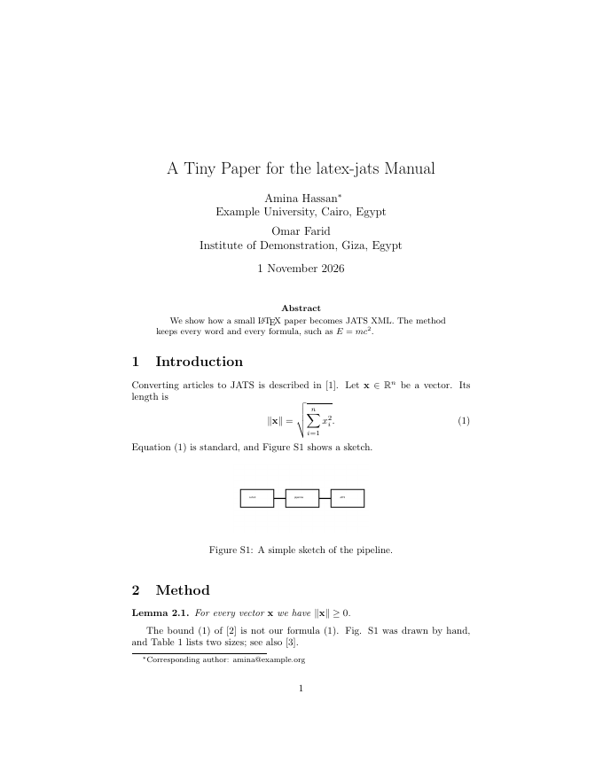
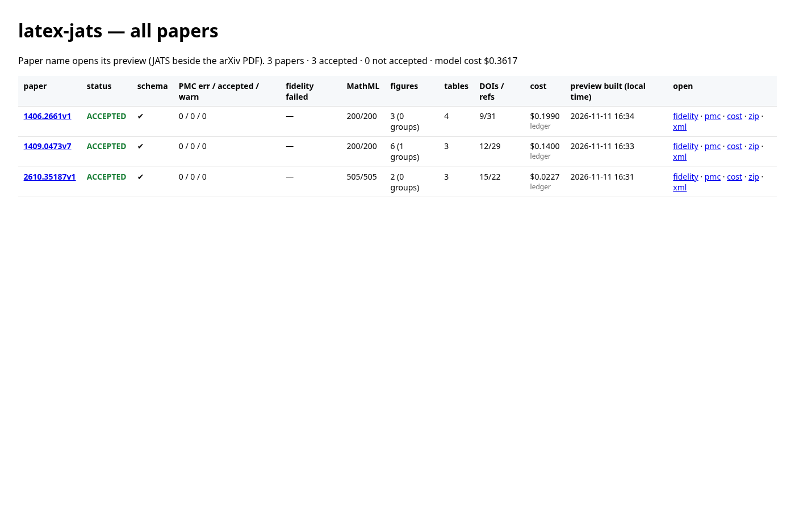
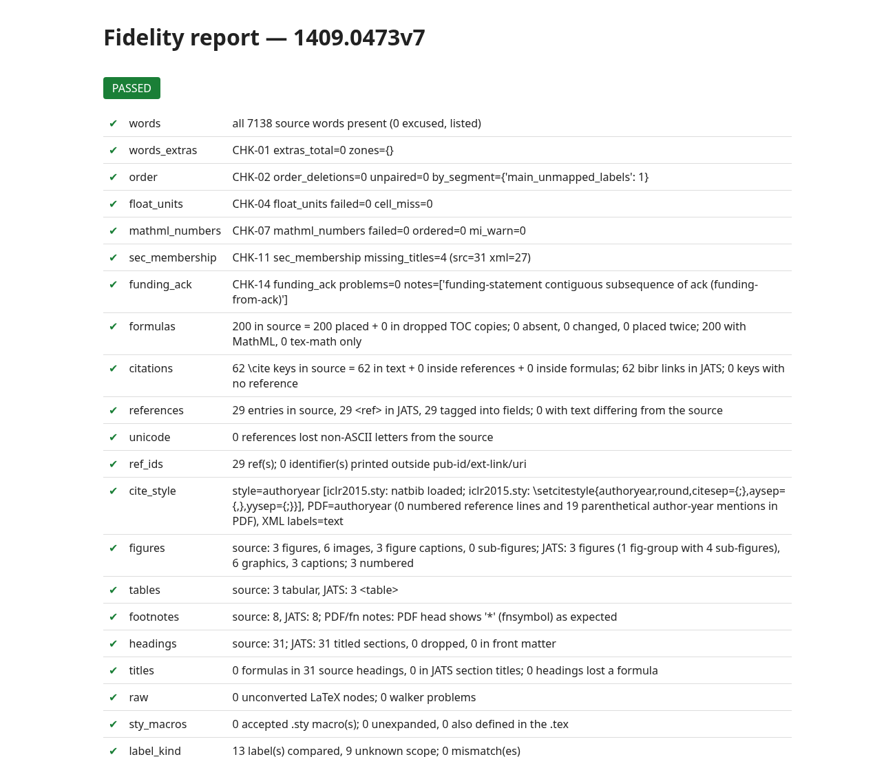
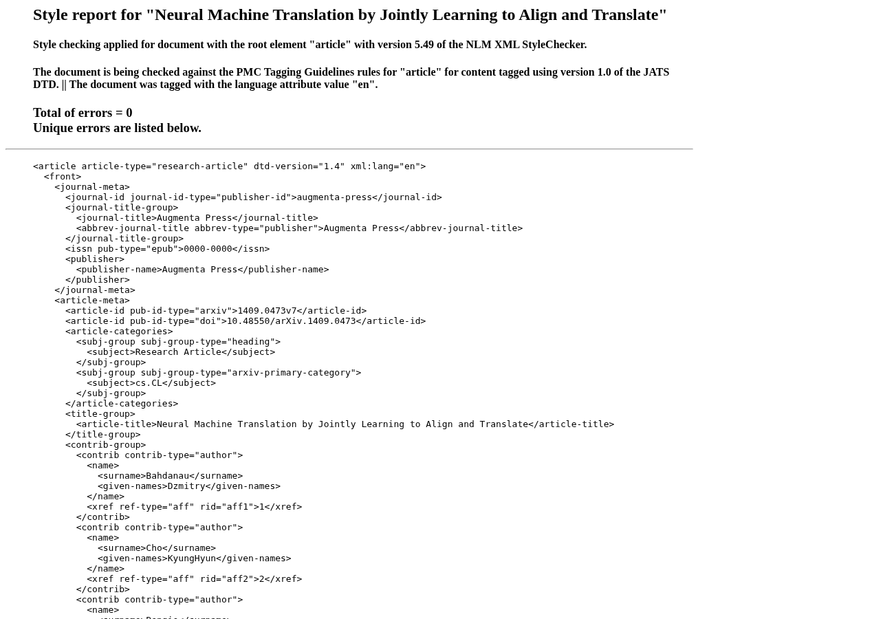
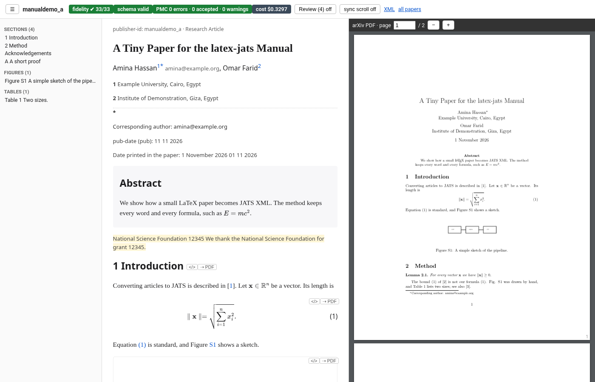
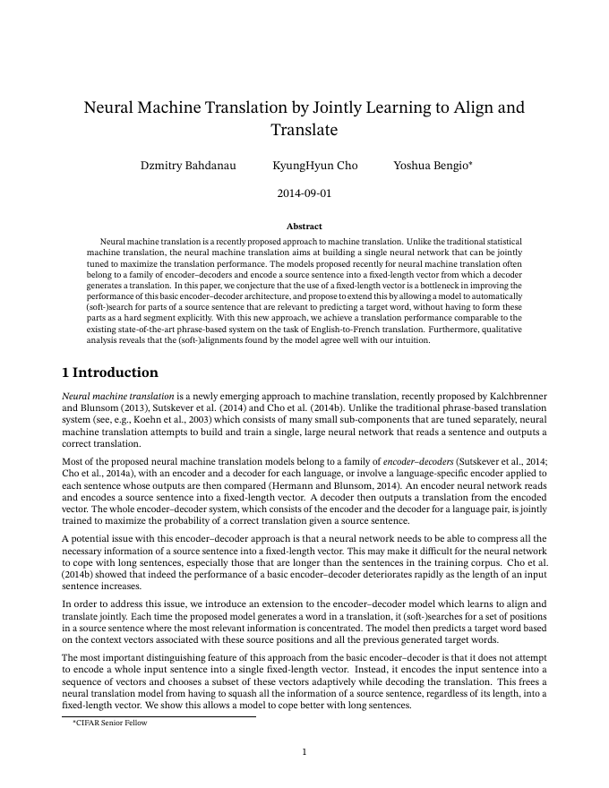
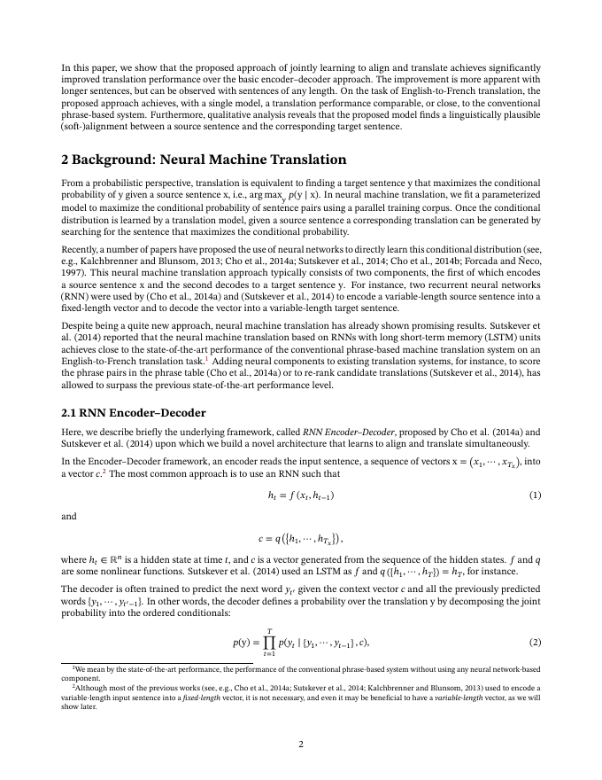

From arXiv LaTeX to PMC-ready JATS, with proof that nothing was lost
latex-jats turns the LaTeX source of a scientific paper into a JATS 1.4 XML article and a delivery package for PubMed Central. Deterministic code does the bulk of the work. A language model is consulted only where code would have to guess, and every one of its answers is checked before it is used. At the end, the tool proves word by word and formula by formula that the XML still holds everything the author wrote.
latex-jats tool folder on 11 November 2026.1Overview
What it does
PubMed Central (PMC) and most scholarly archives accept articles as JATS XML: a strict, schema-defined format for the title, authors, sections, formulas, figures, tables and references of a paper. Authors, however, write in LaTeX, and arXiv sources are as varied as their authors: custom macros, restyled counters, hand-typed equation numbers, unusual document classes and bibliography styles.
latex-jats takes one paper (an arXiv source archive, plus the arXiv PDF when it exists) and produces:
- The article:
data/output/<id>/<id>.xml, valid against the official JATS 1.4 Publishing (MathML 3) DTD and XSD. Every formula carries both its original TeX (<tex-math>) and MathML. - The PMC package:
16_package/and<id>.zip, holding the XML, the PDF and figures converted to PMC's image specifications, plus a manifest and SHA-256 checksums. - A verdict:
17_status/status.jsonsays ACCEPTED (publish without review), QUARANTINED (with every reason listed) or SOURCE_ERROR (the LaTeX itself is broken; nothing was spent). - Evidence: a fidelity report, the PMC Style Checker report, a cost report, an offline side-by-side preview of the XML next to the PDF, and one overview page for all papers.
Why it can be trusted
The model decides; code writes
The model labels, classifies and picks between candidates. It never writes article text. All XML is written by code from source text or from a recorded decision.
Every reply is checked
Each model reply must pass the step's own checks: words kept, formulas unchanged, ids kept, segments rejoining to the exact source. A failing reply is asked again with the problems listed.
Proof at the end
fidelity counts everything in the source again (words, formulas, citations, references, figures, tables, footnotes, headings) and finds it in the XML. Anything dropped on purpose is listed with its reason.
Money is guarded
Each paper has a hard spending cap, checked before every call. An append-only ledger records every request. A kill switch blocks all calls, and cached replies are reused for $0.
The pipeline at a glance
Stages run in this order. Each reads only the output folders of earlier stages and writes its own folder NN_<stage>/ under data/output/<id>/.
Eight stages may call the model (blue in Figure 1). Six of them (macros, structure, front, references, body, links) accept --update and skip when their output exists; body and links also keep per-decision caches (raw_decisions.json, model_decisions.json). formulas and validate do not accept --update and recompute every run. formulas reruns pandoc, latexmlmath and the rules, then keeps an earlier model rewrite from its previous formulas.json when the formula's TeX is unchanged and its symbols check passes: only new formulas reach the model. validate revalidates the new assembled XML, and reuses an accepted fix for an identical block (or the same block under shifted ids) from its call logs, which pipeline.py keeps as its cache. Every model call goes through ask(), which tries replay first, so an identical request is never paid twice in any stage.
scripts/pipeline.py (the STAGES list). references runs in parallel with front. validate calls the model only when the schemas report errors, and formulas only when no converter can read a formula.Results on the sample papers
The release ships with three converted arXiv sample papers in data/output: 1406.2661v1, 1409.0473v7 and 2610.35187v1. All three are ACCEPTED: schema-valid, 0 PMC errors, every fidelity check passing, and no warnings in status.json. When the release's sample set changes, this table changes with it.
| Paper | Source | Formulas (MathML) | References / DOIs | Model calls | Cost | Status |
|---|---|---|---|---|---|---|
1406.2661v1Generative Adversarial Nets | 3,925 words, 10 headings, NIPS style file | 200 / 200 | 31 / 9 | macros, structure, front ×4 (3 rejected and re-asked), references ×2 | $0.1990 | ACCEPTED |
1409.0473v7Neural Machine Translation by Jointly Learning to Align and Translate | 7,138 words, 31 headings, 8 footnotes | 200 / 200 | 29 / 12 | structure, front, references ×3 (1 rejected and re-asked) | $0.1400 | ACCEPTED |
2610.35187v1Fast Calibration of Generalized Posteriors via Dirichlet Reweighting | 7,407 words, 18 headings, .bib bibliography | 505 / 505 | 22 / 15 (no model: read from the .bib/.bbl) | structure, front, formulas ×5 (1 rejected and re-asked) | $0.0227 | ACCEPTED |
Figures from data/output/run_history.jsonl and each paper's 02_inventory/source_inventory.json (fresh paid runs from scratch with the current tool, 11 Nov 2026, started 16:29 Cairo time). Wall time 303 s (1406), 210 s (1409) and 76 s (2610); $0.3617 for the three. Every later replay of these papers costs $0.

19_preview/index.html for 1409.0473v7: our JATS, rendered by the tool's own renderer, beside the arXiv PDF. The badges at the top show fidelity 33/33, schema valid, PMC 0 errors and cost $0.1400. Click any image to enlarge it.Scope and limits
- The input is one LaTeX paper at a time (an arXiv id such as
1409.0473v7, or any name with a local--tararchive). Batch runs are a loop overpipeline.py. - A paper that is not on arXiv is converted the same way, with two differences: it is identified by a
publisher-idinstead of arXiv identifiers, and it gets a placeholder pub-date (the run date), announced by aWARNINGline, until the publishing system sets the real date (see stage 01). - The target is JATS 1.4 Publishing with MathML 3 (
tag_setinconfig.json;archivingis also supported). The journal metadata is the Augmenta Press placeholder, including the placeholder ISSN 0000-0000. - The model is Gemini (
gemini-3.8-flashby default) through thegoogle-genaiSDK. No other provider is wired in. - The tool does not upload anything to PMC. It produces the package; delivery is a separate step.
- A paper is only ACCEPTED when every gate holds. Anything doubtful becomes QUARANTINED for a human, never silently "fixed".
2Install and quick start
The tool is a folder of Python scripts. There is no package to install, no virtual environment, no server and no database.
Everything a run produces lands in data/ inside the tool folder.
Requirements
| What | Version / source | Used by |
|---|---|---|
| Python | 3.11 (3.10 also works). The reference machine uses pyenv 3.11.9. | everything |
| Python packages | requirements.txt: google-genai 2.25.0, pydantic 2.13.4, lxml ≥5.2, pillow ≥10, cairosvg ≥2.7, ntplib 0.4.0, pytest ≥8 | model calls, schemas, XML, figures, call-log timestamps, tests |
| pandoc | 3.x (brew install pandoc). The outputs here were made with pandoc 3.12.1; another version can write different MathML. | LaTeX parsing (as a parser only), MathML, reference text, preview --pdf |
| LaTeXML | optional (brew install latexml), 0.8.8 here | formulas: latexmlmath fallback |
| TeX Live | pdflatex, lualatex | TikZ drawings in sources, preview --pdf |
| poppler | pdftoppm, pdftotext | PDF figures to PNG, PDF evidence checks in fidelity, preview anchors |
| librsvg + cairo | installed by setup.py through Homebrew when missing | SVG figures in package |
| Vendored files | JATS 1.4 DTD + XSD (NLM), PMC Style Checker 5.49, MathJax 3.2.2, pdf.js 3.11.174, downloaded by setup.py into scripts/vendor/ with pinned checksums | validate, pmc_style, preview |
| API key | GOOGLE_API_KEY or GEMINI_API_KEY, read from the environment only. No .env file is read. | model stages |
One-time setup
cd latex-jats # the tool folder
pip install -r requirements.txt
brew install pandoc # pandoc 3.x
brew install latexml # optional: latexmlmath fallback for formulas
python3 -B scripts/setup.py # fetch what is missing into scripts/vendor/, then check
python3 -B scripts/setup.py --check # report only: downloads and installs nothing; exit 1 if anything is missing
export GOOGLE_API_KEY=... # e.g. in ~/.zshrcsetup.py --check on the reference machine. Note that the key is reported as present without its value:
OK: DTD already in vendor/jats-publishing-1.4-mathml3/dtd
OK: XSD already in vendor/jats-publishing-1.4-mathml3/xsd
OK: mathjax-3.2.2 already in vendor/mathjax-3.2.2
OK: pdfjs-3.11.174 already in vendor/pdfjs-3.11.174
OK: PMC Style Checker already in vendor/nlm-style
OK: rsvg-convert (librsvg) and cairo for SVG figures
OK: pdftoppm
OK: pdftotext
OK: lualatex
OK: pandoc 3.12.1
OK: latexmlmath (latexmlmath (LaTeXML version 0.8.8))
OK: python package google-genai
OK: python package pydantic
OK: python package lxml
OK: python package pillow
OK: python package cairosvg
OK: Gemini API key present (value not shown)
check completeHelp. python3 -B scripts/setup.py -h (or --help) prints the help text below and exits 0; it downloads, installs and checks nothing. --check is the only other argument. Anything else prints a usage line, then the same help, and exits 2 without running setup. These arguments are read only when setup.py is run as a script, so importing it (as the tests do) never starts a setup.
One-time setup: fetch the official JATS 1.4 schemas (tag set from config.json) and check tools.
Downloads, from NLM's public server, the JATS 1.4 DTD and XSD (Publishing by default) with
MathML 3 into vendor/, then reports whether pandoc 3, LaTeXML, the Python
packages and an API key are present. The SVG converter for `package`
(rsvg-convert from librsvg, and the cairo library cairosvg needs) is
installed with Homebrew only when missing. Running it again re-checks and
only downloads/installs what is missing. Python, Homebrew itself and the
requirements.txt packages are NOT installed here.
python3 -B scripts/setup.py # fetch/install what is missing, then check
python3 -B scripts/setup.py --check # only report; downloads/installs nothing--bogus) the first line is usage: python3 -B scripts/setup.py [--check | -h], followed by this text, and the exit code is 2.First run for free: the kill switch
Every run can be made unable to spend money. With LATEX_JATS_NO_MODEL=1 in the environment, src/llm.py refuses each model call before anything is built or sent.
--no-model also tells the stages that can work without the model to do so. On a paper that was converted before, this replays every cached answer and reproduces the article for $0:
LATEX_JATS_NO_MODEL=1 python3 -B scripts/pipeline.py 1409.0473v7 --no-modelEvery model stage reuses its stored answer, so the run costs $0.0000, and the pipeline is deterministic once the answers are cached: the same inputs give the same XML. The stored answers of the three sample papers come from their last paid conversion, one line per paper in data/output/run_history.jsonl:
{"paper_id": "2610.35187v1", "started": "2026-11-11T14:29:47+00:00", "seconds": 76, "stages": ["sources", "inventory", "macros", "structure", "front", "references", "doi", "normalize", "formulas", "body", "links", "assemble", "validate", "fidelity", "pmc_style", "package", "status", "cost", "preview", "overview"], "stopped_at": null, "status": "ACCEPTED", "args": ["2610.35187v1"], "steps": {"structure": {"calls": 1, "rejected": 0, "usd": 0.009}, "front": {"calls": 1, "rejected": 0, "usd": 0.0032}, "formulas": {"calls": 5, "rejected": 1, "usd": 0.0105}}, "usd": 0.0227, "paper_total_usd": 0.0227}
{"paper_id": "1409.0473v7", "started": "2026-11-11T14:29:46+00:00", "seconds": 210, "stages": ["sources", "inventory", "macros", "structure", "front", "references", "doi", "normalize", "formulas", "body", "links", "assemble", "validate", "fidelity", "pmc_style", "package", "status", "cost", "preview", "overview"], "stopped_at": null, "status": "ACCEPTED", "args": ["1409.0473v7"], "steps": {"structure": {"calls": 1, "rejected": 0, "usd": 0.0154}, "front": {"calls": 1, "rejected": 0, "usd": 0.0068}, "references": {"calls": 3, "rejected": 1, "usd": 0.1178}}, "usd": 0.14, "paper_total_usd": 0.14}
{"paper_id": "1406.2661v1", "started": "2026-11-11T14:29:44+00:00", "seconds": 303, "stages": ["sources", "inventory", "macros", "structure", "front", "references", "doi", "normalize", "formulas", "body", "links", "assemble", "validate", "fidelity", "pmc_style", "package", "status", "cost", "preview", "overview"], "stopped_at": null, "status": "ACCEPTED", "args": ["1406.2661v1"], "steps": {"macros": {"calls": 1, "rejected": 0, "usd": 0.0034}, "structure": {"calls": 1, "rejected": 0, "usd": 0.0067}, "front": {"calls": 4, "rejected": 3, "usd": 0.1316}, "references": {"calls": 2, "rejected": 0, "usd": 0.0573}}, "usd": 0.199, "paper_total_usd": 0.199}On a new paper the same command stops at the first stage that needs the model, having spent nothing:
=== sources ===
note: skipped 2 macOS metadata file(s) (._*, .DS_Store, __MACOSX)
WARNING: manualdemo_a is not an arXiv paper: pub-date set to the run date 2026-11-11 as a placeholder (the publishing system should set the real date).
OK: 2 files, main main.tex, 67 lines flat, 1 images -> data/output/manualdemo_a/01_sources
--- sources: ok (0s)
=== inventory ===
OK: 154 words, 1 display + 4 inline formulas, 2 citations, 3 references, 1 figures, 1 tables, 0 footnotes, 4 headings -> data/output/manualdemo_a/02_inventory/source_inventory.json
--- inventory: ok (0s)
=== macros ===
MODEL BLOCKED: paper: model calls are switched off (LATEX_JATS_NO_MODEL=1 / --no-model)
--- macros: exit 3 (1s)
QUARANTINED: manualdemo_a
- pipeline stopped at `macros (budget cap or no-model guard)`
- no fidelity result
- no schema validation result
- no PMC style result
- no final XML manualdemo_a.xml
- no PMC package
WARNING: manualdemo_a is not an arXiv paper: pub-date set to the run date 2026-11-11 as a placeholder (the publishing system should set the real date).
STOPPED at `macros`. Fix it, then resume with --from macros
run cost $0.0000 (this run's calls only) -> run_history.jsonl
exit 3tar, so it also holds two AppleDouble ._ files; sources skips them. manualdemo_a is not an arXiv paper, so it gets a placeholder pub-date (the run date) and a WARNING line from sources and again from status; warnings never change the verdict (see stage 01, sources).First real run
python3 -B scripts/pipeline.py 1409.0473v7 --tar ~/Downloads/arXiv-1409.0473v7.tar.gz
python3 -B scripts/pipeline.py 1409.0473v7 # or: download the source and PDF from arXiv
python3 -B scripts/pipeline.py manualdemo_a --tar data/input/manualdemo_a.tar.gz --max-usd 0.50 # any name works with --tarThis manual's main hands-on example is manualdemo_a, a one-page paper written for this manual. It exercises every model step: an author macro that defines a theorem (macros), an unnumbered acknowledgement and an appendix (structure), a corresponding-author footnote and funding (front), three references including a book (references), a restyled figure counter "S1" and a hand-typed "(1)" that belongs to a cited paper (links).
\documentclass{article}
\usepackage{amsmath,amssymb,amsthm,graphicx}
\newcommand{\R}{\mathbb{R}}
\newcommand{\vect}[1]{\mathbf{#1}}
\newcommand{\mytheorem}[2]{\newtheorem{#1}{#2}[section]}
\mytheorem{lemma}{Lemma}
\renewcommand{\thefigure}{S\arabic{figure}}
\title{A Tiny Paper for the latex-jats Manual}
\author{Amina Hassan\thanks{Corresponding author: amina@example.org}\\
Example University, Cairo, Egypt
\and Omar Farid\\
Institute of Demonstration, Giza, Egypt}
\date{1 November 2026}
\begin{document}
\maketitle
\begin{abstract}
We show how a small \LaTeX{} paper becomes JATS XML. The method keeps every
word and every formula, such as $E = mc^2$.
\end{abstract}
\section{Introduction}\label{sec:intro}
Converting articles to JATS is described in~\cite{jats2024}. Let $\vect{x} \in \R^n$
be a vector. Its length is
\begin{equation}\label{eq:norm}
\|\vect{x}\| = \sqrt{\sum_{i=1}^{n} x_i^2}.
\end{equation}
Equation~\eqref{eq:norm} is standard, and Figure~\ref{fig:sketch} shows a sketch.
\begin{figure}[h]
\centering
\includegraphics[width=0.4\textwidth]{fig1.png}
\caption{A simple sketch of the pipeline.}\label{fig:sketch}
\end{figure}
\section{Method}\label{sec:method}
\begin{lemma}\label{lem:pos}
For every vector $\vect{x}$ we have $\|\vect{x}\| \ge 0$.
\end{lemma}
The bound (1) of~\cite{smith2020} is not our formula (1). Fig. S1 was drawn by
hand, and Table~\ref{tab:sizes} lists two sizes; see also [3].
\begin{table}[h]
\centering
\caption{Two sizes.}\label{tab:sizes}
\begin{tabular}{lr}
Name & Size \\
small & 1 \\
large & 10 \\
\end{tabular}
\end{table}
\section*{Acknowledgements}
We thank the National Science Foundation for grant 12345.
\appendix
\section{A short proof}\label{app:proof}
Lemma~\ref{lem:pos} follows from (1), because a square root is never negative.
\begin{thebibliography}{9}
\bibitem{jats2024} National Information Standards Organization. JATS: Journal
Article Tag Suite, version 1.4. ANSI/NISO Z39.96-2024, 2024.
\bibitem{smith2020} J.~Smith and K.~Lee. Norms of vectors. \emph{Journal of
Examples}, 12(3):45--67, 2020.
\bibitem{knuth1984} D.~E. Knuth. \emph{The {\TeX}book}. Addison-Wesley,
Reading, MA, 1984.
\end{thebibliography}
\end{document}manualdemo_a.tar.gz holds exactly two files: this main.tex and fig1.png, a small hand-drawn sketch of the pipeline (it appears as Figure S1 in the PDF below). To rebuild it, save the two files in an empty folder and run COPYFILE_DISABLE=1 tar czf manualdemo_a.tar.gz main.tex fig1.png there (an archive made without COPYFILE_DISABLE=1 works too, because sources skips macOS metadata); any PNG works as fig1.png. The PDF is pdflatex main.tex, saved as data/input/manualdemo_a.pdf.
data/input/manualdemo_a.pdf.A paid run of manualdemo_a with --max-usd 0.50 took 655 s and cost $0.3297 (the ledger’s figure; the console’s run-cost line rounds it to $0.3296). Replaying the same paper costs nothing, because every model answer is reused, and ends ACCEPTED:
=== sources ===
note: skipped 2 macOS metadata file(s) (._*, .DS_Store, __MACOSX)
WARNING: manualdemo_a is not an arXiv paper: pub-date set to the run date 2026-11-11 as a placeholder (the publishing system should set the real date).
OK: 2 files, main main.tex, 67 lines flat, 1 images -> data/output/manualdemo_a/01_sources
--- sources: ok (0s)
=== inventory ===
OK: 154 words, 1 display + 4 inline formulas, 2 citations, 3 references, 1 figures, 1 tables, 0 footnotes, 4 headings -> data/output/manualdemo_a/02_inventory/source_inventory.json
--- inventory: ok (0s)
=== macros ===
OK: data/output/manualdemo_a/03_macros/macros.json exists (use --update to ask again)
--- macros: ok (0s)
=== structure ===
OK: data/output/manualdemo_a/04_structure/structure.json exists (use --update to ask again)
--- structure: ok (0s)
=== front ===
OK: data/output/manualdemo_a/05_front/front.json exists (use --update to ask again)
--- front: ok (0s)
=== references ===
OK: data/output/manualdemo_a/06_references/references.json exists (use --update to ask again)
--- references: ok (0s)
=== doi ===
OK: 0 DOI(s) matched for 3 references (0 Crossref queries, 0 errors) -> data/output/manualdemo_a/07_doi
--- doi: ok (0s)
=== normalize ===
OK: 2 CITE, 1 DISP, 4 HEAD, 4 INL, 6 LABEL, 4 REF tokens, 2 macros expanded, 0 left to pandoc, 0 intentional drops -> data/output/manualdemo_a/08_normalize
--- normalize: ok (0s)
=== formulas ===
pandoc: 5/5 formulas
OK: 5 formulas: 5 pandoc -> data/output/manualdemo_a/09_formulas/formulas.json
--- formulas: ok (0s)
=== body ===
OK: 21/21 tokens placed, 0 footnotes, 3 layout nodes dropped, 0 raw left, 0 problems -> data/output/manualdemo_a/10_body
--- body: ok (1s)
=== links ===
OK: 2 equation links (1 ambiguous: decisions reused from model_decisions.json), 1/1 figures and 1/1 tables numbered (0 tabular(s) take no table number), 1 figure mentions, 1 hand-typed citations linked -> data/output/manualdemo_a/11_links
--- links: ok (0s)
=== assemble ===
WARNING: manualdemo_a is not an arXiv paper: pub-date set to the run date 2026-11-11 as a placeholder (the publishing system should set the real date).
OK: well-formed JATS, 9 KB -> data/output/manualdemo_a/12_assemble/manualdemo_a.xml
--- assemble: ok (0s)
=== validate ===
round 0: 0 schema error(s)
OK: valid against JATS 1.4 Publishing (MathML3) DTD and XSD -> data/output/manualdemo_a/manualdemo_a.xml
--- validate: ok (3s)
=== fidelity ===
PASS words all 154 source words present (0 excused, listed)
PASS words_extras CHK-01 extras_total=0 zones={}
PASS order CHK-02 order_deletions=0 unpaired=0 by_segment={}
PASS float_units CHK-04 float_units failed=0 cell_miss=0
PASS mathml_numbers CHK-07 mathml_numbers failed=0 ordered=0 mi_warn=0
PASS sec_membership CHK-11 sec_membership missing_titles=2 (src=4 xml=2)
PASS funding_ack CHK-14 funding_ack problems=0 notes=['funding-statement contiguous subsequence of ack (funding-from-ack)']
PASS formulas 5 in source = 5 placed + 0 in dropped TOC copies; 0 absent, 0 changed, 0 placed twice; 5 with MathML, 0 tex-math only
PASS citations 2 \cite keys in source = 2 in text + 0 inside references + 0 inside formulas; 3 bibr links in JATS; 0 keys with no reference
PASS references 3 entries in source, 3 <ref> in JATS, 3 tagged into fields; 0 with text differing from the source
PASS unicode 0 references lost non-ASCII letters from the source
PASS ref_ids 3 ref(s); 0 identifier(s) printed outside pub-id/ext-link/uri
PASS cite_style style=numeric [bibitems have no optional [label] -> numeric], PDF=numeric (3/3 numbered reference lines in PDF), XML labels=numeric
PASS figures source: 1 figures, 1 images, 1 figure captions, 0 sub-figures; JATS: 1 figures (0 fig-group with 0 sub-figures), 1 graphics, 1 captions; 1 numbered
PASS tables source: 1 tabular, JATS: 1 <table>
PASS footnotes source: 0, JATS: 0; PDF/fn notes: PDF head shows '*' (fnsymbol) as expected
PASS headings source: 4; JATS: 4 titled sections, 0 dropped, 0 in front matter
PASS titles 0 formulas in 4 source headings, 0 in JATS section titles; 0 headings lost a formula
PASS raw 0 unconverted LaTeX nodes; 0 walker problems
PASS sty_macros 0 accepted .sty macro(s); 0 unexpanded, 0 also defined in the .tex
PASS label_kind 4 label(s) compared, 3 unknown scope; 0 mismatch(es)
PASS algorithm no algorithms in source
PASS placement ok
PASS front_dupes 0 custom-meta value(s); 0 duplicate(s) of a held note/affiliation/funding
PASS unused_excuses 0 unused; 0 CHK-03 problem(s)
PASS authors 2 authors; 0 order/count problem(s)
PASS tex_leaks 0 leak/hidden problem(s)
PASS enumerator_xrefs 0 enumerator-like disp-formula xref(s) (none)
PASS printed 1 equation, 1 figure, 1 table, 1 theorem, 3 section numbers looked up in the arXiv PDF text; 0 not found
PASS pdf_labels not compared; no confirmed mismatch (1 informational note(s))
PASS xref_form 3 disp-formula xref(s); 0 confirmed parenthesis mismatch(es)
PASS pdf_outline not compared: the PDF has no outline (4 headings)
PASS schema valid against JATS 1.4 Publishing DTD + XSD
OK: fidelity PASSED -> data/output/manualdemo_a/14_fidelity/fidelity_report.html
--- fidelity: ok (1s)
=== pmc_style ===
OK: PMC style (article): 0 errors, 0 accepted, 0 warnings -> data/output/manualdemo_a/15_pmc_style/pmc_style.json
--- pmc_style: ok (0s)
=== package ===
OK: 1 figure file(s) (0 converted), manifest + checksums -> data/output/manualdemo_a/16_package, zip data/output/manualdemo_a/manualdemo_a.zip
--- package: ok (0s)
=== status ===
ACCEPTED: manualdemo_a
WARNING: manualdemo_a is not an arXiv paper: pub-date set to the run date 2026-11-11 as a placeholder (the publishing system should set the real date).
--- status: ok (0s)
=== cost ===
manualdemo_a: $0.3297 in the surviving call logs; $0.3297 cumulative (cost_ledger.jsonl, cap $1.00)
macros 2 calls (1 rejected) in 1878 think 78641 out 217 $0.2971 581s
structure 1 calls (0 rejected) in 1450 think 384 out 294 $0.0036 7s
front 1 calls (0 rejected) in 1306 think 0 out 442 $0.0026 5s
references 1 calls (0 rejected) in 1106 think 4898 out 1234 $0.0238 47s
links 1 calls (0 rejected) in 537 think 458 out 104 $0.0025 7s
--- cost: ok (0s)
=== preview ===
PDF anchors: 7/7 blocks found in the arXiv PDF
5 formulas, 6 nav entries, 11 LaTeX sources, review: 4 red / 1 info
OK: 5 papers, 4 accepted, $0.8282 -> data/20_overview/index.html
all papers: data/20_overview/index.html
OK: open data/output/manualdemo_a/19_preview/index.html
--- preview: ok (0s)
=== overview ===
OK: 5 papers, 4 accepted, $0.8282 -> data/20_overview/index.html
--- overview: ok (0s)
run cost $0.0000 (this run's calls only) -> run_history.jsonl
DONE in 7sReading the result
- Verdict. Open
data/output/<id>/17_status/status.json.ACCEPTED: the XML and the zip are ready.QUARANTINED: readreasons.SOURCE_ERROR: the LaTeX is broken; fix the archive and rerun fromsources. - Look at it. Open
data/output/<id>/19_preview/index.html(works offline): the XML rendered beside the PDF, with review overlays on anything that needs a human eye. - Evidence.
14_fidelity/fidelity_report.html(every check),15_pmc_style/pmc_style_report.html(PMC's own checker),18_cost/cost_report.html. - All papers.
data/20_overview/index.htmlhas one row per paper.

data/20_overview/index.html in the tool folder after the fresh run of the three sample papers: all ACCEPTED, $0.3617 in total. A paper that is not ACCEPTED shows its reasons under the status and its row is shaded. A paper with neither a final XML nor an 12_assemble folder (manualdemo_c, stopped at inventory) has no row.Where everything lives
latex-jats/
README.md requirements.txt
docs/ design notes, progress and decision logs, DEFERRED_NEXT_PHASE.md, MANUAL/ (this manual)
prompts/<step>/*.md the model prompts (core.md first)
scripts/ pipeline.py + one script per stage, config.json, prices.json, pytest.ini
src/ shared code: walker, checks, ledger, model client, renderers ...
tests/ the test suite (tests/fixtures/: small source copies some tests need)
vendor/ JATS DTD/XSD, PMC Style Checker, MathJax, pdf.js (filled by setup.py)
data/
input/<id>.tar.gz + <id>.pdf sources (copied here by --tar or downloaded from arXiv)
output/<id>/ everything the pipeline writes for one paper
output/run_history.jsonl one line per run, all papers
20_overview/index.html the overview page
spend/<date>/ spend report of paid calls made under a run id
(backups and scratch copies are kept in a separate folder OUTSIDE the tool folder, never inside it)One paper's output folder after a complete run (manualdemo_a):
data/output/manualdemo_a/
├── 00_api_call_logs/
│ ├── 2026-11-11T08-29-49.904Z_paper_55f35dbcb3d5-a1_macros/ (call.json, contents_01_prompt.txt, contents_02_text.txt, problems.json, prompt_parts, request.json, response.json, response_text.txt)
│ ├── 2026-11-11T08-34-19.640Z_paper_55f35dbcb3d5-a2_macros/ (call.json, contents_01_prompt.txt, contents_02_text.txt, contents_03_text.txt, prompt_parts, request.json, response.json, response_text.txt)
│ ├── 2026-11-11T08-34-27.126Z_paper_ba1eec5c7f73-a1_structure/ (call.json, contents_01_prompt.txt, contents_02_text.txt, prompt_parts, request.json, response.json, response_text.txt)
│ ├── 2026-11-11T08-34-33.077Z_paper_a08dcd6c208f-a1_front/ (call.json, contents_01_prompt.txt, contents_02_text.txt, prompt_parts, request.json, response.json, response_text.txt)
│ ├── 2026-11-11T08-35-15.205Z_refs_01_8936cf295cde-a1_references/ (call.json, contents_01_prompt.txt, contents_02_text.txt, prompt_parts, request.json, response.json, response_text.txt)
│ └── 2026-11-11T08-35-28.042Z_paper_317ebfb61c51-a1_links/ (call.json, contents_01_prompt.txt, contents_02_text.txt, prompt_parts, request.json, response.json, response_text.txt)
├── 01_sources/
│ ├── arxiv_meta.json (56 B)
│ ├── files/
│ │ ├── fig1.png (2,578 B)
│ │ └── main.tex (2,201 B)
│ ├── main_flat.tex (2,201 B)
│ └── sources.json (431 B)
├── 02_inventory/
│ ├── source_check.json (141 B)
│ └── source_inventory.json (3,246 B)
├── 03_macros/
│ └── macros.json (1,058 B)
├── 04_structure/
│ └── structure.json (1,373 B)
├── 05_front/
│ └── front.json (1,746 B)
├── 06_references/
│ └── references.json (7,247 B)
├── 07_doi/
│ └── doi.json (1,174 B)
├── 08_normalize/
│ ├── body.tex (1,219 B)
│ ├── drops.json (121 B)
│ ├── front_abstract.tex (179 B)
│ ├── front_subtitle.tex (57 B)
│ ├── front_title.tex (95 B)
│ └── tokens.json (2,584 B)
├── 09_formulas/
│ └── formulas.json (1,824 B)
├── 10_body/
│ ├── back_parts.json (390 B)
│ ├── body.xml (3,212 B)
│ ├── front_parts.json (553 B)
│ ├── raw_decisions.json (288 B)
│ └── walk_report.json (1,350 B)
├── 11_links/
│ ├── back_parts.json (446 B)
│ ├── body.xml (3,127 B)
│ ├── front_parts.json (492 B)
│ ├── links.json (419 B)
│ └── model_decisions.json (171 B)
├── 12_assemble/
│ └── manualdemo_a.xml (9,447 B)
├── 13_validate/
│ ├── manualdemo_a.xml (9,447 B)
│ └── validation.json (191 B)
├── 14_fidelity/
│ ├── fidelity.json (9,078 B)
│ ├── fidelity_report.html (4,909 B)
│ └── integrity_report.json (5,853 B)
├── 15_pmc_style/
│ ├── pmc_style.json (363 B)
│ └── pmc_style_report.html (12,667 B)
├── 16_package/
│ ├── checksums.sha256 (241 B)
│ ├── fig1.png (2,578 B)
│ ├── manifest.json (965 B)
│ ├── manualdemo_a.pdf (195,729 B)
│ └── manualdemo_a.xml (9,447 B)
├── 17_status/
│ └── status.json (852 B)
├── 18_cost/
│ └── cost_report.html (1,299 B)
├── 19_preview/
│ ├── anchors.json (1,030 B)
│ ├── assets/ (8 files: preview data, scripts, styles, vendored MathJax and pdf.js)
│ └── index.html (8,108 B)
├── cost_ledger.jsonl (3,376 B)
├── manualdemo_a.xml (9,447 B)
├── manualdemo_a.zip (193,519 B)
└── run_history.jsonl (1,757 B)3Core concepts
Six ideas explain almost everything the tool does. They are worth reading before the stage reference.
Paper id, stages and folders
A run is always about one paper id: an arXiv id with version (1409.0473v7), or any name when the archive is given with --tar (manualdemo_a).
Whether an id is an arXiv id is decided in one place, src/common.py is_arxiv_id, which tests the part before the first _ (so a test variant such as 1409.0473v7_x still counts as arXiv). Only arXiv ids get arXiv downloads, arXiv metadata and arXiv identifiers in the XML; any other id is a local paper, with a publisher-id and a placeholder pub-date (stage 01, stage 12).
Each stage is one script, scripts/<stage>.py <paper_id>, that can also be run on its own. It reads earlier folders and writes exactly one folder, numbered in pipeline order (src/common.py STAGE_DIRS):
| Folder | Stage | Folder | Stage |
|---|---|---|---|
00_api_call_logs | every model call (all stages) | 10_body | body |
01_sources | sources | 11_links | links |
02_inventory | inventory | 12_assemble | assemble |
03_macros | macros | 13_validate | validate |
04_structure | structure | 14_fidelity | fidelity |
05_front | front | 15_pmc_style | pmc_style |
06_references | references | 16_package | package |
07_doi | doi | 17_status | status |
08_normalize | normalize | 18_cost | cost |
09_formulas | formulas | 19_preview | preview |
Stage 20, overview, is global: data/20_overview/index.html. The output root follows LATEX_JATS_OUTPUT and the overview folder follows LATEX_JATS_OVERVIEW; both exist for scratch copies and tests.
Tokens: how content is protected
pandoc is a good LaTeX parser but would rewrite formulas, guess citations and lose labels. So before pandoc sees the text, normalize replaces every formula, citation, cross-reference, label and heading marker by an opaque token: a word pandoc cannot spoil, such as XJATSINL0005X.
The exact original lives in 08_normalize/tokens.json. After pandoc, the walker expands each token back into JATS elements. Six kinds exist:
| Token | Stands for | Becomes |
|---|---|---|
XJATSDISPnnnnX | a display formula (its TeX, tags, labels) | <disp-formula id><label/><alternatives><tex-math/><mml:math/></alternatives> |
XJATSINLnnnnX | an inline formula | <inline-formula id><alternatives>… |
XJATSCITEnnnnX | one key of a \cite | <xref ref-type="bibr" rid="rN">N</xref> |
XJATSREFnnnnX | a \ref / \eqref | <xref> to the element whose \label it names (resolved last) |
XJATSLABELnnnnX | a \label | the id of the enclosing sec / fig / table-wrap / fn / statement |
XJATSHEADnnnnX | a heading decided by structure | its label and role (section, appendix, ack) |
For 1409.0473v7 that is 339 tokens: 175 INL, 62 CITE, 31 HEAD, 31 REF, 25 DISP and 15 LABEL. The body stage reports "339/339 tokens placed": none was lost on the way through pandoc.
The model contract
All model calls go through one function, src/llm.py ask(). A stage gives it a payload (plain text it built from the source), a prompt (the files in prompts/<step>/), a response schema (a pydantic class, sent as Gemini's JSON response schema) and a check function. A reply is used only when it parses into the schema and the check returns no problems. Otherwise the problems are sent back and the model is asked again, up to 4 attempts.
What the model may decide is narrow by design:
| Step | The model decides | The check that keeps it honest |
|---|---|---|
| macros | what complex macro definitions mean (theorems, environments, delimited \defs) | every name, printed word and counter must come from the definitions; every listed item accounted for |
| structure | each heading's role, level and printed number | every heading answered once; title words exactly the source's; consistent level offset |
| front | which front-matter text is title, author, affiliation, e-mail, funding… | verbatim copies; every front-matter word lands somewhere or in unused with a reason |
| references | where each field of a reference starts and ends | the segments joined must equal the entry text, character for character |
| formulas | a converter-only rewrite of TeX that no engine can read | must convert, and keep the same letters, digits and symbols; the original TeX is still shipped |
| body_raw | what an unreadable raw LaTeX node prints (drop / text / latex / xml) | no word or formula token lost or added; well-formed, allowed elements only |
| links | printed numbers of custom-numbered figures; targets of ambiguous "(1.3)" mentions | each figure exactly one unique number; targets only from the given candidates |
| validate_fix | a markup-only repair of a block the schema rejects | same words, same tex-math, same ids, well-formed |
Caching and $0 replay
Nothing is paid for twice. Three layers make re-runs free:
- Stage output on disk.
macros,structure,front,referencesprint "exists (use --update to ask again)" and do nothing when their JSON exists.bodyandlinkskeep per-item caches (raw_decisions.json,model_decisions.json) and re-check them against today's rules. - Call-log replay. Before any request,
llm.replay()looks in00_api_call_logs/for an earlier accepted call of the same step with the same prompt text and the same payload hash (sha256, first 16 hex characters). If today's check still passes that reply, it is reused for $0, even under the kill switch. Steps can widen the match:validaterenumbers generated ids (renumber),frontadapts an earlier reply (adapt) and may reuse a once-rejected reply that passes today (reuse_rejected). - Lookup caches.
07_doi/doi.jsonkeeps Crossref's candidates and re-judges them with the current rules on every run without a new query.
Because the cost report sums the call logs, pipeline.py deletes the old logs of a model stage that is about to be asked again (with --update, or when its output folder is empty) and prints what it removed. The ledger is never touched.
Money: cap, ledger, kill switch
- Per-paper cap. Before every attempt,
ledger.check_budget()compares the paper's lifetime spend incost_ledger.jsonl(everything it ever spent, over all runs; never reset by the tool) with the cap:budget.max_usd_per_paper(1.00), overridden byLATEX_JATS_MAX_USD_PER_PAPERorpipeline.py --max-usd. Once the total has reached the cap, nothing is sent:BUDGET STOP, exit 3. Because the test is made before a call ("spent ≥ cap"), the last call can take the total slightly above the cap, by at most that one call.--max-usd 1.50raises the lifetime cap to $1.50 for that invocation only; it is not a fresh $1.50 for the run: a paper that has already spent $0.40 can spend about $1.10 more. - Run caps. When
LATEX_JATS_RUN_IDis set (paid batch runs), two more caps apply to spend-in-this-run plus the projected cost of the next call, so they stop before crossing: per paper per run (max_usd_per_paper_run, 0.80) and across the whole run (max_usd_run, 5.00). Each paid call is also appended todata/spend/<date>/spend_report.jsonland.md. - Projected cost. The worst case of one call: estimated input tokens at the input rate plus 65,536 output tokens at the output rate, about $0.246 per call with gemini-3.8-flash.
- Ledger.
data/output/<id>/cost_ledger.jsonl: astartline before every request and adoneline after it, rejected attempts included. Astartwithoutdone(killed run) is charged an estimate of input + 4,000 output tokens. The tool never deletes or rewrites this file; to reset a paper's count, rename it by hand. - Kill switch.
LATEX_JATS_NO_MODEL=1makes every call raiseMODEL BLOCKEDbefore anything is built, logged or sent (exit 3). - Prices.
scripts/prices.json, effective-dated. gemini-3.8-flash costs $0.75 per million input tokens and $3.75 per million output tokens until 2026-12-31, then $1.50 and $7.50. Thinking tokens are billed at the output rate. Batch rates apply only to calls logged with"batch_api": true; the tool sends none today.
Verdicts and exit codes
| Outcome | Meaning | Typical next step |
|---|---|---|
| ACCEPTED | final XML exists; schema valid; every fidelity check ran and passed; 0 PMC errors outside ACCEPTED_ERRORS; the results carry the SHA-256 of the current XML; the package verifies; every model call succeeded or was provably resolved; the pipeline did not stop | deliver <id>.zip |
| QUARANTINED | any gate failed or is missing; reasons lists every one | read reasons, fix the stage, prompt or source, rerun --from that stage |
| SOURCE_ERROR | the input LaTeX is broken (no \end{document}, unclosed environment, missing figure or \input file…); model stages refuse to run until the source changes | fix the archive, rerun from sources |
| Exit code | From | Meaning |
|---|---|---|
0 | any script | success (status.py: ACCEPTED) |
1 | stages, status.py | done with issues / failed check / QUARANTINED. pipeline.py carries on after exit 1 from fidelity, pmc_style, package and status, and stops after any other stage. |
3 | model stages | BUDGET STOP or MODEL BLOCKED |
4 | inventory, pipeline.py | SOURCE_ERROR |
130 | pipeline.py | killed by SIGINT/SIGTERM. The run is still recorded in run_history.jsonl. |
Warnings. Besides the verdict, status.json can carry a warnings list: facts a person should know that do not make the paper wrong. Today there are two: an arXiv paper whose license could not be fetched (the XML then has no <license>), and a local paper's placeholder pub-date. status prints each one as a WARNING: line after the verdict and its reasons. Warnings never change the verdict or the exit code, and the key is left out when there are none (as for the three sample papers).
4Stage reference
Each stage below follows the same pattern: what it is for, what it reads, how it works step by step, what it writes, who reads that next, how it fails, and what it caches or records.
The examples are real files, quoted in full, and each caption names where it comes from: a demo paper (manualdemo_a, manualdemo_b, manualdemo_c: small papers written for this manual and run in a full working copy of the tool) or a sample paper shipped with the release (1406.2661v1, 1409.0473v7, 2610.35187v1), by its arXiv id. Unless a caption says otherwise, the demo outputs come from a $0 replay with the current tool on 11 Nov 2026. Paths are shown as they appear inside any tool folder (data/output/<id>/…). In quoted files, the absolute folder of the machine where they were made is shortened to the tool-relative path (for example scripts/body.py, python3), and the demo archives, which were passed with --tar from a folder outside the tool, are shown as data/input/<id>.tar.gz, the tool's standard place for inputs. Nothing else in a quoted file is changed.
Every stage can also be run alone: python3 -B scripts/<stage>.py <paper_id>.
01 · sources deterministic
| Script | scripts/sources.py <paper_id> [--tar TAR] |
|---|---|
| Reads | the source archive, from (in order) --tar (copied to data/input/<id>.tar.gz), an existing data/input/<id>.tar.gz, or, for an arXiv id only, a download of arxiv.org/src/<id>. For an arXiv id the PDF is fetched beside it on a best-effort basis; a local paper's PDF must be placed at data/input/<id>.pdf. |
| Writes | 01_sources/files/ (the unpacked archive), main_flat.tex, sources.json, arxiv_meta.json |
| Read next by | every later stage (main_flat.tex is the single source of truth); assemble (arXiv metadata); package (figures, PDF) |
Purpose. Turn an archive of many files into one flat LaTeX file that later stages can read without knowing about \input or the archive layout.
- Safe extraction (
safe_extract): absolute paths,..and links are refused. macOS metadata is skipped before anything else (is_macos_metadata): AppleDouble._*files,.DS_Store, and everything under a__MACOSXfolder. None of them is a LaTeX input, so none is unpacked, listed insources.jsonor counted as an image. When any was skipped, the console says how many:note: skipped 2 macOS metadata file(s) (._*, .DS_Store, __MACOSX). - Main file (
find_main): thetoplevelentry of arXiv's00README.json. Otherwise the.texfiles holding both\documentclassand\begin{document}, preferringmain,ms,paperorarticle, then the largest. None found:FAILED: no .tex file with \documentclass and \begin{document}. - Flatten (
flatten):\input,\includeand\subfileare inlined recursively, comments are removed per file, and dead code (\iffalse…\fi) is skipped. - Bibliography (
inline_bbl):\bibliography{…}is replaced by the compiled.bblwhen the archive has one. arXiv requires the.bbl, and many archives carry no.bib. A biblatex.bbl(one with\entry{) is not inlined; it is listed inbiblatex_bbland read later as structured data. - Toggles and drawings:
resolve_togglessettles\iftoggle{…}in graphic paths and text.render_drawings(src/drawings.py) compiles each TikZ, pgfplots, circuitikz, tikz-cd or chemfig drawing on its own withpdflatex, in astandalonedocument that reuses the paper's preamble, and replaces it with\includegraphics{jats-drawings/drawing-N.pdf}. A drawing that fails to compile stays as LaTeX and is logged. - Figures (
convert_figures): PDF figures become PNG beside them (pdftoppm, 300 dpi under the package's pixel cap), and EPS/PS become PNG through Ghostscript. The originals stay. - arXiv metadata (arXiv ids only;
arxiv_metadata): posting dates, title, authors and categories from the Atom API, plus the license from OAI-PMH. Every request (fetch_text) is tried up to 4 times, waiting 3, 9 and 27 s, on HTTP 429/503, on timeouts and on connection errors. An existingarxiv_meta.jsonis reused only when it has bothpublishedand a non-emptylicense(refresh_arxiv_meta); when the license is missing, it is asked for again and an olderrorentry is dropped. If the license still cannot be fetched, the paper goes on without it: the XML has no<license>,sourcesprints a warning andstatusrecords one, and the verdict is not affected. - Local papers (any id that is not an arXiv id): no arXiv request at all.
load_paper_metawritesarxiv_meta.jsononce with"source": "local"and a placeholder pub-date: the date of the run, with"published_source": "placeholder-run-date". Later runs reuse that file, so the date stays fixed. The date is a placeholder for the publishing system, which should set the real one; the single place that decides it isscripts/src/pubdate.pylocal_publication_dates, so changing the policy means changing only that function.sourcesprints the notice as a warning, andassembleandstatusrepeat it.
WARNING: manualdemo_a is not an arXiv paper: pub-date set to the run date 2026-11-11 as a placeholder (the publishing system should set the real date).
WARNING: arXiv license not fetched: <license_error or "no <license> in the OAI record">; the XML will have no <license>. Rerun sources when arXiv is reachable.
note: no PDF for a local paper: put it at data/input/<id>.pdf
FAILED: no source archive (pass --tar PATH)The first line is from manualdemo_a (11 Nov 2026). The second is the license warning as the code prints it, with the reason filled in; none of the sample papers prints it, because their licenses were fetched. The last two concern local papers: a missing PDF is only a note (the PDF checks in fidelity then cannot run), and a local paper without an archive stops (exit 1).
{
"converted_figures": {
"figures/1511.pdf": "figures/1511.png",
"figures/2799.pdf": "figures/2799.png",
"figures/374.pdf": "figures/374.png",
"figures/EEA.pdf": "figures/EEA.png",
"figures/bleu.pdf": "figures/bleu.png",
"figures/rnnsearch.pdf": "figures/rnnsearch.png"
},
"drawings": [],
"biblatex_bbl": [],
"paper_id": "1409.0473v7",
"main": "search.tex",
"files": [
"fancyhdr.sty",
"figures/.svn/all-wcprops",
"figures/.svn/entries",
"figures/.svn/prop-base/1511.pdf.svn-base",
"figures/.svn/prop-base/2799.pdf.svn-base",
"figures/.svn/prop-base/374.pdf.svn-base",
"figures/.svn/prop-base/rnnsearch.pdf.svn-base",
"figures/.svn/text-base/1511.pdf.svn-base",
"figures/.svn/text-base/2799.pdf.svn-base",
"figures/.svn/text-base/374.pdf.svn-base",
"figures/.svn/text-base/EEA.pdf.svn-base",
"figures/.svn/text-base/bleu.pdf.svn-base",
"figures/.svn/text-base/rnnsearch.pdf.svn-base",
"figures/.svn/text-base/rnnsearch.svg.svn-base",
"figures/1511.pdf",
"figures/2799.pdf",
"figures/374.pdf",
"figures/EEA.pdf",
"figures/bleu.pdf",
"figures/rnnsearch.pdf",
"figures/rnnsearch.svg",
"iclr2015.sty",
"main.tex",
"search.bbl",
"search.tex",
"supp.tex"
],
"assets": [
"figures/1511.pdf",
"figures/2799.pdf",
"figures/374.pdf",
"figures/EEA.pdf",
"figures/bleu.pdf",
"figures/rnnsearch.pdf",
"figures/rnnsearch.svg"
],
"bbl": "search.bbl",
"bib_files": [],
"compiler": null,
"pdf": "1409.0473v7.pdf",
"log": [
"inlined main.tex",
"inlined supp.tex",
"\\bibliography replaced by search.bbl",
"converted figures/1511.pdf -> 1511.png",
"converted figures/2799.pdf -> 2799.png",
"converted figures/374.pdf -> 374.png",
"converted figures/EEA.pdf -> EEA.png",
"converted figures/bleu.pdf -> bleu.png",
"converted figures/rnnsearch.pdf -> rnnsearch.png"
]
}{
"published": "2014-09-01T16:33:02Z",
"updated": "2016-05-19T21:53:22Z",
"title": "Neural Machine Translation by Jointly Learning to Align and Translate",
"authors": [
"Dzmitry Bahdanau",
"Kyunghyun Cho",
"Yoshua Bengio"
],
"primary_category": "cs.CL",
"categories": [
"cs.CL",
"cs.LG",
"cs.NE",
"stat.ML"
],
"journal_ref": null,
"published_doi": null,
"license": "http://arxiv.org/licenses/nonexclusive-distrib/1.0/"
}{
"converted_figures": {},
"drawings": [],
"biblatex_bbl": [],
"paper_id": "manualdemo_a",
"main": "main.tex",
"files": [
"fig1.png",
"main.tex"
],
"assets": [
"fig1.png"
],
"bbl": null,
"bib_files": [],
"compiler": null,
"pdf": "manualdemo_a.pdf",
"log": []
}{
"source": "local",
"published": "2026-11-11",
"published_source": "placeholder-run-date"
}Failure modes. No main file, or a local paper with no archive (exit 1, FAILED). Download errors are notes, not failures (note: could not download …). When an arXiv paper's Atom metadata cannot be fetched, arxiv_meta.json records error and the paper has no posting date, so PMC reports a missing publication date; rerun sources when arXiv is reachable. A missing license only gives a warning. Caches. The archive in data/input/; the arXiv metadata once it has both published and a license; a local paper's placeholder metadata, once written.
02 · inventory deterministic gate
| Script | scripts/inventory.py <paper_id> |
|---|---|
| Reads | 01_sources/main_flat.tex, files/ |
| Writes | 02_inventory/source_inventory.json, source_check.json |
| Read next by | fidelity (the yardstick), pipeline.py (the SOURCE_ERROR guard), status |
Purpose. Count everything a reader of the source would see, before any conversion and with no knowledge of later stages: words, display and inline formulas, citation keys, bibliography items, figures, graphics, captions, tables, footnotes, headings, labels, references and URLs. Every count must be found again in the final XML. It also checks the input itself for errors, so no money is spent on a broken paper.
Source check (src/source_check.py). Errors are only strong, unambiguous signals, so that a paper arXiv compiled is never stopped by mistake:
- no
\begin{document}or no\end{document}; \begin{X}/\end{X}counts differ in the body, for environments a compiled paper always closes (skipped when a preamble macro opens X);- a
}that closes nothing; - a figure file or an
\inputfile missing from the archive.
Weaker signals (no .bbl, an unclosed { that LaTeX tolerates) are warnings. The check is tied to the SHA-256 of main_flat.tex. While that file is unchanged, pipeline.py refuses every model stage of the paper (exit 4), even when the run starts later than inventory.
{
"ok": true,
"errors": [],
"warnings": [],
"main_flat_sha256": "4ccc8a916833e7321e1d3b0e3d43f7ebbd78233948d4f84163f8a9a810d0dc4e"
}{
"ok": false,
"errors": [
"no \\end{document}: the main file is cut off or incomplete",
"\\begin{itemize} ×1 but \\end{itemize} ×0: an environment is not closed",
"figure file(s) missing from the archive: missing-figure.png"
],
"warnings": [],
"main_flat_sha256": "11fa3f70147db0b17f0906ed6d95fdf73fb8fe35dea985ec102fee4472e50f62"
}{
"paper_id": "manualdemo_a",
"words_total": 154,
"words": {
"1": 5,
"10": 1,
"12": 1,
"12345": 1,
"1984": 1,
"2020": 1,
"2024": 2,
"3": 2,
"4": 1,
"45": 1,
"67": 1,
"96": 1,
"a": 6,
"acknowledgements": 1,
"addison": 1,
"also": 1,
"and": 4,
"ansi": 1,
"article": 1,
"articles": 1,
"as": 1,
"be": 1,
"because": 1,
"becomes": 1,
"bound": 1,
"by": 1,
"converting": 1,
"d": 1,
"described": 1,
"drawn": 1,
"e": 1,
"equation": 1,
"every": 3,
"examples": 1,
"fig": 1,
"figure": 1,
"follows": 1,
"for": 2,
"formula": 2,
"foundation": 1,
"from": 1,
"grant": 1,
"hand": 1,
"have": 1,
"how": 1,
"in": 1,
"information": 1,
"introduction": 1,
"is": 5,
"its": 1,
"j": 1,
"jats": 3,
"journal": 2,
"k": 1,
"keeps": 1,
"knuth": 1,
"large": 1,
"latex": 1,
"lee": 1,
"lemma": 1,
"length": 1,
"let": 1,
"lists": 1,
"ma": 1,
"method": 2,
"name": 1,
"national": 2,
"negative": 1,
"never": 1,
"niso": 1,
"norms": 1,
"not": 1,
"of": 4,
"organization": 1,
"our": 1,
"paper": 1,
"pipeline": 1,
"proof": 1,
"reading": 1,
"root": 1,
"s1": 1,
"science": 1,
"see": 1,
"short": 1,
"show": 1,
"shows": 1,
"simple": 1,
"size": 1,
"sizes": 2,
"sketch": 2,
"small": 2,
"smith": 1,
"square": 1,
"standard": 1,
"standards": 1,
"such": 1,
"suite": 1,
"table": 1,
"tag": 1,
"texbook": 1,
"thank": 1,
"the": 5,
"to": 1,
"two": 2,
"vector": 2,
"vectors": 1,
"version": 1,
"was": 1,
"we": 3,
"wesley": 1,
"word": 1,
"xml": 1,
"z39": 1
},
"display_math": [
{
"tex": "\\label{eq:norm} \\|\\vect{x}\\| = \\sqrt{\\sum_{i=1}^{n} x_i^2}.",
"env": "equation",
"tags": [],
"labels": [
"eq:norm"
]
}
],
"inline_math": [
"E = mc^2",
"\\vect{x} \\in \\R^n",
"\\vect{x}",
"\\|\\vect{x}\\| \\ge 0"
],
"preamble_title_math": 0,
"cites": [
"jats2024",
"smith2020"
],
"bibitems": [
{
"key": "jats2024",
"label": null
},
{
"key": "smith2020",
"label": null
},
{
"key": "knuth1984",
"label": null
}
],
"figures": 1,
"graphics": [
"fig1.png"
],
"captions": 2,
"figure_captions": 1,
"subfigures": 0,
"tables": 1,
"tabulars": 1,
"footnotes": 0,
"footnote_texts": [],
"headings": [
{
"command": "section",
"starred": false,
"title": "Introduction"
},
{
"command": "section",
"starred": false,
"title": "Method"
},
{
"command": "section",
"starred": true,
"title": "Acknowledgements"
},
{
"command": "section",
"starred": false,
"title": "A short proof"
}
],
"labels": [
"sec:intro",
"eq:norm",
"fig:sketch",
"sec:method",
"lem:pos",
"tab:sizes",
"app:proof"
],
"refs": [
"eq:norm",
"fig:sketch",
"tab:sizes",
"lem:pos"
],
"urls": []
}\documentclass{article}
\title{Broken Source Example}
\author{Sami Noor}
\begin{document}
\maketitle
\section{Introduction}
This file opens an environment \begin{itemize} \item and never closes it.
\begin{figure}\includegraphics{missing-figure.png}\caption{Not in the archive.}\end{figure}
=== sources ===
note: no PDF for a local paper: put it at data/input/manualdemo_c.pdf
note: skipped 1 macOS metadata file(s) (._*, .DS_Store, __MACOSX)
WARNING: manualdemo_c is not an arXiv paper: pub-date set to the run date 2026-11-11 as a placeholder (the publishing system should set the real date).
OK: 1 files, main main.tex, 8 lines flat, 0 images -> data/output/manualdemo_c/01_sources
--- sources: ok (0s)
=== inventory ===
SOURCE_ERROR: the input LaTeX has errors (not a tool bug); fix the source, then rerun from `sources`:
- no \end{document}: the main file is cut off or incomplete
- \begin{itemize} ×1 but \end{itemize} ×0: an environment is not closed
- figure file(s) missing from the archive: missing-figure.png
--- inventory: exit 4 (0s)
SOURCE_ERROR: manualdemo_c
- source error: no \end{document}: the main file is cut off or incomplete
- source error: \begin{itemize} ×1 but \end{itemize} ×0: an environment is not closed
- source error: figure file(s) missing from the archive: missing-figure.png
- pipeline stopped at `inventory (SOURCE_ERROR)`
- no fidelity result
- no schema validation result
- no PMC style result
- no final XML manualdemo_c.xml
- no PMC package
WARNING: manualdemo_c is not an arXiv paper: pub-date set to the run date 2026-11-11 as a placeholder (the publishing system should set the real date).
STOPPED at `inventory`. Fix it, then resume with --from inventory
run cost $0.0000 (this run's calls only) -> run_history.jsonlFailure modes. Exit 4 = SOURCE_ERROR. 0 words counted = FAILED. Caches. None: it always recounts.
03 · macros model: macros
| Script | scripts/macros.py <paper_id> [--update] [--model M] [--thinking-level L] |
|---|---|
| Reads | main_flat.tex (preamble), local .sty files the paper loads (src/stymacros.py) |
| Writes | 03_macros/macros.json |
| Read next by | normalize (expansion + standard preamble), body (theorem table for numbering <statement>s), fidelity |
Purpose. Authors define their own commands (\R, \vect{x}) and theorem environments. Those must be expanded before formulas reach a MathML converter, and theorems must be numbered as the PDF numbers them.
- Code first. Every simple
\newcommand,\defand\DeclareMathOperatoris collected intosimple_macros. Plain\newtheoremand\newenvironmentare parsed. Simple macros defined only in a loaded local.styare added deterministically (sty_macros). - One model call, only when something is complex: a macro that defines theorems (
\newaliascnt,\csname), a\defwith delimited parameters,@-names, or a body environment nobody defined readably. Thinking ismediumfor this step (thinking.per_call.macrosinconfig.json); after 2 rejected replies it rises tohigh(escalate_after_rejections,escalate_to). - Check (
make_check): every name, printed word and counter in the reply must appear in the definitions, and every listed definition must be accounted for as a theorem, macro, environment orunresolvedwith a reason. - Merge with what code found, and write a standard
preamble(\newtheorem{env}[counter]{Name}[within]) thatnormalizeputs in front of the body.
{
"simple_macros": {
"R": {
"nargs": 0,
"default": null,
"body": "\\mathbb{R}"
},
"vect": {
"nargs": 1,
"default": null,
"body": "\\mathbf{#1}"
}
},
"complex_macros": [
"mytheorem"
],
"skipped": [],
"theorems": [
{
"env": "lemma",
"printed_name": "Lemma",
"counter": "lemma",
"within": "section",
"numbered": true,
"style": "plain",
"source": "\\mytheorem{lemma}{Lemma}",
"by": "model"
}
],
"environments": [],
"model_macros": [],
"unresolved": [
{
"source": "\\newcommand{\\mytheorem}[2]{\\newtheorem{#1}{#2}[section]}",
"reason": "defines theorem environments"
},
{
"source": "figure",
"reason": "standard LaTeX environment"
}
],
"model": "gemini-3.8-flash",
"sty_macros": {},
"sty_report": {
"styles": [],
"unused_count": 0,
"used": [],
"onedot": false
},
"preamble": "\\usepackage{amsthm}\n\\theoremstyle{plain}\n\\newtheorem{lemma}{Lemma}[section]\n"
}Failure modes. 4 rejected attempts: the stage fails (non-zero exit) and the pipeline stops. Under --no-model a paper that needs this call stops here with MODEL BLOCKED (exit 3); a paper with nothing complex makes no call. Caches. macros.json is reused while the same complex macros are present, unless --update is given.
At thinking high this step can think for a long time even on tiny input. manualdemo_a's call was made at high, the default at the time: 78,641 thinking tokens over two attempts (581 s, $0.2971), 90% of that paper's cost. That is why the default is medium, with high kept for the third attempt onwards. The sample papers spent $0.0034 (1406) or nothing (1409, 2610).
04 · structure model: structure
| Script | scripts/structure.py <paper_id> [--update] [--model M] [--thinking-level L] |
|---|---|
| Reads | main_flat.tex (headings, preamble counter commands, structural markers such as \appendix) |
| Writes | 04_structure/structure.json |
| Read next by | front (where the body starts), normalize (heading rewrite and HEAD tokens), fidelity |
Purpose. LaTeX headings say little about structure in arXiv sources: a \section may be a chapter, a \subsection* may carry a hand-typed "§ 1.", and counters are restyled. One model call reads the list of headings (ids h01, h02…, with the preamble's counter redefinitions and the first words under each) and returns, per heading, a HeadingDecision: role (section | appendix | ack | drop), level, printed_label, label, title_latex and reason.
Checks (a failing reply is asked again with the problems):
- every heading answered exactly once;
- with a hand-typed number, label + title hold exactly the words of the source title; otherwise
title_latexis the source title itself; - formulas in titles are kept;
- level minus label depth is one number for the whole paper, appendices included ("A.1" sits at the level of "2.1").
A skipped level (4 straight under 2) is not re-asked: repair_levels closes it to previous + 1, together with the headings under it, also for a cached file. The section numbers the PDF prints are kept verbatim as the JATS <label>, with only a trailing full stop removed.
{
"first_body_heading": "h01",
"notes": "",
"headings": [
{
"id": "h01",
"command": "section",
"starred": false,
"start": 165,
"end": 187,
"title": "Introduction",
"short_title": null,
"role": "section",
"level": 1,
"printed_label": "1",
"label": "1",
"title_latex": "Introduction",
"reason": ""
},
{
"id": "h02",
"command": "section",
"starred": false,
"start": 643,
"end": 659,
"title": "Method",
"short_title": null,
"role": "section",
"level": 1,
"printed_label": "2",
"label": "2",
"title_latex": "Method",
"reason": ""
},
{
"id": "h03",
"command": "section",
"starred": true,
"start": 1075,
"end": 1102,
"title": "Acknowledgements",
"short_title": null,
"role": "ack",
"level": 1,
"printed_label": "",
"label": "",
"title_latex": "Acknowledgements",
"reason": ""
},
{
"id": "h04",
"command": "section",
"starred": false,
"start": 1172,
"end": 1195,
"title": "A short proof",
"short_title": null,
"role": "appendix",
"level": 1,
"printed_label": "A",
"label": "A",
"title_latex": "A short proof",
"reason": ""
}
]
}05 · front model: front
| Script | scripts/front.py <paper_id> [--update] [--model M] [--thinking-level L] |
|---|---|
| Reads | main_flat.tex from \begin{document} to the first body heading (from structure) plus the preamble's \title, \author, \affiliation, \date, \keywords…; the acknowledgement text (funding) |
| Writes | 05_front/front.json |
| Read next by | normalize (title and abstract LaTeX), assemble (<article-meta>), fidelity |
Purpose. Turn the front matter into metadata fields without the model writing any text of its own.
title_latexandabstract_latexmust be copied verbatim from the source; they are converted later by the same path as the body.- Every name, e-mail, affiliation and keyword must be made of source words. Author order must be kept.
- Every word of the front matter must land in some field, or in
unusedwith a reason class (classify_unused), so nothing disappears silently. - Funding:
funding.statementandawards(funder, award ids) feed<funding-group>.config.jsonfunding_statement: keepkeeps the statement even when it repeats the acknowledgement. src/frontclean.pythen strips a font command wrapped around the whole title and replaces\todaywith the date the arXiv PDF printed, never the clock.
{
"title_latex": "A Tiny Paper for the latex-jats Manual",
"subtitle_latex": "",
"authors": [
{
"given_names": "Amina",
"surname": "Hassan",
"suffix": "",
"emails": [
"amina@example.org"
],
"orcid": "",
"aff_ids": [
"aff1"
],
"corresponding": true,
"notes": [
"Corresponding author: amina@example.org"
]
},
{
"given_names": "Omar",
"surname": "Farid",
"suffix": "",
"emails": [],
"orcid": "",
"aff_ids": [
"aff2"
],
"corresponding": false,
"notes": []
}
],
"affiliations": [
{
"id": "aff1",
"text": "Example University, Cairo, Egypt",
"institution": "Example University",
"department": "",
"city": "Cairo",
"postal_code": "",
"country": "Egypt"
},
{
"id": "aff2",
"text": "Institute of Demonstration, Giza, Egypt",
"institution": "Institute of Demonstration",
"department": "",
"city": "Giza",
"postal_code": "",
"country": "Egypt"
}
],
"date_text": "1 November 2026",
"date_iso": "2026-11-01",
"abstract_latex": "We show how a small \\LaTeX{} paper becomes JATS XML. The method keeps every\nword and every formula, such as $E = mc^2$.",
"keywords_title": "",
"keywords": [],
"funding": {
"statement": "We thank the National Science Foundation for grant 12345.",
"awards": [
{
"funder": "National Science Foundation",
"award_ids": [
"12345"
]
}
]
},
"permissions": [],
"other_metadata": [],
"unused": [],
"region_end": 165,
"source_words": 48,
"ack_words": 9,
"title_notes": []
}Caches. front.json (reused unless --update). The replay for this step uses reuse_rejected=True and an adapt function: an earlier reply, even one rejected under older rules, is reused when it passes today's checks.
06 · references model: references
| Script | scripts/references.py <paper_id> [--update] [--model M] [--thinking-level L] [--batch N] [--workers N] |
|---|---|
| Reads | thebibliography entries in main_flat.tex (hand-written or the inlined .bbl); otherwise .bib / biblatex .bbl files; the preamble and local .sty for the citation style |
| Writes | 06_references/references.json |
| Read next by | doi, normalize (citation formatting), links ([n] links), assemble (<ref-list>), fidelity |
- Plain text. Each entry's LaTeX is turned into plain text deterministically by pandoc. A
\citeinside an entry becomes[[ref:KEY]]. - Citation style (
src/citestyle.py): numeric, authoryear, super, alpha or unknown, with brackets and separators, decided from the preamble, local style files and the\bibitemlabels. It is used consistently by normalize, the walker, links and assemble. - Model labelling. Batches of 20 entries (
--batch) are sent concurrently (--workers, default fromconfig.json). The model cuts each text into consecutive segments with a field: surname, given-names, collab, article-title, source, year, volume, issue, fpage, lpage, edition, publisher… ornonefor punctuation. - Check. The segments joined back must equal the entry text exactly, character for character, so the model can only label, never edit. Person and surname rules apply.
- No model when structured. A paper with no
\bibitems but a.bibor biblatex.bblis read field by field (src/bibtex.py) into<element-citation>. This is how 2610.35187v1 got its 22 references for $0.
{
"cite_style": {
"mode": "numeric",
"open": "[",
"close": "]",
"sep": ", ",
"aysep": ", ",
"yysep": ", ",
"sort": false,
"compress": false,
"evidence": [
"bibitems have no optional [label] -> numeric"
]
},
"refs": [
{
"key": "jats2024",
"id": "r1",
"label": "1",
"num": "1",
"author_label": "",
"year_label": "",
"full_author_label": "",
"latex": "National Information Standards Organization. JATS: Journal\nArticle Tag Suite, version 1.4. ANSI/NISO Z39.96-2024, 2024.",
"text": "National Information Standards Organization. JATS: Journal Article Tag Suite, version 1.4. ANSI/NISO Z39.96-2024, 2024.",
"publication_type": "standard",
"language": "",
"segments": [
{
"text": "National Information Standards Organization",
"field": "collab",
"person": 0,
"role": "none"
},
{
"text": ". ",
"field": "none",
"person": 0,
"role": "none"
},
{
"text": "JATS: Journal Article Tag Suite",
"field": "source",
"person": 0,
"role": "none"
},
{
"text": ", version ",
"field": "none",
"person": 0,
"role": "none"
},
{
"text": "1.4",
"field": "edition",
"person": 0,
"role": "none"
},
{
"text": ". ",
"field": "none",
"person": 0,
"role": "none"
},
{
"text": "ANSI/NISO Z39.96-2024",
"field": "series",
"person": 0,
"role": "none"
},
{
"text": ", ",
"field": "none",
"person": 0,
"role": "none"
},
{
"text": "2024",
"field": "year",
"person": 0,
"role": "none"
},
{
"text": ".",
"field": "none",
"person": 0,
"role": "none"
}
]
},
{
"key": "smith2020",
"id": "r2",
"label": "2",
"num": "2",
"author_label": "",
"year_label": "",
"full_author_label": "",
"latex": "J.~Smith and K.~Lee. Norms of vectors. \\emph{Journal of\nExamples}, 12(3):45--67, 2020.",
"text": "J. Smith and K. Lee. Norms of vectors. Journal of Examples, 12(3):45–67, 2020.",
"publication_type": "journal",
"language": "",
"segments": [
{
"text": "J.",
"field": "given-names",
"person": 1,
"role": "author"
},
{
"text": " ",
"field": "none",
"person": 0,
"role": "none"
},
{
"text": "Smith",
"field": "surname",
"person": 1,
"role": "author"
},
{
"text": " and ",
"field": "none",
"person": 0,
"role": "none"
},
{
"text": "K.",
"field": "given-names",
"person": 2,
"role": "author"
},
{
"text": " ",
"field": "none",
"person": 0,
"role": "none"
},
{
"text": "Lee",
"field": "surname",
"person": 2,
"role": "author"
},
{
"text": ". ",
"field": "none",
"person": 0,
"role": "none"
},
{
"text": "Norms of vectors",
"field": "article-title",
"person": 0,
"role": "none"
},
{
"text": ". ",
"field": "none",
"person": 0,
"role": "none"
},
{
"text": "Journal of Examples",
"field": "source",
"person": 0,
"role": "none"
},
{
"text": ", ",
"field": "none",
"person": 0,
"role": "none"
},
{
"text": "12",
"field": "volume",
"person": 0,
"role": "none"
},
{
"text": "(",
"field": "none",
"person": 0,
"role": "none"
},
{
"text": "3",
"field": "issue",
"person": 0,
"role": "none"
},
{
"text": "):",
"field": "none",
"person": 0,
"role": "none"
},
{
"text": "45",
"field": "fpage",
"person": 0,
"role": "none"
},
{
"text": "–",
"field": "none",
"person": 0,
"role": "none"
},
{
"text": "67",
"field": "lpage",
"person": 0,
"role": "none"
},
{
"text": ", ",
"field": "none",
"person": 0,
"role": "none"
},
{
"text": "2020",
"field": "year",
"person": 0,
"role": "none"
},
{
"text": ".",
"field": "none",
"person": 0,
"role": "none"
}
]
},
{
"key": "knuth1984",
"id": "r3",
"label": "3",
"num": "3",
"author_label": "",
"year_label": "",
"full_author_label": "",
"latex": "D.~E. Knuth. \\emph{The {\\TeX}book}. Addison-Wesley,\nReading, MA, 1984.",
"text": "D. E. Knuth. The TeXbook. Addison-Wesley, Reading, MA, 1984.",
"publication_type": "book",
"language": "",
"segments": [
{
"text": "D. E.",
"field": "given-names",
"person": 1,
"role": "author"
},
{
"text": " ",
"field": "none",
"person": 0,
"role": "none"
},
{
"text": "Knuth",
"field": "surname",
"person": 1,
"role": "author"
},
{
"text": ". ",
"field": "none",
"person": 0,
"role": "none"
},
{
"text": "The TeXbook",
"field": "source",
"person": 0,
"role": "none"
},
{
"text": ". ",
"field": "none",
"person": 0,
"role": "none"
},
{
"text": "Addison-Wesley",
"field": "publisher-name",
"person": 0,
"role": "none"
},
{
"text": ", ",
"field": "none",
"person": 0,
"role": "none"
},
{
"text": "Reading, MA",
"field": "publisher-loc",
"person": 0,
"role": "none"
},
{
"text": ", ",
"field": "none",
"person": 0,
"role": "none"
},
{
"text": "1984",
"field": "year",
"person": 0,
"role": "none"
},
{
"text": ".",
"field": "none",
"person": 0,
"role": "none"
}
]
}
]
}Failure modes. A batch that fails all attempts leaves its entries untagged: exit 1, reported as PARTIAL, and the pipeline stops so that no untagged reference ships. Caches. references.json unless --update.
07 · doi deterministic network
| Script | scripts/doi.py <paper_id> |
|---|---|
| Reads | 06_references/references.json; Crossref's public REST API (config.json crossref) |
| Writes | 07_doi/doi.json |
| Read next by | assemble, which adds <pub-id pub-id-type="doi" assigning-authority="crossref"> |
For each reference without a DOI, one Crossref bibliographic query (rows 5 candidates, timeout_seconds 60, workers 6, polite-pool mailto). A candidate is kept only when:
- its title is exactly the reference's title after
norm()/match_key()(min_score1.0). TeX and HTML/MathML markup, accents, Greek letters, Unicode math, dashes, hyphen versus space, punctuation and case are ignored; nothing else is. Titles under 3 words are skipped. - the years agree within ±1 when both are known;
- the Crossref type fits. A book reference (no article or chapter title, publication type book, queried by its
source) only matches book types (book, monograph, edited-book, reference-book, book-set). No reference matches a component, peer review,other, a container (journal, issue, series) or a grant.
A wrong DOI is therefore far less likely than a missed one. HTTP 429 gets a backoff, and failed lookups are retried on the next run.
{
"r3": {
"format": 2,
"query_title": "Learning long-term dependencies with gradient descent is difficult",
"query_text": "Bengio, Y., Simard, P., and Frasconi, P. (1994). Learning long-term dependencies with gradient descent is difficult. IEEE Transactions on Neural Networks, 5(2), 157–166.",
"book": false,
"candidates": [
{
"doi": "10.1109/72.279181",
"title": "Learning long-term dependencies with gradient descent is difficult",
"year": "1994",
"type": "journal-article"
},
{
"doi": "10.1109/icnn.1993.298725",
"title": "The problem of learning long-term dependencies in recurrent networks",
"year": "",
"type": "proceedings-article"
},
{
"doi": "10.1109/72.536317",
"title": "Input-output HMMs for sequence processing",
"year": "1996",
"type": "journal-article"
},
{
"doi": "10.1109/ijcnn.2004.1380901",
"title": "On the role of long-range dependencies in learning protein secondary structure",
"year": "",
"type": "proceedings-article"
},
{
"doi": "10.1109/72.548162",
"title": "Learning long-term dependencies in NARX recurrent neural networks",
"year": "1996",
"type": "journal-article"
}
],
"doi": "10.1109/72.279181",
"title": "Learning long-term dependencies with gradient descent is difficult",
"year": "1994",
"type": "journal-article",
"similarity": 1.0
}
}{
"r2": {
"format": 2,
"query_title": "Norms of vectors",
"query_text": "J. Smith and K. Lee. Norms of vectors. Journal of Examples, 12(3):45–67, 2020.",
"book": false,
"candidates": [
{
"doi": "10.1142/9789811205743_0002",
"title": "Random Variables and Vectors",
"year": "2020",
"type": "book-chapter"
},
{
"doi": "10.21437/odyssey.2020-10",
"title": "Neural i-vectors",
"year": "2020",
"type": "proceedings-article"
},
{
"doi": "10.1142/9789811205743_0003",
"title": "Numerical Characteristics of Random Variables and Vectors",
"year": "2020",
"type": "book-chapter"
},
{
"doi": "10.1093/oso/9780198565635.005.0003",
"title": "Norms for vectors and matrices",
"year": "1999",
"type": "book-section"
},
{
"doi": "10.4153/s0008439523000875",
"title": "Norms on complex matrices induced by random vectors II: extension of weakly unitarily invariant norms",
"year": "2023",
"type": "journal-article"
}
],
"doi": null
}
}<ref id="r3">
<label>Bengio et al., 1994</label>
<mixed-citation publication-type="journal"><person-group person-group-type="author"><string-name><surname>Bengio</surname>, <given-names>Y.</given-names></string-name>, <string-name><surname>Simard</surname>, <given-names>P.</given-names></string-name>, and <string-name><surname>Frasconi</surname>, <given-names>P.</given-names></string-name></person-group> (<year>1994</year>). <article-title>Learning long-term dependencies with gradient descent is difficult</article-title>. <source>IEEE Transactions on Neural Networks</source>, <volume>5</volume>(<issue>2</issue>), <fpage>157</fpage>–<lpage>166</lpage>. <pub-id pub-id-type="doi" assigning-authority="crossref">10.1109/72.279181</pub-id></mixed-citation>
</ref>Caches. doi.json (format 2) keeps the candidates and re-judges them with the current rules on every run, with no new query. An entry in an older format is asked again.
08 · normalize deterministic
| Script | scripts/normalize.py <paper_id> |
|---|---|
| Reads | main_flat.tex, macros.json, structure.json, front.json, references.json (cite style) |
| Writes | 08_normalize/body.tex, front_title.tex, front_subtitle.tex, front_abstract.tex, tokens.json, drops.json |
| Read next by | formulas (tokens), body (the .tex files and tokens), fidelity (drops) |
Purpose. Produce a clean, protected LaTeX that pandoc cannot spoil.
- Cut the body to start at the first body heading (the front matter goes to
front) and removethebibliography(it goes toreferences). A printed table of contents copied into the body is dropped and recorded indrops.json. - Rewrite every heading as
\section,\subsection… at the levelstructuredecided, with the copiedtitle_latex, led by aXJATSHEADtoken that carries the printed label and role. - Replace every formula with a
DISP/INLtoken. The exact TeX stays intokens.jsonand reaches<tex-math>untouched.\eqno,\tagand\labelmove into the token's tags and labels. - Replace every
\citewith[XJATSCITEnnnnX, …](one token per key, with the optional note kept as text),\ref/\eqrefwithREFtokens and\labelwithLABELtokens. - Expand the author's macros in text and inside each formula, so MathML conversion sees standard TeX.
- Rewrite what pandoc reads badly (
src/latexfix.py):algorithmic/algpseudocodebecome nested unnumbered lists (list-content="algorithm";algorithm2efails loudly), and mhchem\ce{}becomes text.
\documentclass{article}
\usepackage{amsthm}
\theoremstyle{plain}
\newtheorem{lemma}{Lemma}[section]
\begin{document}
\section{XJATSHEAD0001X Introduction}XJATSLABEL0015X
Converting articles to JATS is described in~[XJATSCITE0009X]. Let XJATSINL0005X
be a vector. Its length is
XJATSDISP0006X
Equation~XJATSREF0011X is standard, and Figure~XJATSREF0012X shows a sketch.
\begin{figure}[h]
\centering
\includegraphics[width=0.4\textwidth]{fig1.png}
\caption{A simple sketch of the pipeline.}XJATSLABEL0016X
\end{figure}
\section{XJATSHEAD0002X Method}XJATSLABEL0017X
\begin{lemma}XJATSLABEL0018X
For every vector XJATSINL0007X we have XJATSINL0008X.
\end{lemma}
The bound (1) of~[XJATSCITE0010X] is not our formula (1). Fig. S1 was drawn by
hand, and Table~XJATSREF0013X lists two sizes; see also [3].
\begin{table}[h]
\centering
\caption{Two sizes.}XJATSLABEL0019X
\begin{tabular}{lr}
Name & Size \\
small & 1 \\
large & 10 \\
\end{tabular}
\end{table}
\section{XJATSHEAD0003X Acknowledgements}
We thank the National Science Foundation for grant 12345.
\appendix
\section{XJATSHEAD0004X A short proof}XJATSLABEL0020X
Lemma~XJATSREF0014X follows from (1), because a square root is never negative.
\end{document}{
"XJATSHEAD0001X": {
"kind": "HEAD",
"heading": "h01",
"label": "1",
"role": "section",
"level": 1
},
"XJATSHEAD0002X": {
"kind": "HEAD",
"heading": "h02",
"label": "2",
"role": "section",
"level": 1
},
"XJATSHEAD0003X": {
"kind": "HEAD",
"heading": "h03",
"label": "",
"role": "ack",
"level": 1
},
"XJATSHEAD0004X": {
"kind": "HEAD",
"heading": "h04",
"label": "A",
"role": "appendix",
"level": 1
},
"XJATSINL0005X": {
"kind": "INL",
"tex": "\\mathbf{x} \\in \\mathbb{R}^n",
"source": "$\\vect{x} \\in \\R^n$",
"env": "$",
"where": "body"
},
"XJATSDISP0006X": {
"kind": "DISP",
"tex": "\\|\\mathbf{x}\\| = \\sqrt{\\sum_{i=1}^{n} x_i^2}.",
"source": "\\begin{equation}\\label{eq:norm}\n\\|\\vect{x}\\| = \\sqrt{\\sum_{i=1}^{n} x_i^2}.\n\\end{equation}",
"env": "equation",
"tags": [
"(1)"
],
"auto_number": true,
"labels": [
"eq:norm"
],
"where": "body",
"label_tags": {
"eq:norm": "(1)"
},
"label_numbers": {
"eq:norm": "1"
}
},
"XJATSINL0007X": {
"kind": "INL",
"tex": "\\mathbf{x}",
"source": "$\\vect{x}$",
"env": "$",
"where": "body"
},
"XJATSINL0008X": {
"kind": "INL",
"tex": "\\|\\mathbf{x}\\| \\ge 0",
"source": "$\\|\\vect{x}\\| \\ge 0$",
"env": "$",
"where": "body"
},
"XJATSCITE0009X": {
"kind": "CITE",
"key": "jats2024",
"command": "cite",
"form": "num"
},
"XJATSCITE0010X": {
"kind": "CITE",
"key": "smith2020",
"command": "cite",
"form": "num"
},
"XJATSREF0011X": {
"kind": "REF",
"command": "eqref",
"key": "eq:norm"
},
"XJATSREF0012X": {
"kind": "REF",
"command": "ref",
"key": "fig:sketch"
},
"XJATSREF0013X": {
"kind": "REF",
"command": "ref",
"key": "tab:sizes"
},
"XJATSREF0014X": {
"kind": "REF",
"command": "ref",
"key": "lem:pos"
},
"XJATSLABEL0015X": {
"kind": "LABEL",
"key": "sec:intro"
},
"XJATSLABEL0016X": {
"kind": "LABEL",
"key": "fig:sketch"
},
"XJATSLABEL0017X": {
"kind": "LABEL",
"key": "sec:method"
},
"XJATSLABEL0018X": {
"kind": "LABEL",
"key": "lem:pos"
},
"XJATSLABEL0019X": {
"kind": "LABEL",
"key": "tab:sizes"
},
"XJATSLABEL0020X": {
"kind": "LABEL",
"key": "app:proof"
},
"XJATSINL0021X": {
"kind": "INL",
"tex": "E = mc^2",
"source": "$E = mc^2$",
"env": "$",
"where": "abstract"
}
}\documentclass{article}
\begin{document}
We show how a small \LaTeX{} paper becomes JATS XML. The method keeps every
word and every formula, such as XJATSINL0021X.
\end{document}{
"drops": [],
"skipped_macros": [],
"expanded_macros": {
"R": "\\mathbb{R}",
"vect": "\\mathbf{#1}"
}
}09 · formulas model: formulas (fallback)
| Script | scripts/formulas.py <paper_id> [--no-model] [--model M] [--thinking-level L] |
|---|---|
| Reads | 08_normalize/tokens.json |
| Writes | 09_formulas/formulas.json: {token: {mathml, engine, tex_for_mathml?, source_tex?}} |
| Read next by | body (the walker puts MathML next to tex-math), fidelity (MathML number checks) |
Purpose. Give every formula a MathML twin. The TeX itself is never changed: <tex-math> always carries the original.
- pandoc (texmath): all formulas in one batch run.
- latexmlmath (LaTeXML): one formula at a time, for what pandoc could not read, when installed.
- rule: deterministic rewrites (
converter_tex) of known constructs, then conversion again. - Earlier model rewrites that still convert and still pass the symbol check are kept.
- The model (skipped with
--no-model): it restates the TeX for the converter only (\rmto\mathrm, an unknown package command into standard TeX). The rewrite must convert with pandoc and keep the formula's multiset of letters, digits and known symbols (src/formula_symbols.py).
A formula no engine converts keeps tex-math alone. That is valid JATS and nothing is lost.
{
"XJATSINL0005X": {
"mathml": "<mml:math xmlns:mml=\"http://www.w3.org/1998/Math/MathML\" display=\"inline\"><mml:mrow><mml:mi mathvariant=\"bold\">𝐱</mml:mi><mml:mo>∈</mml:mo><mml:msup><mml:mi mathvariant=\"double-struck\">ℝ</mml:mi><mml:mi>n</mml:mi></mml:msup></mml:mrow></mml:math>",
"engine": "pandoc"
},
"XJATSDISP0006X": {
"mathml": "<mml:math xmlns:mml=\"http://www.w3.org/1998/Math/MathML\" display=\"block\"><mml:mrow><mml:mo stretchy=\"false\" form=\"postfix\">∥</mml:mo><mml:mi mathvariant=\"bold\">𝐱</mml:mi><mml:mo stretchy=\"false\" form=\"postfix\">∥</mml:mo><mml:mo>=</mml:mo><mml:msqrt><mml:mrow><mml:munderover><mml:mo>∑</mml:mo><mml:mrow><mml:mi>i</mml:mi><mml:mo>=</mml:mo><mml:mn>1</mml:mn></mml:mrow><mml:mi>n</mml:mi></mml:munderover><mml:msubsup><mml:mi>x</mml:mi><mml:mi>i</mml:mi><mml:mn>2</mml:mn></mml:msubsup></mml:mrow></mml:msqrt><mml:mi>.</mml:mi></mml:mrow></mml:math>",
"engine": "pandoc"
},
"XJATSINL0007X": {
"mathml": "<mml:math xmlns:mml=\"http://www.w3.org/1998/Math/MathML\" display=\"inline\"><mml:mi mathvariant=\"bold\">𝐱</mml:mi></mml:math>",
"engine": "pandoc"
},
"XJATSINL0008X": {
"mathml": "<mml:math xmlns:mml=\"http://www.w3.org/1998/Math/MathML\" display=\"inline\"><mml:mrow><mml:mo stretchy=\"false\" form=\"postfix\">∥</mml:mo><mml:mi mathvariant=\"bold\">𝐱</mml:mi><mml:mo stretchy=\"false\" form=\"postfix\">∥</mml:mo><mml:mo>≥</mml:mo><mml:mn>0</mml:mn></mml:mrow></mml:math>",
"engine": "pandoc"
},
"XJATSINL0021X": {
"mathml": "<mml:math xmlns:mml=\"http://www.w3.org/1998/Math/MathML\" display=\"inline\"><mml:mrow><mml:mi>E</mml:mi><mml:mo>=</mml:mo><mml:mi>m</mml:mi><mml:msup><mml:mi>c</mml:mi><mml:mn>2</mml:mn></mml:msup></mml:mrow></mml:math>",
"engine": "pandoc"
}
}10 · body model: body_raw (locked)
| Script | scripts/body.py <paper_id> [--update] [--no-model] [--approve-paid-regate] [--model M] [--thinking-level L] |
|---|---|
| Reads | 08_normalize/*.tex and tokens.json, formulas.json, macros.json (theorems), references.json, sources.json (image map) |
| Writes | 10_body/body.xml, front_parts.json, back_parts.json, walk_report.json, raw_decisions.json, and when needed paid_lock_quarantine.json / n03_quarantine.json |
| Read next by | links, then assemble; fidelity (raw markers, labels) |
Purpose. Convert the protected LaTeX into JATS. pandoc parses and our walker writes: pandoc's own JATS writer is never used.
- Parse. pandoc (
latex+raw_tex) readsbody.tex, the title and the abstract into its JSON AST (src/pandoc_ast.py). Nothing it does not understand is dropped: it becomes aRawInline/RawBlocknode. - Walk 1.
src/jats_walk.pyhas one branch per pandoc node type; an unknown node type is recorded as a problem, never skipped. It writes sections, paragraphs, figures, tables, lists, footnotes, theorem statements, formulas and citations, and expands every token. - Raw nodes by rule (
rule_decision,src/layout.py). Pure layout with no words (\vspace,\clearpage,\centering,\quad,\setlength{..}{..},\hbadness=10000…) is dropped and listed. Readable LaTeX wrapped in spacing or a bare brace group is read without the wrapper. A box or letter-spacing command around plain text or a formula (\makebox,\mbox,\raisebox,\framebox,\fbox, and microtype's\textls[200]{…};BOX_CMD) keeps its content and loses the wrapper, with the reason "box or letter-spacing around text is layout: its content kept". microtype's\lsstyleswitch is spacing at the edge of a node (EDGE_SPACING). The optional argument of\textlsand\lsstyleis a setting, not a printed word, and is never counted as one. - Other raw nodes would go to the model, which answers per node with
drop(only when it prints no words),text,latex(converted and checked) orxml(a small checked JATS fragment). The answer must keep every word and formula token (decision_problems). This call is locked by default; see below. - Walk 2 with the decisions;
\refs are resolved last from the label table.
paid_regate_allowed() lets the body_raw model call happen only when all three hold: config.json body_raw_regate_paid: true (default false), the CLI flag --approve-paid-regate (or env LATEX_JATS_APPROVE_PAID_REGATE=1), and both run caps set (max_usd_per_paper_run, max_usd_run). Otherwise every undecided raw node is quarantined into paid_lock_quarantine.json and body exits 1, so the pipeline stops at body, unless --no-model is given, in which case the node stays as an unconverted-latex marker that fidelity then fails. pipeline.py has no flag for the approval; run body.py directly.
manualdemo_b is built around one microtype command, \textls[200]{SPACED WORDS}. A rule decides it today, with no model call: the words are kept, the letter-spacing is dropped, and the paper is ACCEPTED (fidelity raw and words_extras pass).
\documentclass{article}
\usepackage{microtype}
\title{Raw LaTeX Example}
\author{Lina Saad\\ Example University, Alexandria, Egypt}
\date{2 November 2026}
\begin{document}
\maketitle
\begin{abstract}
A one-section paper with a command the parser cannot read.
\end{abstract}
\section{Introduction}
Letter spacing such as \textls[200]{SPACED WORDS} is a microtype command.
The text continues after it with a citation~\cite{doe2021}.
\begin{thebibliography}{9}
\bibitem{doe2021} A.~Doe. Spacing in print. \emph{Typography Today}, 3:1--9, 2021.
\end{thebibliography}
\end{document}{
"b8680442e4ce4f61": {
"action": "xml",
"value": "SPACED WORDS",
"reason": "box or letter-spacing around text is layout: its content kept",
"source": "\\textls[200]{SPACED WORDS}",
"by": "rule"
}
}{
"problems": [],
"unresolved_raw": [],
"raw_keys": [
"b8680442e4ce4f61"
],
"unknown_cites": [],
"labels": {},
"used_tokens": [
"XJATSCITE0002X",
"XJATSHEAD0001X"
],
"dropped_layout": [],
"pandoc_warnings": []
}How the lock behaves. For a raw node that no rule decides, the three states are: closed (the default), the node is written to paid_lock_quarantine.json, body exits 1 and the pipeline stops at body; closed with --no-model, the node ships as a schema-valid <named-content content-type="unconverted-latex"> marker, fidelity fails raw and the verdict is QUARANTINED, so it never ships unseen; open (all three keys), the model is asked per node and each reply is checked by decision_problems, with rejected replies retried and escalated like any other step. Opening the lock for manualdemo_b, before \textls had its rule, cost $0.2680 for four attempts; that call is now listed under resolved_calls (see stage 17).
On manualdemo_a, by contrast, all three raw nodes were layout and were dropped by rule:
{
"0d5326887d0bb5f7": {
"action": "drop",
"value": "",
"reason": "layout only",
"source": "\\centering",
"by": "rule"
},
"11f69f7607de2fc7": {
"action": "drop",
"value": "",
"reason": "layout only",
"source": "\\appendix",
"by": "rule"
}
}{
"problems": [],
"unresolved_raw": [],
"raw_keys": [],
"unknown_cites": [],
"labels": {
"eq:norm": {
"id": "disp0006",
"type": "disp-formula",
"text": "1",
"tag": "(1)"
},
"sec:intro": {
"id": "sec1",
"type": "sec",
"text": "1"
},
"fig:sketch": {
"id": "fig1",
"type": "fig",
"text": ""
},
"sec:method": {
"id": "sec2",
"type": "sec",
"text": "2"
},
"lem:pos": {
"id": "st1",
"type": "statement",
"text": "2.1",
"name": "Lemma"
},
"tab:sizes": {
"id": "tab1",
"type": "table",
"text": ""
},
"app:proof": {
"id": "sec4",
"type": "sec",
"text": "A"
}
},
"used_tokens": [
"XJATSCITE0009X",
"XJATSCITE0010X",
"XJATSDISP0006X",
"XJATSHEAD0001X",
"XJATSHEAD0002X",
"XJATSHEAD0003X",
"XJATSHEAD0004X",
"XJATSINL0005X",
"XJATSINL0007X",
"XJATSINL0008X",
"XJATSINL0021X",
"XJATSLABEL0015X",
"XJATSLABEL0016X",
"XJATSLABEL0017X",
"XJATSLABEL0018X",
"XJATSLABEL0019X",
"XJATSLABEL0020X",
"XJATSREF0011X",
"XJATSREF0012X",
"XJATSREF0013X",
"XJATSREF0014X"
],
"dropped_layout": [
"\\centering",
"\\centering",
"\\appendix"
],
"pandoc_warnings": []
}<body>
<sec id="sec1">
<label>1</label>
<title>Introduction</title>
<p>Converting articles to JATS is described in [<xref ref-type="bibr" rid="r1">1</xref>]. Let <inline-formula id="inl0005"><alternatives><tex-math><![CDATA[\mathbf{x} \in \mathbb{R}^n]]></tex-math><mml:math xmlns:mml="http://www.w3.org/1998/Math/MathML" display="inline"><mml:mrow><mml:mi mathvariant="bold">𝐱</mml:mi><mml:mo>∈</mml:mo><mml:msup><mml:mi mathvariant="double-struck">ℝ</mml:mi><mml:mi>n</mml:mi></mml:msup></mml:mrow></mml:math></alternatives></inline-formula> be a vector. Its length is <disp-formula id="disp0006">
<label>(1)</label>
<alternatives>
<tex-math><![CDATA[\|\mathbf{x}\| = \sqrt{\sum_{i=1}^{n} x_i^2}.]]></tex-math>
<mml:math xmlns:mml="http://www.w3.org/1998/Math/MathML" display="block"><mml:mrow><mml:mo stretchy="false" form="postfix">∥</mml:mo><mml:mi mathvariant="bold">𝐱</mml:mi><mml:mo stretchy="false" form="postfix">∥</mml:mo><mml:mo>=</mml:mo><mml:msqrt><mml:mrow><mml:munderover><mml:mo>∑</mml:mo><mml:mrow><mml:mi>i</mml:mi><mml:mo>=</mml:mo><mml:mn>1</mml:mn></mml:mrow><mml:mi>n</mml:mi></mml:munderover><mml:msubsup><mml:mi>x</mml:mi><mml:mi>i</mml:mi><mml:mn>2</mml:mn></mml:msubsup></mml:mrow></mml:msqrt><mml:mi>.</mml:mi></mml:mrow></mml:math>
</alternatives>
</disp-formula> Equation <xref ref-type="disp-formula" rid="disp0006">(1)</xref> is standard, and Figure <xref ref-type="fig" rid="fig1">?</xref> shows a sketch.</p>
<fig id="fig1">
<caption>
<p>A simple sketch of the pipeline.</p>
</caption>
<graphic xlink:href="fig1.png"/>
</fig>
</sec>
<sec id="sec2">
<label>2</label>
<title>Method</title>
<statement id="st1" content-type="lemma">
<label>Lemma 2.1</label>
<p>For every vector <inline-formula id="inl0007"><alternatives><tex-math><![CDATA[\mathbf{x}]]></tex-math><mml:math xmlns:mml="http://www.w3.org/1998/Math/MathML" display="inline"><mml:mi mathvariant="bold">𝐱</mml:mi></mml:math></alternatives></inline-formula> we have <inline-formula id="inl0008"><alternatives><tex-math><![CDATA[\|\mathbf{x}\| \ge 0]]></tex-math><mml:math xmlns:mml="http://www.w3.org/1998/Math/MathML" display="inline"><mml:mrow><mml:mo stretchy="false" form="postfix">∥</mml:mo><mml:mi mathvariant="bold">𝐱</mml:mi><mml:mo stretchy="false" form="postfix">∥</mml:mo><mml:mo>≥</mml:mo><mml:mn>0</mml:mn></mml:mrow></mml:math></alternatives></inline-formula>.</p>
</statement>
<p>The bound (1) of [<xref ref-type="bibr" rid="r2">2</xref>] is not our formula (1). Fig. S1 was drawn by hand, and Table <xref ref-type="table" rid="tab1">?</xref> lists two sizes; see also [3].</p>
<table-wrap id="tab1">
<caption>
<p>Two sizes. </p>
</caption>
<table frame="hsides" rules="groups">
<tbody>
<tr>
<td>Name</td>
<td>Size</td>
</tr>
<tr>
<td>small</td>
<td>1</td>
</tr>
<tr>
<td>large</td>
<td>10</td>
</tr>
</tbody>
</table>
</table-wrap>
</sec>
</body>Other failure modes. The N-03 precheck quarantines a raw node whose context leaks TeX internals (n03_quarantine.json). A cached decision is re-checked by decision_problems on every run (recheck_cache) and dropped if it no longer passes. Caches. raw_decisions.json (--update asks again).
11 · links model: links
| Script | scripts/links.py <paper_id> [--update] [--no-model] [--model M] [--thinking-level L] |
|---|---|
| Reads | 10_body/*, tokens.json, references.json, main_flat.tex (counter commands, src/float_counters.py) |
| Writes | 11_links/body.xml, front_parts.json, back_parts.json, links.json, model_decisions.json |
| Read next by | assemble |
Purpose. Many authors type "(1.3)", "Fig. 5.1" or "[10, §16.1]" instead of using \ref and \cite. This stage numbers the floats and links those hand-typed mentions:
- Figure and table numbers come from the source's own counter steps (
src/float_counters.py: a\captionsteps the counter,\caption*never does,\captionofsteps the counter it names, and so on). The model is asked only when a counter is restyled or reset by hand (\renewcommand{\thefigure},\setcounter). Its check: every figure gets exactly one number, and no two figures share one. - Equation mentions "(1.3)" become
<xref ref-type="disp-formula">when exactly one formula carries that number in the same top-level section, or in the paper. A mention that could point to more than one formula, or that sits next to a citation ("relation (9.2) from [3]"), goes to the model, which picks one of the given candidates or says the mention is not a link. - Figure and table mentions "Fig. 5.1", "Figures 5.2 and 5.3", "Table 2" become
<xref ref-type="fig">/<xref ref-type="table">. A number may start with a capital letter, with or without a full stop (NUMinlinks.py: "S1", "A.2", "3b"), so a supplementary "Fig. S1" links to the figure numbered S1. - Bracketed numbers "[10]" become
<xref ref-type="bibr">, only in numeric or superscript citation styles.
{
"equation_links": 2,
"figure_mentions": 1,
"bib_links": 1,
"ambiguous_equations": 1,
"figure_numbers": {
"fig1": "S1"
},
"table_numbers": {
"tab1": "1"
},
"decisions": {
"m1": ""
},
"float_numbering": {
"source_table_steps": 1,
"source_figure_steps": 1,
"tables": "captioned tables outside figures",
"figures": "every figure float",
"unnumbered_tables": []
}
}{
"figures": {
"fig1": "S1"
},
"tables": {
"tab1": "1"
},
"mentions": {
"m1": ""
},
"mention_texts": {
"m1": "The bound <<(1)>> of ["
}
}The console summary says what happened to ambiguous equation mentions, in one of four forms (mention_summary):
no ambiguous mentions
N ambiguous: decided by the model now
N ambiguous: decisions reused from model_decisions.json
N ambiguous: M not decided (--no-model), left unlinked
OK: 0 equation links (no ambiguous mentions), 3/3 figures and 2/2 tables numbered (2 tabular(s) take no table number), 0 figure mentions, 0 hand-typed citations linked -> data/output/1406.2661v1/11_linksmanualdemo_a's replay printed 2 equation links (1 ambiguous: decisions reused from model_decisions.json). "decided by the model now" appears only when the model was really asked about mentions in this run.
The complete conversation is shown in Anatomy of a call log. Without the model (--no-model), custom-numbered figures stay unnumbered and ambiguous mentions stay plain text. Caches. model_decisions.json (--update asks again).
12 · assemble deterministic
| Script | scripts/assemble.py <paper_id> |
|---|---|
| Reads | front.json, 11_links/*, references.json, doi.json, arxiv_meta.json, walk_report.json, config.json (journal) |
| Writes | 12_assemble/<paper_id>.xml |
| Read next by | validate |
- <front>.
<journal-meta>fromconfig.jsonjournal(Augmenta Press, placeholder ISSN).<article-meta>holds: the identifiers and pub-date (identifiers_and_pubdate, below); subject groups; title; contributors and affiliations; author notes; the date printed in the paper as a<pub-history>event;<permissions>(notices printed in the paper, then arXiv's license as<license xlink:href>with<ali:license_ref>when it was fetched); abstract; keywords; funding.arXiv id local paper ( arxiv_meta.jsonsource: local)article-id pub-id-type="arxiv", pluspub-id-type="doi"10.48550/arXiv.<id>for ids of the formNNNN.NNNNNpub-id-type="publisher-id"onlypub-date electronic, date-type="preprint", arXiv's posting dateelectronic, date-type="pub", the placeholder pub-date (the date of the first run)self-uri https://arxiv.org/abs/<id>none console nothing extra the placeholder WARNINGline - <body> from
links. - <back>: acknowledgements, appendices, footnotes, and the
<ref-list>. Every reference is a<mixed-citation>whose text is the entry's text exactly, tagged by the segments; structured .bib entries become<element-citation>. - pmc_tidy: PMC style rules no model should have to fix (empty style elements dropped, bare-domain links given
http://, whitespace-only<p>dropped, displays lifted out of paragraphs where the schema requires it). - Indent for reading (
src/xmlpretty.py): only element-only content is indented; mixed content, MathML,<tex-math>and<preformat>are never touched, because a newline there would add a visible space. The JATS 1.4 DOCTYPE is added.
<article-id pub-id-type="publisher-id">manualdemo_a</article-id>
...
<pub-date publication-format="electronic" date-type="pub" iso-8601-date="2026-11-11">
<day>11</day>
<month>11</month>
<year>2026</year>
</pub-date><permissions>
<license xlink:href="http://arxiv.org/licenses/nonexclusive-distrib/1.0/">
<ali:license_ref>http://arxiv.org/licenses/nonexclusive-distrib/1.0/</ali:license_ref>
</license>
</permissions><?xml version="1.0" encoding="UTF-8"?>
<!DOCTYPE article PUBLIC "-//NLM//DTD JATS (Z39.96) Journal Publishing DTD with MathML3 v1.4 20241031//EN" "JATS-journalpublishing1-4-mathml3.dtd">
<article xmlns:mml="http://www.w3.org/1998/Math/MathML" xmlns:xlink="http://www.w3.org/1999/xlink" xmlns:ali="http://www.niso.org/schemas/ali/1.0/" article-type="research-article" dtd-version="1.4" xml:lang="en">
<front>
<journal-meta>
<journal-id journal-id-type="publisher-id">augmenta-press</journal-id>
<journal-title-group>
<journal-title>Augmenta Press</journal-title>
<abbrev-journal-title abbrev-type="publisher">Augmenta Press</abbrev-journal-title>
</journal-title-group>
<issn pub-type="epub">0000-0000</issn>
<publisher>
<publisher-name>Augmenta Press</publisher-name>
</publisher>
</journal-meta>
<article-meta>
<article-id pub-id-type="publisher-id">manualdemo_a</article-id>
<article-categories>
<subj-group subj-group-type="heading">
<subject>Research Article</subject>
</subj-group>
</article-categories>
<title-group>
<article-title>A Tiny Paper for the latex-jats Manual</article-title>
</title-group>
<contrib-group>
<contrib contrib-type="author" corresp="yes">
<name>
<surname>Hassan</surname>
<given-names>Amina</given-names>
</name>
<email>amina@example.org</email>
<xref ref-type="aff" rid="aff1">1</xref>
<xref ref-type="author-notes" rid="an1">*</xref>
</contrib>
<contrib contrib-type="author">
<name>
<surname>Farid</surname>
<given-names>Omar</given-names>
</name>
<xref ref-type="aff" rid="aff2">2</xref>
</contrib>
<aff id="aff1"><label>1</label><institution>Example University</institution>, <city>Cairo</city>, <country>Egypt</country></aff>
<aff id="aff2"><label>2</label><institution>Institute of Demonstration</institution>, <city>Giza</city>, <country>Egypt</country></aff>
</contrib-group>
<author-notes>
<fn id="an1">
<label>*</label>
<p>Corresponding author: amina@example.org</p>
</fn>
</author-notes>
<pub-date publication-format="electronic" date-type="pub" iso-8601-date="2026-11-11">
<day>11</day>
<month>11</month>
<year>2026</year>
</pub-date>
<elocation-id>manualdemo_a</elocation-id>
<pub-history>
<event>
<event-desc>Date printed in the paper: 1 November 2026</event-desc>
<date iso-8601-date="2026-11-01">
<day>01</day>
<month>11</month>
<year>2026</year>
</date>
</event>
</pub-history>
<abstract>
<p>We show how a small LaTeX paper becomes JATS XML. The method keeps every word and every formula, such as <inline-formula id="abstract-inl0021"><alternatives><tex-math id="abstract-inl0021-tex">\documentclass[12pt]{minimal}\usepackage{amsmath}\usepackage{amssymb}\usepackage{amsfonts}\usepackage{mathrsfs}\begin{document}$E = mc^2$\end{document}</tex-math><mml:math id="abstract-inl0021-mml" display="inline"><mml:mrow><mml:mi>E</mml:mi><mml:mo>=</mml:mo><mml:mi>m</mml:mi><mml:msup><mml:mi>c</mml:mi><mml:mn>2</mml:mn></mml:msup></mml:mrow></mml:math></alternatives></inline-formula>.</p>
</abstract>
<funding-group>
<award-group id="award1">
<funding-source>National Science Foundation</funding-source>
<award-id>12345</award-id>
</award-group>
<funding-statement>We thank the National Science Foundation for grant 12345.</funding-statement>
</funding-group>
</article-meta>
</front>
<body>
<sec id="sec1">
<label>1</label>
<title>Introduction</title>
<p>Converting articles to JATS is described in [<xref ref-type="bibr" rid="r1">1</xref>]. Let <inline-formula id="inl0005"><alternatives><tex-math id="inl0005-tex">\documentclass[12pt]{minimal}\usepackage{amsmath}\usepackage{amssymb}\usepackage{amsfonts}\usepackage{mathrsfs}\begin{document}$\mathbf{x} \in \mathbb{R}^n$\end{document}</tex-math><mml:math id="inl0005-mml" display="inline"><mml:mrow><mml:mi mathvariant="bold">𝐱</mml:mi><mml:mo>∈</mml:mo><mml:msup><mml:mi mathvariant="double-struck">ℝ</mml:mi><mml:mi>n</mml:mi></mml:msup></mml:mrow></mml:math></alternatives></inline-formula> be a vector. Its length is <disp-formula id="disp0006">
<label>(1)</label>
<alternatives>
<tex-math id="disp0006-tex">\documentclass[12pt]{minimal}\usepackage{amsmath}\usepackage{amssymb}\usepackage{amsfonts}\usepackage{mathrsfs}\begin{document}$$\|\mathbf{x}\| = \sqrt{\sum_{i=1}^{n} x_i^2}.$$\end{document}</tex-math>
<mml:math id="disp0006-mml" display="block"><mml:mrow><mml:mo stretchy="false" form="postfix">∥</mml:mo><mml:mi mathvariant="bold">𝐱</mml:mi><mml:mo stretchy="false" form="postfix">∥</mml:mo><mml:mo>=</mml:mo><mml:msqrt><mml:mrow><mml:munderover><mml:mo>∑</mml:mo><mml:mrow><mml:mi>i</mml:mi><mml:mo>=</mml:mo><mml:mn>1</mml:mn></mml:mrow><mml:mi>n</mml:mi></mml:munderover><mml:msubsup><mml:mi>x</mml:mi><mml:mi>i</mml:mi><mml:mn>2</mml:mn></mml:msubsup></mml:mrow></mml:msqrt><mml:mi>.</mml:mi></mml:mrow></mml:math>
</alternatives>
</disp-formula> Equation <xref ref-type="disp-formula" rid="disp0006">(1)</xref> is standard, and Figure <xref ref-type="fig" rid="fig1">S1</xref> shows a sketch.</p>
<fig id="fig1">
<label>Figure S1</label>
<caption>
<p>A simple sketch of the pipeline.</p>
</caption>
<graphic xlink:href="fig1.png"/>
</fig>
</sec>
<sec id="sec2">
<label>2</label>
<title>Method</title>
<statement id="st1" content-type="lemma">
<label>Lemma 2.1</label>
<p>For every vector <inline-formula id="inl0007"><alternatives><tex-math id="inl0007-tex">\documentclass[12pt]{minimal}\usepackage{amsmath}\usepackage{amssymb}\usepackage{amsfonts}\usepackage{mathrsfs}\begin{document}$\mathbf{x}$\end{document}</tex-math><mml:math id="inl0007-mml" display="inline"><mml:mi mathvariant="bold">𝐱</mml:mi></mml:math></alternatives></inline-formula> we have <inline-formula id="inl0008"><alternatives><tex-math id="inl0008-tex">\documentclass[12pt]{minimal}\usepackage{amsmath}\usepackage{amssymb}\usepackage{amsfonts}\usepackage{mathrsfs}\begin{document}$\|\mathbf{x}\| \ge 0$\end{document}</tex-math><mml:math id="inl0008-mml" display="inline"><mml:mrow><mml:mo stretchy="false" form="postfix">∥</mml:mo><mml:mi mathvariant="bold">𝐱</mml:mi><mml:mo stretchy="false" form="postfix">∥</mml:mo><mml:mo>≥</mml:mo><mml:mn>0</mml:mn></mml:mrow></mml:math></alternatives></inline-formula>.</p>
</statement>
<p>The bound (1) of [<xref ref-type="bibr" rid="r2">2</xref>] is not our formula <xref ref-type="disp-formula" rid="disp0006">(1)</xref>. Fig. <xref ref-type="fig" rid="fig1">S1</xref> was drawn by hand, and Table <xref ref-type="table" rid="tab1">1</xref> lists two sizes; see also [<xref ref-type="bibr" rid="r3">3</xref>].</p>
<table-wrap id="tab1">
<label>Table 1</label>
<caption>
<p>Two sizes. </p>
</caption>
<table frame="hsides" rules="groups">
<tbody>
<tr>
<td>Name</td>
<td>Size</td>
</tr>
<tr>
<td>small</td>
<td>1</td>
</tr>
<tr>
<td>large</td>
<td>10</td>
</tr>
</tbody>
</table>
</table-wrap>
</sec>
</body>
<back>
<ack id="sec3">
<title>Acknowledgements</title>
<p>We thank the National Science Foundation for grant 12345.</p>
</ack>
<app-group>
<app id="sec4">
<label>A</label>
<title>A short proof</title>
<p>Lemma <xref ref-type="statement" rid="st1">2.1</xref> follows from <xref ref-type="disp-formula" rid="disp0006">(1)</xref>, because a square root is never negative.</p>
</app>
</app-group>
<ref-list>
<title>References</title>
<ref id="r1">
<label>1</label>
<mixed-citation publication-type="standard"><collab>National Information Standards Organization</collab>. <source>JATS: Journal Article Tag Suite</source>, version <edition>1.4</edition>. <series>ANSI/NISO Z39.96-2024</series>, <year>2024</year>.</mixed-citation>
</ref>
<ref id="r2">
<label>2</label>
<mixed-citation publication-type="journal"><person-group person-group-type="author"><string-name><given-names>J.</given-names> <surname>Smith</surname></string-name> and <string-name><given-names>K.</given-names> <surname>Lee</surname></string-name></person-group>. <article-title>Norms of vectors</article-title>. <source>Journal of Examples</source>, <volume>12</volume>(<issue>3</issue>):<fpage>45</fpage>–<lpage>67</lpage>, <year>2020</year>.</mixed-citation>
</ref>
<ref id="r3">
<label>3</label>
<mixed-citation publication-type="book"><person-group person-group-type="author"><string-name><given-names>D. E.</given-names> <surname>Knuth</surname></string-name></person-group>. <source>The TeXbook</source>. <publisher-name>Addison-Wesley</publisher-name>, <publisher-loc>Reading, MA</publisher-loc>, <year>1984</year>.</mixed-citation>
</ref>
</ref-list>
</back>
</article>A section of a sample paper, complete. Each formula carries the original TeX (wrapped in a minimal document, as PMC prefers) and the MathML:
<sec id="sec3">
<label>2.1</label>
<title>RNN Encoder–Decoder</title>
<p>Here, we describe briefly the underlying framework, called <italic>RNN Encoder–Decoder</italic>, proposed by <xref ref-type="bibr" rid="r7">Cho et al. (2014a)</xref> and <xref ref-type="bibr" rid="r28">Sutskever et al. (2014)</xref> upon which we build a novel architecture that learns to align and translate simultaneously.</p>
<p>In the Encoder–Decoder framework, an encoder reads the input sentence, a sequence of vectors <inline-formula id="inl0038"><alternatives><tex-math id="inl0038-tex">\documentclass[12pt]{minimal}\usepackage{amsmath}\usepackage{amssymb}\usepackage{amsfonts}\usepackage{mathrsfs}\begin{document}$\mathbf{x}=\left( x_1, \cdots, x_{T_x} \right)$\end{document}</tex-math><mml:math id="inl0038-mml" display="inline"><mml:mrow><mml:mi mathvariant="bold">𝐱</mml:mi><mml:mo>=</mml:mo><mml:mrow><mml:mo stretchy="true" form="prefix">(</mml:mo><mml:msub><mml:mi>x</mml:mi><mml:mn>1</mml:mn></mml:msub><mml:mo>,</mml:mo><mml:mi>⋯</mml:mi><mml:mo>,</mml:mo><mml:msub><mml:mi>x</mml:mi><mml:msub><mml:mi>T</mml:mi><mml:mi>x</mml:mi></mml:msub></mml:msub><mml:mo stretchy="true" form="postfix">)</mml:mo></mml:mrow></mml:mrow></mml:math></alternatives></inline-formula>, into a vector <inline-formula id="inl0039"><alternatives><tex-math id="inl0039-tex">\documentclass[12pt]{minimal}\usepackage{amsmath}\usepackage{amssymb}\usepackage{amsfonts}\usepackage{mathrsfs}\begin{document}$c$\end{document}</tex-math><mml:math id="inl0039-mml" display="inline"><mml:mi>c</mml:mi></mml:math></alternatives></inline-formula>.<xref ref-type="fn" rid="fn2">2</xref> The most common approach is to use an RNN such that <disp-formula id="disp0040">
<label>(1)</label>
<alternatives>
<tex-math id="disp0040-tex">\documentclass[12pt]{minimal}\usepackage{amsmath}\usepackage{amssymb}\usepackage{amsfonts}\usepackage{mathrsfs}\begin{document}\begin{align}h_t = f\left( x_{t}, h_{t-1} \right)\end{align}\end{document}</tex-math>
<mml:math id="disp0040-mml" display="block"><mml:mtable><mml:mtr><mml:mtd columnalign="right" style="text-align: right"><mml:msub><mml:mi>h</mml:mi><mml:mi>t</mml:mi></mml:msub><mml:mo>=</mml:mo><mml:mi>f</mml:mi><mml:mrow><mml:mo stretchy="true" form="prefix">(</mml:mo><mml:msub><mml:mi>x</mml:mi><mml:mi>t</mml:mi></mml:msub><mml:mo>,</mml:mo><mml:msub><mml:mi>h</mml:mi><mml:mrow><mml:mi>t</mml:mi><mml:mo>−</mml:mo><mml:mn>1</mml:mn></mml:mrow></mml:msub><mml:mo stretchy="true" form="postfix">)</mml:mo></mml:mrow></mml:mtd></mml:mtr></mml:mtable></mml:math>
</alternatives>
</disp-formula> and <disp-formula id="disp0041">
<alternatives>
<tex-math id="disp0041-tex">\documentclass[12pt]{minimal}\usepackage{amsmath}\usepackage{amssymb}\usepackage{amsfonts}\usepackage{mathrsfs}\begin{document}\begin{align*}c = q\left(\left\{ h_1, \cdots, h_{T_x} \right\}\right),\end{align*}\end{document}</tex-math>
<mml:math id="disp0041-mml" display="block"><mml:mtable><mml:mtr><mml:mtd columnalign="right" style="text-align: right"><mml:mi>c</mml:mi><mml:mo>=</mml:mo><mml:mi>q</mml:mi><mml:mrow><mml:mo stretchy="true" form="prefix">(</mml:mo><mml:mrow><mml:mo stretchy="true" form="prefix">{</mml:mo><mml:msub><mml:mi>h</mml:mi><mml:mn>1</mml:mn></mml:msub><mml:mo>,</mml:mo><mml:mi>⋯</mml:mi><mml:mo>,</mml:mo><mml:msub><mml:mi>h</mml:mi><mml:msub><mml:mi>T</mml:mi><mml:mi>x</mml:mi></mml:msub></mml:msub><mml:mo stretchy="true" form="postfix">}</mml:mo></mml:mrow><mml:mo stretchy="true" form="postfix">)</mml:mo></mml:mrow><mml:mo>,</mml:mo></mml:mtd></mml:mtr></mml:mtable></mml:math>
</alternatives>
</disp-formula> where <inline-formula id="inl0042"><alternatives><tex-math id="inl0042-tex">\documentclass[12pt]{minimal}\usepackage{amsmath}\usepackage{amssymb}\usepackage{amsfonts}\usepackage{mathrsfs}\begin{document}$h_t \in \mathbb{R}^{n}$\end{document}</tex-math><mml:math id="inl0042-mml" display="inline"><mml:mrow><mml:msub><mml:mi>h</mml:mi><mml:mi>t</mml:mi></mml:msub><mml:mo>∈</mml:mo><mml:msup><mml:mi mathvariant="double-struck">ℝ</mml:mi><mml:mi>n</mml:mi></mml:msup></mml:mrow></mml:math></alternatives></inline-formula> is a hidden state at time <inline-formula id="inl0043"><alternatives><tex-math id="inl0043-tex">\documentclass[12pt]{minimal}\usepackage{amsmath}\usepackage{amssymb}\usepackage{amsfonts}\usepackage{mathrsfs}\begin{document}$t$\end{document}</tex-math><mml:math id="inl0043-mml" display="inline"><mml:mi>t</mml:mi></mml:math></alternatives></inline-formula>, and <inline-formula id="inl0044"><alternatives><tex-math id="inl0044-tex">\documentclass[12pt]{minimal}\usepackage{amsmath}\usepackage{amssymb}\usepackage{amsfonts}\usepackage{mathrsfs}\begin{document}$c$\end{document}</tex-math><mml:math id="inl0044-mml" display="inline"><mml:mi>c</mml:mi></mml:math></alternatives></inline-formula> is a vector generated from the sequence of the hidden states. <inline-formula id="inl0045"><alternatives><tex-math id="inl0045-tex">\documentclass[12pt]{minimal}\usepackage{amsmath}\usepackage{amssymb}\usepackage{amsfonts}\usepackage{mathrsfs}\begin{document}$f$\end{document}</tex-math><mml:math id="inl0045-mml" display="inline"><mml:mi>f</mml:mi></mml:math></alternatives></inline-formula> and <inline-formula id="inl0046"><alternatives><tex-math id="inl0046-tex">\documentclass[12pt]{minimal}\usepackage{amsmath}\usepackage{amssymb}\usepackage{amsfonts}\usepackage{mathrsfs}\begin{document}$q$\end{document}</tex-math><mml:math id="inl0046-mml" display="inline"><mml:mi>q</mml:mi></mml:math></alternatives></inline-formula> are some nonlinear functions. <xref ref-type="bibr" rid="r28">Sutskever et al. (2014)</xref> used an LSTM as <inline-formula id="inl0047"><alternatives><tex-math id="inl0047-tex">\documentclass[12pt]{minimal}\usepackage{amsmath}\usepackage{amssymb}\usepackage{amsfonts}\usepackage{mathrsfs}\begin{document}$f$\end{document}</tex-math><mml:math id="inl0047-mml" display="inline"><mml:mi>f</mml:mi></mml:math></alternatives></inline-formula> and <inline-formula id="inl0048"><alternatives><tex-math id="inl0048-tex">\documentclass[12pt]{minimal}\usepackage{amsmath}\usepackage{amssymb}\usepackage{amsfonts}\usepackage{mathrsfs}\begin{document}$q\left(\left\{ h_1, \cdots, h_T \right\}\right)=h_T$\end{document}</tex-math><mml:math id="inl0048-mml" display="inline"><mml:mrow><mml:mi>q</mml:mi><mml:mrow><mml:mo stretchy="true" form="prefix">(</mml:mo><mml:mrow><mml:mo stretchy="true" form="prefix">{</mml:mo><mml:msub><mml:mi>h</mml:mi><mml:mn>1</mml:mn></mml:msub><mml:mo>,</mml:mo><mml:mi>⋯</mml:mi><mml:mo>,</mml:mo><mml:msub><mml:mi>h</mml:mi><mml:mi>T</mml:mi></mml:msub><mml:mo stretchy="true" form="postfix">}</mml:mo></mml:mrow><mml:mo stretchy="true" form="postfix">)</mml:mo></mml:mrow><mml:mo>=</mml:mo><mml:msub><mml:mi>h</mml:mi><mml:mi>T</mml:mi></mml:msub></mml:mrow></mml:math></alternatives></inline-formula>, for instance.</p>
<p>The decoder is often trained to predict the next word <inline-formula id="inl0049"><alternatives><tex-math id="inl0049-tex">\documentclass[12pt]{minimal}\usepackage{amsmath}\usepackage{amssymb}\usepackage{amsfonts}\usepackage{mathrsfs}\begin{document}$y_{t'}$\end{document}</tex-math><mml:math id="inl0049-mml" display="inline"><mml:msub><mml:mi>y</mml:mi><mml:msup><mml:mi>t</mml:mi><mml:mo>′</mml:mo></mml:msup></mml:msub></mml:math></alternatives></inline-formula> given the context vector <inline-formula id="inl0050"><alternatives><tex-math id="inl0050-tex">\documentclass[12pt]{minimal}\usepackage{amsmath}\usepackage{amssymb}\usepackage{amsfonts}\usepackage{mathrsfs}\begin{document}$c$\end{document}</tex-math><mml:math id="inl0050-mml" display="inline"><mml:mi>c</mml:mi></mml:math></alternatives></inline-formula> and all the previously predicted words <inline-formula id="inl0051"><alternatives><tex-math id="inl0051-tex">\documentclass[12pt]{minimal}\usepackage{amsmath}\usepackage{amssymb}\usepackage{amsfonts}\usepackage{mathrsfs}\begin{document}$\left\{ y_1, \cdots, y_{t'-1}
\right\}$\end{document}</tex-math><mml:math id="inl0051-mml" display="inline"><mml:mrow><mml:mo stretchy="true" form="prefix">{</mml:mo><mml:msub><mml:mi>y</mml:mi><mml:mn>1</mml:mn></mml:msub><mml:mo>,</mml:mo><mml:mi>⋯</mml:mi><mml:mo>,</mml:mo><mml:msub><mml:mi>y</mml:mi><mml:mrow><mml:msup><mml:mi>t</mml:mi><mml:mo>′</mml:mo></mml:msup><mml:mo>−</mml:mo><mml:mn>1</mml:mn></mml:mrow></mml:msub><mml:mo stretchy="true" form="postfix">}</mml:mo></mml:mrow></mml:math></alternatives></inline-formula>. In other words, the decoder defines a probability over the translation <inline-formula id="inl0052"><alternatives><tex-math id="inl0052-tex">\documentclass[12pt]{minimal}\usepackage{amsmath}\usepackage{amssymb}\usepackage{amsfonts}\usepackage{mathrsfs}\begin{document}$\mathbf{y}$\end{document}</tex-math><mml:math id="inl0052-mml" display="inline"><mml:mi mathvariant="bold">𝐲</mml:mi></mml:math></alternatives></inline-formula> by decomposing the joint probability into the ordered conditionals: <disp-formula id="disp0053">
<label>(2)</label>
<alternatives>
<tex-math id="disp0053-tex">\documentclass[12pt]{minimal}\usepackage{amsmath}\usepackage{amssymb}\usepackage{amsfonts}\usepackage{mathrsfs}\begin{document}\begin{align}p(\mathbf{y}) = \prod_{t=1}^T p(y_t \mid \left\{ y_1, \cdots, y_{t-1} \right\}, c),\end{align}\end{document}</tex-math>
<mml:math id="disp0053-mml" display="block"><mml:mtable><mml:mtr><mml:mtd columnalign="right" style="text-align: right"><mml:mi>p</mml:mi><mml:mo stretchy="false" form="prefix">(</mml:mo><mml:mi mathvariant="bold">𝐲</mml:mi><mml:mo stretchy="false" form="postfix">)</mml:mo><mml:mo>=</mml:mo><mml:munderover><mml:mo>∏</mml:mo><mml:mrow><mml:mi>t</mml:mi><mml:mo>=</mml:mo><mml:mn>1</mml:mn></mml:mrow><mml:mi>T</mml:mi></mml:munderover><mml:mi>p</mml:mi><mml:mo stretchy="false" form="prefix">(</mml:mo><mml:msub><mml:mi>y</mml:mi><mml:mi>t</mml:mi></mml:msub><mml:mo>∣</mml:mo><mml:mrow><mml:mo stretchy="true" form="prefix">{</mml:mo><mml:msub><mml:mi>y</mml:mi><mml:mn>1</mml:mn></mml:msub><mml:mo>,</mml:mo><mml:mi>⋯</mml:mi><mml:mo>,</mml:mo><mml:msub><mml:mi>y</mml:mi><mml:mrow><mml:mi>t</mml:mi><mml:mo>−</mml:mo><mml:mn>1</mml:mn></mml:mrow></mml:msub><mml:mo stretchy="true" form="postfix">}</mml:mo></mml:mrow><mml:mo>,</mml:mo><mml:mi>c</mml:mi><mml:mo stretchy="false" form="postfix">)</mml:mo><mml:mo>,</mml:mo></mml:mtd></mml:mtr></mml:mtable></mml:math>
</alternatives>
</disp-formula> where <inline-formula id="inl0054"><alternatives><tex-math id="inl0054-tex">\documentclass[12pt]{minimal}\usepackage{amsmath}\usepackage{amssymb}\usepackage{amsfonts}\usepackage{mathrsfs}\begin{document}$\mathbf{y} = \left( y_1, \cdots, y_{T_y} \right)$\end{document}</tex-math><mml:math id="inl0054-mml" display="inline"><mml:mrow><mml:mi mathvariant="bold">𝐲</mml:mi><mml:mo>=</mml:mo><mml:mrow><mml:mo stretchy="true" form="prefix">(</mml:mo><mml:msub><mml:mi>y</mml:mi><mml:mn>1</mml:mn></mml:msub><mml:mo>,</mml:mo><mml:mi>⋯</mml:mi><mml:mo>,</mml:mo><mml:msub><mml:mi>y</mml:mi><mml:msub><mml:mi>T</mml:mi><mml:mi>y</mml:mi></mml:msub></mml:msub><mml:mo stretchy="true" form="postfix">)</mml:mo></mml:mrow></mml:mrow></mml:math></alternatives></inline-formula>. With an RNN, each conditional probability is modeled as <disp-formula id="disp0055">
<label>(3)</label>
<alternatives>
<tex-math id="disp0055-tex">\documentclass[12pt]{minimal}\usepackage{amsmath}\usepackage{amssymb}\usepackage{amsfonts}\usepackage{mathrsfs}\begin{document}\begin{align}p(y_t \mid \left\{ y_1, \cdots, y_{t-1} \right\}, c) = g(y_{t-1}, s_{t}, c),\end{align}\end{document}</tex-math>
<mml:math id="disp0055-mml" display="block"><mml:mtable><mml:mtr><mml:mtd columnalign="right" style="text-align: right"><mml:mi>p</mml:mi><mml:mo stretchy="false" form="prefix">(</mml:mo><mml:msub><mml:mi>y</mml:mi><mml:mi>t</mml:mi></mml:msub><mml:mo>∣</mml:mo><mml:mrow><mml:mo stretchy="true" form="prefix">{</mml:mo><mml:msub><mml:mi>y</mml:mi><mml:mn>1</mml:mn></mml:msub><mml:mo>,</mml:mo><mml:mi>⋯</mml:mi><mml:mo>,</mml:mo><mml:msub><mml:mi>y</mml:mi><mml:mrow><mml:mi>t</mml:mi><mml:mo>−</mml:mo><mml:mn>1</mml:mn></mml:mrow></mml:msub><mml:mo stretchy="true" form="postfix">}</mml:mo></mml:mrow><mml:mo>,</mml:mo><mml:mi>c</mml:mi><mml:mo stretchy="false" form="postfix">)</mml:mo><mml:mo>=</mml:mo><mml:mi>g</mml:mi><mml:mo stretchy="false" form="prefix">(</mml:mo><mml:msub><mml:mi>y</mml:mi><mml:mrow><mml:mi>t</mml:mi><mml:mo>−</mml:mo><mml:mn>1</mml:mn></mml:mrow></mml:msub><mml:mo>,</mml:mo><mml:msub><mml:mi>s</mml:mi><mml:mi>t</mml:mi></mml:msub><mml:mo>,</mml:mo><mml:mi>c</mml:mi><mml:mo stretchy="false" form="postfix">)</mml:mo><mml:mo>,</mml:mo></mml:mtd></mml:mtr></mml:mtable></mml:math>
</alternatives>
</disp-formula> where <inline-formula id="inl0056"><alternatives><tex-math id="inl0056-tex">\documentclass[12pt]{minimal}\usepackage{amsmath}\usepackage{amssymb}\usepackage{amsfonts}\usepackage{mathrsfs}\begin{document}$g$\end{document}</tex-math><mml:math id="inl0056-mml" display="inline"><mml:mi>g</mml:mi></mml:math></alternatives></inline-formula> is a nonlinear, potentially multi-layered, function that outputs the probability of <inline-formula id="inl0057"><alternatives><tex-math id="inl0057-tex">\documentclass[12pt]{minimal}\usepackage{amsmath}\usepackage{amssymb}\usepackage{amsfonts}\usepackage{mathrsfs}\begin{document}$y_t$\end{document}</tex-math><mml:math id="inl0057-mml" display="inline"><mml:msub><mml:mi>y</mml:mi><mml:mi>t</mml:mi></mml:msub></mml:math></alternatives></inline-formula>, and <inline-formula id="inl0058"><alternatives><tex-math id="inl0058-tex">\documentclass[12pt]{minimal}\usepackage{amsmath}\usepackage{amssymb}\usepackage{amsfonts}\usepackage{mathrsfs}\begin{document}$s_t$\end{document}</tex-math><mml:math id="inl0058-mml" display="inline"><mml:msub><mml:mi>s</mml:mi><mml:mi>t</mml:mi></mml:msub></mml:math></alternatives></inline-formula> is the hidden state of the RNN. It should be noted that other architectures such as a hybrid of an RNN and a de-convolutional neural network can be used (<xref ref-type="bibr" rid="r18">Kalchbrenner and Blunsom, 2013</xref>).</p>
</sec>13 · validate model: validate_fix (on errors) gate
| Script | scripts/validate.py <paper_id> [--no-model] [--rounds N] [--recheck] [--model M] [--thinking-level L] |
|---|---|
| Reads | 12_assemble/<id>.xml; the JATS DTD and XSD in scripts/vendor/ (tag set from config.json) |
| Writes | 13_validate/validation.json, 13_validate/<id>.xml, and the final data/output/<id>/<id>.xml |
| Read next by | fidelity, pmc_style, package, status, preview |
- Validate against both the official DTD and XSD (lxml).
- For each error, take the smallest enclosing block (a
<p>,<ref>,<fig>,<title>,<aff>…). A block without an id gets a generatedvfixN. At most 40 blocks per round are sent with their messages. - The model returns each block fixed. A fingerprint check accepts the fix only when nothing changed but the markup: same words, same
tex-math, same ids, same order, well-formed. - Validate the whole article again, for up to
--rounds(3) rounds. A round that does not reduce the error count stops the loop ("no progress"), because another round would pay for nothing. - The final file is written only when both schemas accept it. Otherwise an older final file is deleted (so later gates cannot check a stale one) and the stage fails.
{
"valid": true,
"rounds": [
{
"round": 0,
"errors": 0,
"sample": []
}
],
"xml_sha256": "f03f5332e024936eb6d26bbccc164afd2497570481d727065784a5567711c7c9"
}Flags. --recheck only re-validates the existing final XML (keeping earlier model fixes, no model). Caches. The call logs themselves: replay renames generated ids (GENERATED_ID tab|fig|vfixN, through relabel_reply), so an earlier fix of an identical block is reused even after upstream renumbering. A real fix from 1910.10683v4 is shown in validate_fix.
14 · fidelity deterministic gate
| Script | scripts/fidelity.py <paper_id> |
|---|---|
| Reads | source_inventory.json, every stage's drop records, the final XML, the arXiv PDF (pdftotext) |
| Writes | 14_fidelity/fidelity.json, fidelity_report.html, integrity_report.json |
| Read next by | status, preview, overview; tests/test_mutations.py |
Purpose. Prove nothing was lost. Every check counts something in the LaTeX source and finds it again in the XML. Content dropped on purpose (a printed table of contents, layout commands, front-matter text that is not metadata) is listed with the stage and reason that dropped it, and only that is excused. On 1409.0473v7 all 33 checks pass:
| Group | Checks |
|---|---|
| Text | words (every source word as often; TeX logos count as the words they print), words_extras (CHK-01: no unexplained extra words), order (CHK-02), unicode, tex_leaks, unused_excuses |
| Math | formulas (each present, tex-math identical), mathml_numbers (CHK-07), titles (formulas in headings), enumerator_xrefs |
| Citations | citations, references (text equals the entry), ref_ids, cite_style |
| Floats | figures, tables, float_units (CHK-04), placement, label_kind |
| Structure | headings, sec_membership (CHK-11), footnotes, algorithm, raw (no unconverted LaTeX), sty_macros |
| Front | authors, front_dupes, funding_ack (CHK-14) |
| Against the PDF | printed (equation/figure/table/section numbers found in the PDF text), pdf_labels (caption labels; fails only on a confirmed mismatch), xref_form, pdf_outline (informational, never fails) |
| Schema | schema (valid against DTD + XSD) |

14_fidelity/fidelity_report.html for 1409.0473v7 (top of the page): every check passes. "all 7138 source words present".Printed dates. A date printed in the paper ("1 November 2026") becomes <day>01</day><month>11</month> in <pub-history>. The integrity allowlist for printed dates (src/integrity.py) therefore accepts a one-digit day or month in its zero-padded form, and an ordinal ("1st", "22nd") as both the bare and the padded number, so 01 is not an unexplained extra word. The match stays exact: 07 is never excused by a printed 17.
{
"paper_id": "manualdemo_a",
"passed": true,
"xml_sha256": "f03f5332e024936eb6d26bbccc164afd2497570481d727065784a5567711c7c9",
"checks": [
{
"check": "words",
"ok": true,
"detail": "all 154 source words present (0 excused, listed)",
"data": {
"missing": {}
}
},
{
"check": "words_extras",
"ok": true,
"detail": "CHK-01 extras_total=0 zones={}",
"data": {
"level": "info",
"extras_total": 0,
"zones": {},
"extras": {},
"samples": {},
"blocking": [],
"shadow": false,
"s_parts": {
"S-1": 0,
"S-2": 3,
"S-3": 2,
"S-4": 0,
"S-5": 0,
"S-6": 0
}
}
},
{
"check": "order",
"ok": true,
"detail": "CHK-02 order_deletions=0 unpaired=0 by_segment={}",
"data": {
"level": "info",
"order_deletions": 0,
"order_by_segment": {
"main_prose": 0,
"ack": 0,
"main": 0,
"float:caption1": 0,
"float:caption0": 0
},
"unpaired_captions": 0,
"details": [],
"shadow": false
}
},
{
"check": "float_units",
"ok": true,
"detail": "CHK-04 float_units failed=0 cell_miss=0",
"data": {
"level": "info",
"float_units_failed": [],
"table_cells_failed": [],
"shadow": false,
"cells_as_error": true
}
},
{
"check": "mathml_numbers",
"ok": true,
"detail": "CHK-07 mathml_numbers failed=0 ordered=0 mi_warn=0",
"data": {
"level": "info",
"mathml_failed": [],
"ordered_warn": [],
"ordered_failed": [],
"mi_warn": [],
"shadow": false,
"ordered_as_error": true
}
},
{
"check": "sec_membership",
"ok": true,
"detail": "CHK-11 sec_membership missing_titles=2 (src=4 xml=2)",
"data": {
"level": "warn",
"missing": [
"acknowledgements",
"a short proof"
],
"src_n": 4,
"xml_n": 2,
"shadow": false
}
},
{
"check": "funding_ack",
"ok": true,
"detail": "CHK-14 funding_ack problems=0 notes=['funding-statement contiguous subsequence of ack (funding-from-ack)']",
"data": {
"level": "info",
"problems": [],
"notes": [
"funding-statement contiguous subsequence of ack (funding-from-ack)"
],
"shadow": false
}
},
{
"check": "formulas",
"ok": true,
"detail": "5 in source = 5 placed + 0 in dropped TOC copies; 0 absent, 0 changed, 0 placed twice; 5 with MathML, 0 tex-math only",
"data": {
"absent": [],
"changed": [],
"duplicated": []
}
},
{
"check": "citations",
"ok": true,
"detail": "2 \\cite keys in source = 2 in text + 0 inside references + 0 inside formulas; 3 bibr links in JATS; 0 keys with no reference",
"data": {
"unknown": []
}
},
{
"check": "references",
"ok": true,
"detail": "3 entries in source, 3 <ref> in JATS, 3 tagged into fields; 0 with text differing from the source",
"data": {
"mismatched": []
}
},
{
"check": "unicode",
"ok": true,
"detail": "0 references lost non-ASCII letters from the source",
"data": {
"lost": []
}
},
{
"check": "ref_ids",
"ok": true,
"detail": "3 ref(s); 0 identifier(s) printed outside pub-id/ext-link/uri",
"data": {
"level": "info",
"leaks": []
}
},
{
"check": "cite_style",
"ok": true,
"detail": "style=numeric [bibitems have no optional [label] -> numeric], PDF=numeric (3/3 numbered reference lines in PDF), XML labels=numeric",
"data": {
"level": "info",
"mode": "numeric",
"pdf_mode": "numeric",
"evidence": [
"bibitems have no optional [label] -> numeric"
],
"problems": [],
"notes": []
}
},
{
"check": "figures",
"ok": true,
"detail": "source: 1 figures, 1 images, 1 figure captions, 0 sub-figures; JATS: 1 figures (0 fig-group with 0 sub-figures), 1 graphics, 1 captions; 1 numbered"
},
{
"check": "tables",
"ok": true,
"detail": "source: 1 tabular, JATS: 1 <table>"
},
{
"check": "footnotes",
"ok": true,
"detail": "source: 0, JATS: 0; PDF/fn notes: PDF head shows '*' (fnsymbol) as expected",
"data": {
"missing": [],
"extra": [],
"labels_xml_title": [
"*"
],
"labels_xml_main": [],
"labels_plan_title": [
"*"
],
"labels_plan_main": [],
"pdf_fn_notes": [
"PDF head shows '*' (fnsymbol) as expected"
],
"fn_xref_rids": [],
"fn_source_mark_n": 0,
"fn_callout_problems": [],
"level": "info"
}
},
{
"check": "headings",
"ok": true,
"detail": "source: 4; JATS: 4 titled sections, 0 dropped, 0 in front matter"
},
{
"check": "titles",
"ok": true,
"detail": "0 formulas in 4 source headings, 0 in JATS section titles; 0 headings lost a formula",
"data": {
"lost": []
}
},
{
"check": "raw",
"ok": true,
"detail": "0 unconverted LaTeX nodes; 0 walker problems",
"data": {
"problems": []
}
},
{
"check": "sty_macros",
"ok": true,
"detail": "0 accepted .sty macro(s); 0 unexpanded, 0 also defined in the .tex",
"data": {
"level": "info",
"leftovers": [],
"also_defined_in_tex": [],
"rejected_used": []
}
},
{
"check": "label_kind",
"ok": true,
"detail": "4 label(s) compared, 3 unknown scope; 0 mismatch(es)",
"data": {
"level": "info",
"compared": 4,
"unknown": 3,
"mismatches": [],
"notes": []
}
},
{
"check": "algorithm",
"ok": true,
"detail": "no algorithms in source",
"data": {
"level": "info",
"problems": []
}
},
{
"check": "placement",
"ok": true,
"detail": "ok"
},
{
"check": "front_dupes",
"ok": true,
"detail": "0 custom-meta value(s); 0 duplicate(s) of a held note/affiliation/funding",
"data": {
"level": "info",
"duplicates": [],
"missing": []
}
},
{
"check": "unused_excuses",
"ok": true,
"detail": "0 unused; 0 CHK-03 problem(s)",
"data": {
"level": "info",
"problems": []
}
},
{
"check": "authors",
"ok": true,
"detail": "2 authors; 0 order/count problem(s)",
"data": {
"level": "info",
"problems": [],
"aff_warnings": [],
"notes": []
}
},
{
"check": "tex_leaks",
"ok": true,
"detail": "0 leak/hidden problem(s)",
"data": {
"level": "info",
"problems": []
}
},
{
"check": "enumerator_xrefs",
"ok": true,
"detail": "0 enumerator-like disp-formula xref(s) (none)",
"data": {
"level": "info",
"bad": []
}
},
{
"check": "printed",
"ok": true,
"detail": "1 equation, 1 figure, 1 table, 1 theorem, 3 section numbers looked up in the arXiv PDF text; 0 not found",
"data": {
"not_found": []
}
},
{
"check": "pdf_labels",
"ok": true,
"detail": "not compared; no confirmed mismatch (1 informational note(s))",
"data": {
"level": "info",
"confirmed": [],
"notes": [
"PDF text too short (1234 characters): not compared"
],
"per_type": {}
}
},
{
"check": "xref_form",
"ok": true,
"detail": "3 disp-formula xref(s); 0 confirmed parenthesis mismatch(es)",
"data": {
"level": "info",
"confirmed": [],
"notes": []
}
},
{
"check": "pdf_outline",
"ok": true,
"detail": "not compared: the PDF has no outline (4 headings)",
"data": {
"level": "info",
"compared": false,
"notes": []
}
},
{
"check": "schema",
"ok": true,
"detail": "valid against JATS 1.4 Publishing DTD + XSD"
}
],
"excused": [],
"dropped_layout": [
"\\centering",
"\\centering",
"\\appendix"
]
}Failure modes. Exit 1 when any check fails. The pipeline continues (so the reports and preview still exist), and status turns the failure into QUARANTINED. A check that could not run (for example printed without a PDF) counts as failed.
15 · pmc_style deterministic gate
| Script | scripts/pmc_style.py <paper_id> [--style {article,manuscript,book}] |
|---|---|
| Reads | the final XML; PMC's Style Checker XSLT in scripts/vendor/nlm-style/ |
| Writes | 15_pmc_style/pmc_style.json, pmc_style_report.html |
| Read next by | status, preview, overview |
Runs PMC's official downloadable Style Checker (version 5.49, XSLT 1.0) locally with lxml, with the article parsed against its DTD because several PMC tests use id(). The rules are the same as the web checker at pmc.ncbi.nlm.nih.gov/tools/stylechecker for the same version, with no upload. Exit 1 on any PMC <error> that is not in ACCEPTED_ERRORS; warnings are listed. ACCEPTED_ERRORS is currently empty, because the ISSN now comes from config.json.


publisher-id.{
"style": "article",
"checker_version": "5.49",
"checker_ran": true,
"xml_sha256": "86f1d3edce1f2440b4605cd0cb81b7f18eab268f302f6fa022380b1ec07d139d",
"errors": [],
"accepted_errors": [],
"warnings": []
}{
"style": "article",
"checker_version": "5.49",
"checker_ran": true,
"xml_sha256": "f03f5332e024936eb6d26bbccc164afd2497570481d727065784a5567711c7c9",
"errors": [],
"accepted_errors": [],
"warnings": []
}16 · package deterministic deliverable
| Script | scripts/package.py <paper_id> |
|---|---|
| Reads | the final XML, 01_sources/files/, data/input/<id>.pdf, config.json package.figure_format |
| Writes | 16_package/ (<id>.xml, <id>.pdf, figures, manifest.json, checksums.sha256) and data/output/<id>/<id>.zip |
| Read next by | status (which stamps its verdict into the manifest and zip); PMC delivery |
- Graphic hrefs are rewritten to flat file names (
figures/bleu.pdfbecomesfigures_bleu-2.png). - Figures are converted to PMC's image specifications, as PNG by default or LZW TIFF (
figure_format), RGB, lossless, flattened on white. Vector PDF/EPS/PS/SVG are rendered at the top of PMC's range for their kind: 1200 dpi for line art (no embedded raster) and 900 dpi for combination art, with the long edge capped. PNG, JPEG or TIFF without transparency is kept as is. verify()re-reads the package: every checksum, no extra or missing file, everyxlink:hrefa flat PMC-format file in the package, built from the current XML, and the zip equal to the folder. Exit 1 withproblemsin the manifest otherwise.
{
"paper_id": "1409.0473v7",
"status": "ACCEPTED",
"figure_format": "png",
"files": [
{
"file": "1409.0473v7.xml",
"role": "article",
"source": "data/output/1409.0473v7/1409.0473v7.xml",
"bytes": 204295,
"sha256": "78bcaa1162d4e867321bafa95350d87381fbee5248fd975f46b8c80ef0f7f19b"
},
{
"file": "1409.0473v7.pdf",
"role": "pdf",
"source": "data/input/1409.0473v7.pdf",
"bytes": 444482,
"sha256": "84801c8410da51b449d379d2fa4939a416123f2c93991077a680f863026022a7"
},
{
"file": "figures_rnnsearch.png",
"role": "figure",
"source": "figures/rnnsearch.png",
"how": "kept",
"pixels": [
555,
752
],
"mode": "RGB",
"bytes": 24476,
"sha256": "9c0e9d575ed746a5c727f73cd72c1886cf69e44dc6f04801257806afb295f50e"
},
{
"file": "figures_rnnsearch-2.png",
"role": "figure",
"source": "figures/rnnsearch.pdf",
"how": "pdf -> png 1200 dpi (line art)",
"pixels": [
2220,
3005
],
"mode": "RGB",
"bytes": 123675,
"sha256": "017a02d528705c8d16d2c0b7ccbc64c431d96f924e6fa8b283400ec95eaa852d"
},
{
"file": "figures_bleu.png",
"role": "figure",
"source": "figures/bleu.png",
"how": "kept",
"pixels": [
2100,
1200
],
"mode": "RGB",
"bytes": 113202,
"sha256": "cce11aaee53df8a9da90842739ef60f1816c61d71f2747a0b59fa6b37953f925"
},
{
"file": "figures_bleu-2.png",
"role": "figure",
"source": "figures/bleu.pdf",
"how": "pdf -> png 1200 dpi (line art)",
"pixels": [
8400,
4800
],
"mode": "RGB",
"bytes": 569096,
"sha256": "57ecc2367f9ced4ec54bd050acf6a9fb60e3a932d30ca25dd5c77c11347cc348"
},
{
"file": "figures_EEA.png",
"role": "figure",
"source": "figures/EEA.png",
"how": "kept",
"pixels": [
1259,
1298
],
"mode": "RGB",
"bytes": 51922,
"sha256": "0d3efcc5704adee6c76e0581813aec2dcd6f66fde97de05f7b52d65a95ee7336"
},
{
"file": "figures_EEA-2.png",
"role": "figure",
"source": "figures/EEA.pdf",
"how": "pdf -> png 900 dpi (combination)",
"pixels": [
3777,
3894
],
"mode": "RGB",
"bytes": 187653,
"sha256": "b20ef114fb6d744209a718464fec5e84c3681d3f1e11ea7219f347bd0512d044"
},
{
"file": "figures_1511.png",
"role": "figure",
"source": "figures/1511.png",
"how": "kept",
"pixels": [
1321,
1348
],
"mode": "RGB",
"bytes": 51605,
"sha256": "8dc62d2b6c5262f55ab258a538a56c93afbbe324195b57f1096e188c08cb9541"
},
{
"file": "figures_1511-2.png",
"role": "figure",
"source": "figures/1511.pdf",
"how": "pdf -> png 900 dpi (combination)",
"pixels": [
3963,
4043
],
"mode": "RGB",
"bytes": 186005,
"sha256": "24c564e11544904f2dcac0060c6bac4db7345c7061b6cb6775bb7d5d29d6c312"
},
{
"file": "figures_2799.png",
"role": "figure",
"source": "figures/2799.png",
"how": "kept",
"pixels": [
1255,
1416
],
"mode": "RGB",
"bytes": 66251,
"sha256": "3b2c88096f1de53b6750519dca020aeaf88d7382f29e8c6d2a6a28533dda3866"
},
{
"file": "figures_2799-2.png",
"role": "figure",
"source": "figures/2799.pdf",
"how": "pdf -> png 900 dpi (combination)",
"pixels": [
3764,
4247
],
"mode": "RGB",
"bytes": 236856,
"sha256": "24782f6d697df8a5972858c7ab30ba1b8d47c56eb1607907197098e9771884ab"
},
{
"file": "figures_374.png",
"role": "figure",
"source": "figures/374.png",
"how": "kept",
"pixels": [
1175,
1214
],
"mode": "RGB",
"bytes": 41278,
"sha256": "c97ab03a1b5d78003790d5e072ab8ddf6b2e91a5ae707d6a8729875e801d1d59"
},
{
"file": "figures_374-2.png",
"role": "figure",
"source": "figures/374.pdf",
"how": "pdf -> png 900 dpi (combination)",
"pixels": [
3525,
3642
],
"mode": "RGB",
"bytes": 147834,
"sha256": "337f4a147e027908619b9669ac0555e533585d784f27806736e6231e14ce9df2"
}
],
"log": [],
"xml_sha256": "86f1d3edce1f2440b4605cd0cb81b7f18eab268f302f6fa022380b1ec07d139d",
"problems": []
}78bcaa1162d4e867321bafa95350d87381fbee5248fd975f46b8c80ef0f7f19b 1409.0473v7.xml
84801c8410da51b449d379d2fa4939a416123f2c93991077a680f863026022a7 1409.0473v7.pdf
9c0e9d575ed746a5c727f73cd72c1886cf69e44dc6f04801257806afb295f50e figures_rnnsearch.png
017a02d528705c8d16d2c0b7ccbc64c431d96f924e6fa8b283400ec95eaa852d figures_rnnsearch-2.png
cce11aaee53df8a9da90842739ef60f1816c61d71f2747a0b59fa6b37953f925 figures_bleu.png
57ecc2367f9ced4ec54bd050acf6a9fb60e3a932d30ca25dd5c77c11347cc348 figures_bleu-2.png
0d3efcc5704adee6c76e0581813aec2dcd6f66fde97de05f7b52d65a95ee7336 figures_EEA.png
b20ef114fb6d744209a718464fec5e84c3681d3f1e11ea7219f347bd0512d044 figures_EEA-2.png
8dc62d2b6c5262f55ab258a538a56c93afbbe324195b57f1096e188c08cb9541 figures_1511.png
24c564e11544904f2dcac0060c6bac4db7345c7061b6cb6775bb7d5d29d6c312 figures_1511-2.png
3b2c88096f1de53b6750519dca020aeaf88d7382f29e8c6d2a6a28533dda3866 figures_2799.png
24782f6d697df8a5972858c7ab30ba1b8d47c56eb1607907197098e9771884ab figures_2799-2.png
c97ab03a1b5d78003790d5e072ab8ddf6b2e91a5ae707d6a8729875e801d1d59 figures_374.png
337f4a147e027908619b9669ac0555e533585d784f27806736e6231e14ce9df2 figures_374-2.png17 · status deterministic verdict
| Script | scripts/status.py <paper_id> [--stopped STAGE] |
|---|---|
| Reads | validation, fidelity, PMC style, the package manifest, every call log (00_api_call_logs), source_check.json, the ledger |
| Writes | 17_status/status.json; stamps the status into the manifest and zip |
| Read next by | you; preview, overview, run_history |
decide() returns ACCEPTED only when every gate in Verdicts holds; otherwise it lists every failing reason. It also fills the warnings list: a missing license for an arXiv paper, and the placeholder pub-date for a local paper (the same text sources printed). The key is written only when the list is not empty, warnings never change the verdict, and status prints each one as WARNING: <text> after the verdict line and its - reason lines. Model calls are judged one chain per call_id, never collapsed by item name. A failed call counts as resolved only when its content was provably produced later (for formulas: MathML from the current TeX by a deterministic engine, or a later successful call; for other steps: the same request later succeeded). Those calls are listed in resolved_calls. pipeline.py calls status.py --stopped <stage> when a run stops early. Exit 0 = ACCEPTED, 1 = QUARANTINED.
{
"paper_id": "1409.0473v7",
"status": "ACCEPTED",
"xml_sha256": "86f1d3edce1f2440b4605cd0cb81b7f18eab268f302f6fa022380b1ec07d139d",
"cost_usd_total": 0.14,
"cost": {
"total_usd": 0.14,
"historical_usd": 0.0,
"historical_corrections_usd": 0.0,
"historical_source": null,
"new_calls_usd": 0.14,
"new_calls": 5,
"record": "cost_ledger.jsonl"
},
"reasons": [],
"pmc": {
"errors": 0,
"accepted": 0,
"warnings": 0
},
"integrity": {
"errors": 0,
"warns": 1,
"extras": 0,
"order_deletions": 0,
"report": "14_fidelity/integrity_report.json"
},
"resolved_calls": [],
"decided_at": "2026-11-11T14:33:14+00:00"
}{
"paper_id": "manualdemo_a",
"status": "ACCEPTED",
"xml_sha256": "f03f5332e024936eb6d26bbccc164afd2497570481d727065784a5567711c7c9",
"cost_usd_total": 0.3297,
"cost": {
"total_usd": 0.3297,
"historical_usd": 0.0,
"historical_corrections_usd": 0.0,
"historical_source": null,
"new_calls_usd": 0.3297,
"new_calls": 6,
"record": "cost_ledger.jsonl"
},
"reasons": [],
"pmc": {
"errors": 0,
"accepted": 0,
"warnings": 0
},
"integrity": {
"errors": 0,
"warns": 1,
"extras": 0,
"order_deletions": 0,
"report": "14_fidelity/integrity_report.json"
},
"resolved_calls": [],
"decided_at": "2026-11-11T11:42:52+00:00",
"warnings": [
"manualdemo_a is not an arXiv paper: pub-date set to the run date 2026-11-11 as a placeholder (the publishing system should set the real date)."
]
}{
"paper_id": "manualdemo_a",
"status": "QUARANTINED",
"xml_sha256": null,
"cost_usd_total": 0.0,
"cost": {
"total_usd": 0.0,
"historical_usd": 0.0,
"historical_corrections_usd": 0.0,
"historical_source": null,
"new_calls_usd": 0.0,
"new_calls": 0,
"record": "cost_ledger.jsonl"
},
"reasons": [
"pipeline stopped at `macros (budget cap or no-model guard)`",
"no fidelity result",
"no schema validation result",
"no PMC style result",
"no final XML manualdemo_a.xml",
"no PMC package"
],
"pmc": null,
"integrity": {
"errors": 0,
"warns": 0,
"extras": 0,
"order_deletions": 0,
"report": "14_fidelity/integrity_report.json"
},
"resolved_calls": [],
"decided_at": "2026-11-11T13:22:38+00:00",
"warnings": [
"manualdemo_a is not an arXiv paper: pub-date set to the run date 2026-11-11 as a placeholder (the publishing system should set the real date)."
]
}{
"paper_id": "manualdemo_c",
"status": "SOURCE_ERROR",
"xml_sha256": null,
"cost_usd_total": 0.0,
"cost": {
"total_usd": 0.0,
"historical_usd": 0.0,
"historical_corrections_usd": 0.0,
"historical_source": null,
"new_calls_usd": 0.0,
"new_calls": 0,
"record": "cost_ledger.jsonl"
},
"reasons": [
"source error: no \\end{document}: the main file is cut off or incomplete",
"source error: \\begin{itemize} ×1 but \\end{itemize} ×0: an environment is not closed",
"source error: figure file(s) missing from the archive: missing-figure.png",
"pipeline stopped at `inventory (SOURCE_ERROR)`",
"no fidelity result",
"no schema validation result",
"no PMC style result",
"no final XML manualdemo_c.xml",
"no PMC package"
],
"pmc": null,
"integrity": {
"errors": 0,
"warns": 0,
"extras": 0,
"order_deletions": 0,
"report": "14_fidelity/integrity_report.json"
},
"resolved_calls": [],
"decided_at": "2026-11-11T11:42:59+00:00",
"warnings": [
"manualdemo_c is not an arXiv paper: pub-date set to the run date 2026-11-11 as a placeholder (the publishing system should set the real date)."
]
}{
"paper_id": "manualdemo_b",
"status": "ACCEPTED",
"xml_sha256": "0018644c8636f47de656cfb6135896c1daf481af74a0ff60b5d090691855134a",
"cost_usd_total": 0.2769,
"cost": {
"total_usd": 0.2769,
"historical_usd": 0.0,
"historical_corrections_usd": 0.0,
"historical_source": null,
"new_calls_usd": 0.2769,
"new_calls": 7,
"record": "cost_ledger.jsonl"
},
"reasons": [],
"pmc": {
"errors": 0,
"accepted": 0,
"warnings": 0
},
"integrity": {
"errors": 0,
"warns": 0,
"extras": 0,
"order_deletions": 0,
"report": "14_fidelity/integrity_report.json"
},
"resolved_calls": [
{
"call": "body_raw raw_01 (2026-11-11T08-37-16.953Z_raw_01_16d4edc41398-a1_body_raw, 4 attempt(s))",
"how": "obsolete raw nodes",
"proof": "0 of its 1 raw node(s) no longer in the body, the rest decided later (10_body/walk_report.json raw_keys, raw_decisions.json)"
}
],
"decided_at": "2026-11-11T11:42:58+00:00",
"warnings": [
"manualdemo_b is not an arXiv paper: pub-date set to the run date 2026-11-11 as a placeholder (the publishing system should set the real date)."
]
}18 · cost deterministic
| Script | scripts/cost.py <paper_id> or scripts/cost.py --all |
|---|---|
| Reads | 00_api_call_logs/*/call.json, cost_ledger.jsonl, scripts/prices.json |
| Writes | 18_cost/cost_report.html; appends missing correction lines to the ledger and run histories |
Prices each call by its timestamp: uncached input × input rate + cached input × cached rate + (output + thinking) × output rate. Rejected attempts are paid too and are shown. The console line shows the cost of the surviving call logs next to the cumulative ledger total and the cap.


{"at": "2026-11-11T08:24:38.571+00:00", "event": "start", "call_id": "55f35dbcb3d5", "attempt": 1, "step": "macros", "item": "paper", "model": "gemini-3.8-flash", "thinking": "high", "est_input_tokens": 860, "projected_usd": 0.246405}
{"at": "2026-11-11T08:29:49.881+00:00", "event": "done", "call_id": "55f35dbcb3d5", "attempt": 1, "step": "macros", "item": "paper", "model": "gemini-3.8-flash", "status": "error", "usage": {"input_tokens": 907, "thinking_tokens": 42526, "output_tokens": 127, "total_tokens": 43560}, "usd": 0.160629, "projected_usd": 0.246405}
{"at": "2026-11-11T08:29:49.882+00:00", "event": "start", "call_id": "55f35dbcb3d5", "attempt": 2, "step": "macros", "item": "paper", "model": "gemini-3.8-flash", "thinking": "high", "est_input_tokens": 937, "projected_usd": 0.246463}
{"at": "2026-11-11T08:34:19.619+00:00", "event": "done", "call_id": "55f35dbcb3d5", "attempt": 2, "step": "macros", "item": "paper", "model": "gemini-3.8-flash", "status": "success", "usage": {"input_tokens": 971, "thinking_tokens": 36115, "output_tokens": 90, "total_tokens": 37176}, "usd": 0.136497, "projected_usd": 0.246463}
{"at": "2026-11-11T08:34:20.576+00:00", "event": "start", "call_id": "ba1eec5c7f73", "attempt": 1, "step": "structure", "item": "paper", "model": "gemini-3.8-flash", "thinking": "medium", "est_input_tokens": 1329, "projected_usd": 0.246757}
{"at": "2026-11-11T08:34:27.100+00:00", "event": "done", "call_id": "ba1eec5c7f73", "attempt": 1, "step": "structure", "item": "paper", "model": "gemini-3.8-flash", "status": "success", "usage": {"input_tokens": 1450, "thinking_tokens": 384, "output_tokens": 294, "total_tokens": 2128}, "usd": 0.00363, "projected_usd": 0.246757}
{"at": "2026-11-11T08:34:27.934+00:00", "event": "start", "call_id": "a08dcd6c208f", "attempt": 1, "step": "front", "item": "paper", "model": "gemini-3.8-flash", "thinking": "medium", "est_input_tokens": 1202, "projected_usd": 0.246662}
{"at": "2026-11-11T08:34:28.020+00:00", "event": "start", "call_id": "8936cf295cde", "attempt": 1, "step": "references", "item": "refs_01", "model": "gemini-3.8-flash", "thinking": "medium", "est_input_tokens": 880, "projected_usd": 0.24642}
{"at": "2026-11-11T08:34:33.050+00:00", "event": "done", "call_id": "a08dcd6c208f", "attempt": 1, "step": "front", "item": "paper", "model": "gemini-3.8-flash", "status": "success", "usage": {"input_tokens": 1306, "output_tokens": 442, "total_tokens": 1748}, "usd": 0.002637, "projected_usd": 0.246662}
{"at": "2026-11-11T08:35:15.180+00:00", "event": "done", "call_id": "8936cf295cde", "attempt": 1, "step": "references", "item": "refs_01", "model": "gemini-3.8-flash", "status": "success", "usage": {"input_tokens": 1106, "thinking_tokens": 4898, "output_tokens": 1234, "total_tokens": 7238}, "usd": 0.023824, "projected_usd": 0.24642}
{"at": "2026-11-11T08:35:21.509+00:00", "event": "start", "call_id": "317ebfb61c51", "attempt": 1, "step": "links", "item": "paper", "model": "gemini-3.8-flash", "thinking": "medium", "est_input_tokens": 516, "projected_usd": 0.246147}
{"at": "2026-11-11T08:35:28.013+00:00", "event": "done", "call_id": "317ebfb61c51", "attempt": 1, "step": "links", "item": "paper", "model": "gemini-3.8-flash", "status": "success", "usage": {"input_tokens": 537, "thinking_tokens": 458, "output_tokens": 104, "total_tokens": 1099}, "usd": 0.00251, "projected_usd": 0.246147}{"paper_id": "manualdemo_a", "started": "2026-11-11T08:24:26+00:00", "seconds": 2, "stages": ["sources", "inventory", "macros", "structure", "front", "references", "doi", "normalize", "formulas", "body", "links", "assemble", "validate", "fidelity", "pmc_style", "package", "status", "cost", "preview", "overview"], "stopped_at": "macros (budget cap or no-model guard)", "status": "QUARANTINED", "args": ["manualdemo_a", "--tar", "data/input/manualdemo_a.tar.gz", "--no-model"], "steps": {}, "usd": 0, "paper_total_usd": 0.0}
{"paper_id": "manualdemo_a", "started": "2026-11-11T08:24:37+00:00", "seconds": 655, "stages": ["sources", "inventory", "macros", "structure", "front", "references", "doi", "normalize", "formulas", "body", "links", "assemble", "validate", "fidelity", "pmc_style", "package", "status", "cost", "preview", "overview"], "stopped_at": null, "status": "QUARANTINED", "args": ["manualdemo_a", "--tar", "data/input/manualdemo_a.tar.gz", "--max-usd", "0.50"], "steps": {"macros": {"calls": 2, "rejected": 1, "usd": 0.2971}, "structure": {"calls": 1, "rejected": 0, "usd": 0.0036}, "front": {"calls": 1, "rejected": 0, "usd": 0.0026}, "references": {"calls": 1, "rejected": 0, "usd": 0.0238}, "links": {"calls": 1, "rejected": 0, "usd": 0.0025}}, "usd": 0.3296, "paper_total_usd": 0.3297}
{"paper_id": "manualdemo_a", "started": "2026-11-11T08:35:50+00:00", "seconds": 7, "stages": ["sources", "inventory", "macros", "structure", "front", "references", "doi", "normalize", "formulas", "body", "links", "assemble", "validate", "fidelity", "pmc_style", "package", "status", "cost", "preview", "overview"], "stopped_at": null, "status": "QUARANTINED", "args": ["manualdemo_a", "--no-model"], "steps": {}, "usd": 0, "paper_total_usd": 0.3297}
{"paper_id": "manualdemo_a", "started": "2026-11-11T11:42:46+00:00", "seconds": 7, "stages": ["sources", "inventory", "macros", "structure", "front", "references", "doi", "normalize", "formulas", "body", "links", "assemble", "validate", "fidelity", "pmc_style", "package", "status", "cost", "preview", "overview"], "stopped_at": null, "status": "ACCEPTED", "args": ["manualdemo_a", "--from", "sources", "--no-model"], "steps": {}, "usd": 0, "paper_total_usd": 0.3297}19 · preview deterministic deliverable
| Script | scripts/preview.py <paper_id> [--pdf] [--index-only] |
|---|---|
| Reads | the final XML, every report, the arXiv PDF, tokens.json (original LaTeX of each block) |
| Writes | 19_preview/index.html + assets/, anchors.json; with --pdf, article.pdf and for_pandoc.xml; also rebuilds data/20_overview/index.html |
Our own renderer (src/jats_html.py) draws the article from the XML, with formulas from our MathML typeset by vendored MathJax 3. The arXiv PDF is drawn by vendored pdf.js on the right. Blocks are linked to their place in the PDF from pdftotext word boxes (src/pdf_anchors.py, monotonic, nothing guessed; unmatched blocks say "no PDF match"). The top bar shows fidelity, schema, PMC and cost. "Review" overlays mark what needs a human look, and every formula, heading and float can show its original LaTeX. Everything works from file:// with no network.
--pdf also re-typesets the article from the XML with pandoc + LuaLaTeX: a "cold reader" test that the XML alone carries the article. --index-only rebuilds only the overview page.

publisher-id, the "pub-date (pub)" line shows the placeholder date, and "Review (4)" toggles the overlays. A failing badge turns red and points straight at what keeps a paper from ACCEPTED.
preview --pdf: page 1 of 1409.0473v7 re-typeset from the XML alone.
20 · overview deterministic
python3 -B scripts/overview.py (no flags and no argparse; it is also run by pipeline.py and by preview.py) writes data/20_overview/index.html. It has one row per paper in data/output: status and reasons, schema validity, PMC errors / accepted / warnings, failed fidelity checks, formulas with MathML, figures, references with DOIs, model cost, when the preview was built, and links to the preview, XML, reports and zip (Figure 4). It is read-only and changes nothing else. Because it has no argparse, overview.py -h simply rebuilds the page.
5Model conversations
This chapter covers every conversation the tool has with the model: when it happens, exactly what is sent, what comes back, what guards it, how it is cached and logged, what it costs, and what happens without it. All calls go through src/llm.py ask(). No stage talks to the SDK directly.
The life of one call
ask() step by step (src/llm.py). The kill switch and the budget are checked before anything is sent; the ledger start line is written before the request and the done line after it.- Prompt.
src/prompting.pyjoins every.mdfile ofprompts/<step>/in file-name order (core.mdfirst by convention; later parts are named10_*.md,20_*.md…). Today every step has exactly one file,core.md. - Replay.
replay()reuses an earlier accepted reply with the same step, prompt text and payload hash when today's check still passes it. The console says "reused the accepted reply of an identical earlier request (step, $0)". - Kill switch.
model_blocked_reason(): withLATEX_JATS_NO_MODEL=1,ModelBlockedis raised and the stage exits 3. - Budget.
ledger.check_budget()with the projected worst-case cost;BudgetStop(exit 3) when a cap is reached. - Request. Contents are
[prompt, payload], plus a feedback part on a retry. There is no system instruction. Config:response_mime_type="application/json",response_schema= the step's pydantic class,thinking_levelfromconfig.json(or--thinking-level),max_output_tokens=65536, automatic function calling disabled.generate()runs under a shared limiter (15 calls in flight per process; halved on HTTP 429 and recovered after successes) with jittered backoff (rate_limit_retries6, base 2 s, max 60 s). - Parse and check.
schema.model_validate_json(), then the stage'scheck(). A transport, parse or rule failure all count as problems. - Accept or retry. No problems: accepted. Problems: the next attempt carries
cumulative_feedback(), the problems of this attempt plus every earlier one, once each. Problems that start withadvice:are raised once; if the model keeps its answer after seeing them, it is accepted. After 2 rejections (escalate_after_rejections) thinking rises tohigh. A reply cut atMAX_TOKENSlowers thinking instead. Transport errors back off 2n s without feedback. - Record. Every attempt gets its call-log folder and a ledger
doneline with its usage and dollars. WhenLATEX_JATS_RUN_IDis set, it also gets a spend-report line.
Anatomy of a call log (one real call, in full)
Every attempt writes one folder, 00_api_call_logs/<UTC timestamp>_<item>_<call_id>-a<attempt>_<step>/. The timestamp comes from network time (ntplib) when it is available. Here is the complete links call of manualdemo_a: the only model call that paper's links stage made (537 input + 458 thinking + 104 output tokens, 6.5 s, $0.0025).
| File | What it is |
|---|---|
call.json | metadata: step, attempt, model, usage (input / thinking / output tokens), duration, status, error message, call_id, payload hash, thinking level, finish reason, which attempt the feedback came from |
request.json | the request as sent: model, thinking, schema name, and the list of contents with their files and sizes |
contents_01_prompt.txt | part 1: the assembled prompt |
contents_02_text.txt | part 2: the payload built by the stage |
contents_03_text.txt | part 3 (retries only): the feedback |
prompt_parts/core.md | a copy of each prompt file used |
response.json | the full SDK response, including HTTP headers, usage metadata and the parsed object |
response_text.txt | the JSON text of the reply |
problems.json | the check's problems (rejected attempts only) |
{
"timestamp": "2026-11-11T08:35:28.042493+00:00",
"page_number": "paper",
"step": "links",
"attempt": 1,
"api": "gemini",
"model": "gemini-3.8-flash",
"usage": {
"input_tokens": 537,
"thinking_tokens": 458,
"output_tokens": 104,
"total_tokens": 1099
},
"duration_seconds": 6.501,
"status": "success",
"call_id": "317ebfb61c51",
"payload_sha256": "c7e90d0dbfa69828",
"max_attempts": 4,
"thinking_level": "medium",
"finish_reason": "FinishReason.STOP",
"feedback_from_attempt": null
}{
"model": "gemini-3.8-flash",
"thinking_level": "medium",
"response_mime_type": "application/json",
"response_schema": "LinksReply",
"contents": [
{
"index": 1,
"role": "prompt",
"kind": "text",
"file": "contents_01_prompt.txt",
"chars": 1443
},
{
"index": 2,
"role": "payload",
"kind": "text",
"file": "contents_02_text.txt",
"chars": 623
}
],
"prompt_parts": [
{
"file": "prompt_parts/core.md",
"source": "prompts/links/core.md",
"chars": 1446
}
],
"system_instruction": null,
"cached_content": null,
"how_to_read": "contents_NN_* files are the generate_content contents array in send order — that is everything the model was billed for. prompt_parts/ are the files assembled into contents_01. Named JSON beside them (english_group.json, arabic_spec.json) is the same payload split for inspection, not a second send."
}# Task: figure numbers and ambiguous equation mentions
A LaTeX article has been converted to JATS. You receive:
1. The LaTeX lines that set or restyle figure and section counters, in order.
2. The figures in document order, each with the labels of the sections that
contain it and the start of its caption.
3. How the running text mentions figures ("Fig. 1.1", "Figure 5.2", ...).
4. Equation mentions such as "(1.3)" that could not be linked automatically,
each with its context and the candidate formulas carrying that number.
## Figures
Give every figure the number the PDF prints under it (`number`, e.g. `1.1`,
`5.2`, `3`). Work it out the way LaTeX does: `\thefigure` as redefined, the
figure counter reset by `\setcounter{figure}{0}` where those lines appear, the
section counter values set by hand. Use the text's own mentions to confirm:
the text was written against the printed numbers. Every figure gets exactly
one number and no two figures share a number.
## Equation mentions
For each mention, return the id of the formula it refers to, or an empty
`target_id` when it is not a reference to a formula of this article — for
example "formula (67.7) in [3]" or "relations (9.2) and (9.3) from [12]" refer
to equations of the cited work. When two formulas of this article carry the
same number, choose the one the sentence is about (usually the one in the same
section, nearest before the mention). Give a short `reason`.LaTeX lines that set figure/section counters, in document order:
\renewcommand{\thefigure}{S\arabic{figure}}
FIGURES IN DOCUMENT ORDER (id, enclosing section labels, caption start):
[fig1] in section 1:
A simple sketch of the pipeline.
HOW THE TEXT MENTIONS FIGURES:
(no mentions)
TABLES IN DOCUMENT ORDER (id, enclosing section labels, caption start): (numbered automatically; leave `tables` empty)
EQUATION MENTIONS TO DECIDE (mention id, text around it, candidate formula ids with the top-level section each sits in):
[m1] in section sec2: …The bound <<(1)>> of [… candidates: disp0006 (section sec1){
"sdk_http_response": {
"headers": {
"x-gemini-service-tier": "standard",
"content-type": "application/json; charset=UTF-8",
"vary": "Origin, X-Origin, Referer",
"content-encoding": "gzip",
"date": "Wed, 11 Nov 2026 08:35:27 GMT",
"server": "scaffolding on HTTPServer2",
"x-xss-protection": "0",
"x-frame-options": "SAMEORIGIN",
"x-content-type-options": "nosniff",
"server-timing": "gfet4t7; dur=6213",
"alt-svc": "h3=\":443\"; ma=2592000,h3-29=\":443\"; ma=2592000",
"transfer-encoding": "chunked"
}
},
"candidates": [
{
"content": {
"parts": [
{
"text": "{\n \"figures\": [\n {\n \"fig_id\": \"fig1\",\n \"number\": \"S1\"\n }\n ],\n \"tables\": [],\n \"mentions\": [\n {\n \"mention_id\": \"m1\",\n \"target_id\": \"\",\n \"reason\": \"Refers to equation (1) of a cited reference rather than a formula in this paper.\"\n }\n ]\n}",
"thought_signature": "EvQLCvELAWkUfROp_4ufS1HWCJRbauD-R5A8AdCZtrf6tjhbmiA67bVQSf4HAFzSlchNQDIm9P2PyZo0C88HTj6xF22LmnuL8lxp-EA4DN2WVk8GNrDup4HL0FoIV1mHF0oxrqiFj3HzYQ9xfXc8qQ3QvkVWUTKeFlqBid9ik0Kll-p6Rf1ZzfhNWHaQH1aREf4powJzEIP0T1SnWISLI3wZXTkufWPBjUMmbjlhdCxFbw1rBe0dTX2ciBuEhSW7Yyl5oIS3wwFCDqpm0q8ckGBfftEKZRLR7VoIA_3_uuXHWibnFTilD-BxdVwFw2oF09l1-jyoY3Pev2wK8UTdMzLIyRdcjhtf4zGda2FmJHTsCTosvc1O4JFyQqb_TQZCgnwzOjQMuRpH-wtDBv7PHROUKqhhI4sZgtx67WnJnYZJb3oUVFoUE7bh__4kaQGX4HAUBedRVS9F5ZsksVUohVM24zj1VwdVdYBUxOA8E7Y9dCoqcBJdkZyc0tk_1WfyjGQVtsRHkcl7VbBFETo-wpvblopWOq6Cfl-yXH2N3a9xyiz6SpFurs41AO2KJ2YVJ5z9Cs8kqAe5SYfzUdjYR-vsfjeSCHZ3YQ-HLXlO-JmLEPWLhjKk7n5B6FcSY2b0uHRVjXubryuT_whvlEfdI2s0JyDZibxnXQk5Q2u-vYVRXGCVC0Y78FW4UqBqXDhNGjSOsjC-k5G28rJwcSJdK_fn6wglb7qRG-gQc6YLcDR_kXszv1_gT8pw4w2sznj7PxnAgcfX0mjodbCgO02K4PN3kThLmJwHuIv4nDwAg1e24gkrvBsVALkdkhIbhNhWmxuyhnnl6FghyPhuab1AV_c1knbZyUjw57FuwuR8JGT652WBcXYTyPe9j9Oc5eO90mLGG819MbI3Tv2-p76_PJgzNCAQOLbJfZEEAgqe7zKDaFFLyOikUI3JsTV-ahXdfTH7LXh8E1JomeblrQ7EC-ceRmDxP-vKrLbb3u0TvgbZaanVyFskE2nMP4tEGUUQUnji_UF3eaxRYiXVsIwO14JLUll0rio1nQ4aNQCZNZjuN7s4ziATAVbYz_rJKOtjgj3JIT37fGoePkWKLyiUIYwhuWZS92tgDhEmpy-R71aGb-XkpJSDWhlNYzppet5VyyhQUxOwfgPvd1euWwI4x2iBYv9DPQYbAGoBqjuvPQxIbWcMCKO9cNV-jMs_Qf7LN1ry-BrC-Ej-nElR6qsd-IgsD0x9j9cYHH2llv62_h21EWn-DvsPrwyydonEcuKp-uhaXpmU_IriXgzWzA2pOIFht_Ce-e6zkgAGkDUtaaSjSFFcpvfPkGYaDp7NLIC86x5STONrjnoVoHrn3UGMiKq23FMQ66hWf6gUnXxQmLNeNQ5X9VACzZ0SaDwfyr2YpuEjKoAt2bVV7mP2thqh9fOECzGJsJdaHKHgMLrVH5KgEkWcPKzHGXHzbuzKtBRD5snnIGXwXXzp1-HXi9jWwTOBHYesUdxr_MrOJ3YCMiJlrw1-QVEp__fadYWhrL7ZSUzWrOmIy772fvU1ePqKLk-9CzJtf2HmQ77IeMJCr8u2Ervgdl69wVasW0CLem0wzmXU_NCY9_5S0H0SlNfqgGwTEr0NT_5TGIKEQT128ZQPFqtUioQHpL6tK41tm3o1n5a7_nGryO4QRYAKUukWwzB1H5kFV5wI_dW3fRHJdR-uEUXZmmZpUHUcR3X5P_1Az_PGJ8hhR--FAXRcagghRhb2eiOGt-a84DeEngxy06M07pk50onM79rjJBLOl_mvxIE2UJdKQ1fnh5srlr2K4Aa0_9lpccw9ounMzyXTRzNTpfK92DT16RvcQ3Dwu2fNirlvNt1Kek0s4AQblL6GP7KzKFvBv0logFJ7TgfgOKqx5nzLumkv_AxKbZnERbQOV5OW0C0mLfsCvW2w61Oes6OyPp0i-4ZSrDW6dniiV-fHNdqEv6cfo9mXSNgsdjUu5TjmNI0gOzSQ4JekBkBWMKejZXrkr9FsKAUMQGwzQp45eHZ6CnSi"
}
],
"role": "model"
},
"finish_reason": "STOP",
"index": 0
}
],
"model_version": "gemini-3.8-flash",
"response_id": "ySj0apyXOqeNxN8P4NGK4Aw",
"usage_metadata": {
"candidates_token_count": 104,
"prompt_token_count": 537,
"prompt_tokens_details": [
{
"modality": "TEXT",
"token_count": 537
}
],
"thoughts_token_count": 458,
"total_token_count": 1099
},
"parsed": {
"figures": [
{
"fig_id": "fig1",
"number": "S1"
}
],
"tables": [],
"mentions": [
{
"mention_id": "m1",
"target_id": "",
"reason": "Refers to equation (1) of a cited reference rather than a formula in this paper."
}
]
}
}{
"figures": [
{
"fig_id": "fig1",
"number": "S1"
}
],
"tables": [],
"mentions": [
{
"mention_id": "m1",
"target_id": "",
"reason": "Refers to equation (1) of a cited reference rather than a formula in this paper."
}
]
}What the stage did with it: fig1 got the number S1 (the check confirmed one unique number per figure), and the mention m1 was left as plain text because its target is empty. The two other hand-typed "(1)"s ("not our formula (1)" and "follows from (1)" in the appendix) have a single unambiguous candidate and no citation next to them, so code linked them without asking. "Fig. S1" in the text is linked by code too: figure numbers may start with a letter, and the figure's number S1 is known, so no question was needed.
Rejections and feedback, shown on real logs
formulas, 2610.35187v1. The model was asked to restate \mathcal G_{\rm eval}=\varnothing for the converter. Its first reply named the token with brackets, "[XJATSINL0234X]", so the check found the formula "not answered". The second attempt carried the feedback and was accepted. Four formula batches ran: 5 calls, 1 rejected, $0.0105 in total.
{"formulas":[{"token":"[XJATSINL0234X]","tex_for_mathml":"\\mathcal{G}_{\\mathrm{eval}}=\\varnothing"}]}[
"formula XJATSINL0234X not answered"
]Your previous reply was rejected by the automatic checks. Problems found:
- formula XJATSINL0234X not answered
Return the complete corrected reply (all items, not only the fixed ones), following every rule in the instructions.{"formulas":[{"token":"XJATSINL0234X","tex_for_mathml":"\\mathcal{G}_{\\mathrm{eval}}=\\varnothing"}]}macros, manualdemo_a. The first reply, after 42,526 thinking tokens (311 s), did not account for the definition \newcommand{\mytheorem}… itself. The second reply listed it under unresolved and was accepted.
{
"theorems": [
{
"env": "lemma",
"printed_name": "Lemma",
"counter": "lemma",
"within": "section",
"numbered": true,
"style": "plain",
"source": "\\mytheorem{lemma}{Lemma}"
}
],
"macros": [],
"environments": [],
"unresolved": [
{
"source": "figure",
"reason": "standard LaTeX environment"
}
]
}{"theorems":[{"env":"lemma","printed_name":"Lemma","counter":"lemma","within":"section","numbered":true,"style":"plain","source":"\\mytheorem{lemma}{Lemma}"}],"macros":[],"environments":[],"unresolved":[{"source":"\\newcommand{\\mytheorem}[2]{\\newtheorem{#1}{#2}[section]}","reason":"defines theorem environments"},{"source":"figure","reason":"standard LaTeX environment"}]}[
"definition not accounted for (theorems/macros/environments/unresolved): \\newcommand{\\mytheorem}[2]{\\newtheorem{#..."
]Behaviour without the model
| Step | With --no-model / kill switch, when no cached answer exists |
|---|---|
| macros, structure, front, references | no --no-model option: the call raises MODEL BLOCKED, exit 3, the pipeline stops (a cached JSON or an identical earlier call is reused for $0). macros makes no call at all when there is nothing complex; references makes none when the bibliography is structured (.bib / biblatex). |
| formulas | step 3 skipped: formulas no converter reads keep tex-math alone (valid; fidelity still passes formulas) |
| body | undecided raw nodes stay as unconverted-latex markers; fidelity raw fails, so QUARANTINED |
| links | custom-numbered figures stay unnumbered; ambiguous equation mentions stay plain text |
| validate | errors are not fixed; the final XML is written only if already valid |
Per-step reference
Each step below gives the prompt in full, a real payload and reply, the reply schema, and the guards. Prompt sizes (python3 -B scripts/src/prompting.py): body_raw 1,714; formulas 1,056; front 4,133; links 1,443; macros 2,568; references 3,107; structure 3,857; validate_fix 808 characters.
macros
When. Once per paper, only if code finds complex definitions. Thinking. medium, rising to high after 2 rejected replies. Schema. theorems, environments, macros, unresolved. Guards. Names, printed words and counters must occur in the definitions; every definition accounted for. Value. Correct theorem numbering ("Lemma 2.1") and macro expansion where a regex would guess. Observed cost. $0.0034 (1406); $0.2971 (manualdemo_a, 2 attempts, made at thinking high, the default at the time).
# Task: rewrite an article's complex LaTeX definitions in standard form
You receive definitions from the preamble of one arXiv LaTeX article that a
simple parser could not expand on its own: macros that define other things
(`\newtheorem` inside a `\newcommand`, `\newaliascnt`, `\csname`), `\def`
with delimited parameters, `@`-names, `\newenvironment` with logic, and the
list of environments the body uses that the parser could not explain.
Return what these definitions **produce**, in standard LaTeX terms. You are a
LaTeX expert reading the definitions, not a writer: never invent a definition.
## theorems
One entry for every theorem-like environment the definitions create (including
those created by calling a wrapper macro, e.g. `\mynewtheorem{lemme}{Lemma}`):
- `env`: the environment name used in `\begin{...}`.
- `printed_name`: the word LaTeX prints ("Lemma"), copied from the source.
- `counter`: the counter it is numbered with. If it shares a counter with
another environment or a dummy counter (`\newtheorem{a}[b]{..}`,
`\newaliascnt{a}{dummy}`), give that shared counter's name; else its own env.
- `within`: the counter it is reset by (`section`, `chapter`), else empty.
- `numbered`: false for starred / unnumbered ones.
- `style`: the `\theoremstyle` in force (`plain`, `definition`, `remark`).
- `source`: the definition or the macro call that creates it, copied exactly.
## macros
Only for commands that the parser could not expand and that have a plain
equivalent: `name` (no backslash), `nargs`, `default` (empty if none), `body`
(using `#1`...), and `source` (the definition copied exactly). Skip commands
that only change layout (spacing, page style, counters' printing); put them in
`unresolved` with the reason "layout only".
## environments
One entry for every environment (`\begin{X} ... \end{X}`) the definitions
create that is not theorem-like and has a plain equivalent:
- `name`: the environment name used in `\begin{...}`.
- `nargs`: how many arguments `\begin{name}` takes (0 if none).
- `begin`: what `\begin{name}` stands for, in standard LaTeX (using `#1`...).
- `end`: what `\end{name}` stands for, in standard LaTeX.
- `source`: the definition copied exactly.
An environment that only changes layout (page width, spacing, font size) goes
to `unresolved` with the reason "layout only".
## unresolved
Every given definition or environment you could not map, with a short reason.
Every definition and every listed environment must appear exactly once across
`theorems`, `macros`, `environments` and `unresolved`.DEFINITIONS THE PARSER COULD NOT READ (each must be accounted for):
\newcommand{\mytheorem}[2]{\newtheorem{#1}{#2}[section]}
MACRO CALLS IN THE PREAMBLE:
\mytheorem}[
\mytheorem{lemma}{Lemma}
BODY ENVIRONMENTS NOT EXPLAINED (each must be in theorems/environments/unresolved):
figure, lemma
ALREADY PARSED BY CODE (do not repeat):
FULL PREAMBLE (for \theoremstyle and context):
\documentclass{article}
\usepackage{amsmath,amssymb,amsthm,graphicx}
\newcommand{\R}{\mathbb{R}}
\newcommand{\vect}[1]{\mathbf{#1}}
\newcommand{\mytheorem}[2]{\newtheorem{#1}{#2}[section]}
\mytheorem{lemma}{Lemma}
\renewcommand{\thefigure}{S\arabic{figure}}
\title{A Tiny Paper for the latex-jats Manual}
\author{Amina Hassan\thanks{Corresponding author: amina@example.org}\\
Example University, Cairo, Egypt
\and Omar Farid\\
Institute of Demonstration, Giza, Egypt}
\date{1 November 2026}structure
When. Once per paper. Schema. one HeadingDecision per heading. Guards. See stage 04. Value. Correct roles (ack, appendix, drop) and printed labels, which drive section numbering, the back matter and fidelity's heading count. Observed cost. $0.0067 (1406), $0.0154 (1409), $0.0090 (2610).
# Task: decide the heading structure of a LaTeX article for JATS
You receive the headings of one scientific article written in LaTeX (an arXiv
source), in document order, with the preamble lines that restyle heading
numbers, the structural markers of the body, and the first words under each
heading. Decide, for every heading, how it becomes a JATS `<sec>`.
## What to return for each heading (by its id)
- `role`
- `section`: an ordinary part of the article body.
- `appendix`: a heading after `\appendix`, or one titled as an appendix.
- `ack`: acknowledgements (any spelling), funding thanks.
- `drop`: a heading that is not part of the article's structure at all, e.g. a
hand-made table of contents heading. Give the `reason`. Never drop a heading
that has article text under it.
- `level`: 1 for the top level of the article, 2 for the subsections of a level-1
heading, and so on. Judge from how the author numbers and uses the headings,
not from the command name alone: in `report`/`book` classes `\section` may be
the top level; a `\subsection*` titled "§ 1." under a `\section` is level 2; a
`\subsection*` numbered "4.1" that sits under "§ 4." is level 3.
- `printed_label`: the number exactly as the PDF prints it.
- For a starred heading (`\section*`, `\subsection*`) the number, if any, is
typed inside the title itself: move it into `printed_label` exactly as
written, converting LaTeX to the characters it prints (`\S` → `§`, `\,` →
nothing), e.g. `\S \, 1. General Axioms` → `§ 1.`, title `General Axioms`.
- For a numbered heading (no star) give the number LaTeX would print, using
the preamble's `\renewcommand{\thesection}` style (e.g. `\Roman{section}` →
`I`, `II`) and every `\setcounter` shown before it — even when the result
looks wrong.
- Empty when the heading prints no number (Acknowledgements, most starred
headings without a typed number).
- `label`: the number JATS will carry — the printed one, made consistent:
- the same style as printed (Roman stays Roman, `§` stays), never a trailing
full stop (`§ 1.` → `§ 1`, `3.1.` → `3.1`);
- in unbroken sequence at its level: when the author's hand-set counters make
the printed numbers skip or repeat (printed `I`, `II`, `VI`), give the
corrected number (`III`) here and keep `VI` in `printed_label`;
- a dotted number starts with its parent's number (`4.1` under `§ 4`).
An automatic check rejects labels that skip, repeat or do not match their parent.
- `title_latex`: the title without its number, copied **character for
character** from the source title (keep its LaTeX, math and spacing as
written). Only cut the number off the start; never reword, translate, fix
typos or drop words.
Also return `first_body_heading`: the id of the first heading that starts the
article body (everything before it — title, authors, abstract, a contents list
— is front matter handled elsewhere).
## Rules
- Answer every heading id exactly once, in order.
- The words of `printed_label` + `title_latex` must be exactly the words of the
source title for a starred heading; for an unstarred heading `title_latex` alone must
hold them. An automatic check enforces this and rejects the reply otherwise.
- Levels never skip: a heading is at most one level below the heading it sits
under, whatever its command (a `\paragraph` straight under a `\section` is
level 3, not 4). A skipped level is closed automatically to previous + 1.
- Level follows the label's depth the same way through the whole paper,
appendices included: if `2.1` is level 2 then `A.1` is level 2 and `A` is
level 1, even when the appendix uses other commands. An automatic check
rejects a reply whose dotted labels sit at inconsistent levels.
- Use `notes` only for something a later stage must know; otherwise leave empty.PREAMBLE LINES THAT AFFECT HEADING NUMBERS:
(none)
DOCUMENT CLASS: article
OTHER STRUCTURAL MARKERS IN THE BODY (position = character offset):
- \maketitle at character 1
- \begin{abstract} at character 12
- \appendix at character 1162
- \begin{thebibliography} at character 1293
HEADINGS IN ORDER:
[h01] position 165: \section{Introduction}
first words under it: Converting articles to JATS is described in . Let be a vector. Its length is Equation is standard, and Figure shows a sketch. A simple sketch of the pipeline. Method For every vector we have . The bound (1) of is not our
[h02] position 643: \section{Method}
first words under it: For every vector we have . The bound (1) of is not our formula (1). Fig. S1 was drawn by hand, and Table lists two sizes; see also [3]. Two sizes. Name Size small 1 large 10 Acknowledgements We thank the National Science
[h03] position 1075: \section*{Acknowledgements}
first words under it: We thank the National Science Foundation for grant 12345. A short proof Lemma follows from (1), because a square root is never negative. National Information Standards Organization. JATS: Journal Article Tag Suite, versi
[h04] position 1172: \section{A short proof}
first words under it: Lemma follows from (1), because a square root is never negative. National Information Standards Organization. JATS: Journal Article Tag Suite, version 1.4. ANSI/NISO Z39.96-2024, 2024. J. Smith and K. Lee. Norms of vecto{
"headings": [
{
"id": "h01",
"role": "section",
"level": 1,
"printed_label": "1",
"label": "1",
"title_latex": "Introduction",
"reason": ""
},
{
"id": "h02",
"role": "section",
"level": 1,
"printed_label": "2",
"label": "2",
"title_latex": "Method",
"reason": ""
},
{
"id": "h03",
"role": "ack",
"level": 1,
"printed_label": "",
"label": "",
"title_latex": "Acknowledgements",
"reason": ""
},
{
"id": "h04",
"role": "appendix",
"level": 1,
"printed_label": "A",
"label": "A",
"title_latex": "A short proof",
"reason": ""
}
],
"first_body_heading": "h01",
"notes": ""
}front
When. Once per paper, in parallel with references. Schema. FrontReply: title/subtitle/abstract LaTeX, authors, affiliations, date, keywords, funding, permissions, other_metadata, unused. Guards. Verbatim copies, every word accounted for, author order, unused reason classes. Value. Structured authors and affiliations (institution, city, country), the corresponding author, funding award ids. Observed cost. $0.0068 (1409), $0.0032 (2610); $0.1316 on 1406, where 3 of 4 replies were rejected: twice an affiliation with the word “Canada”, which is not in the source, and once “Universit\x00e9” instead of “Université”.
# Task: read the front matter of a LaTeX article into JATS metadata fields
You receive the front matter of one scientific article (an arXiv LaTeX source):
the preamble commands that carry metadata (`\title`, `\author`, `\affiliation`,
`\date`, `\keywords`, ...) and the body text before the first section heading
(title block, abstract, possibly a hand-made contents list).
Return the fields of the schema. You are an extractor, not a writer.
## Copy, never write
- `title_latex`, `subtitle_latex`, `abstract_latex`: copy **character for
character** from the source LaTeX, keeping its commands and math exactly
(`$E=mc^2$`, `\emph{...}`, `~\cite{x}`). Leave out only the wrapper around the
whole value: `\title{...}` / `\textbf{...}` around the entire title,
`\begin{abstract}`/`\end{abstract}`, and a keywords line at the end of the
abstract (that goes to `keywords`). Do not fix typos, do not shorten.
- Names, e-mails, affiliations, keywords: plain text made of the source's own
words. Convert LaTeX accents to the letters they print (`\'e` → `é`).
- Split each author into `given_names` and `surname` as the name is used in
the paper ("M. J. van der Berg" → given `M. J.`, surname `van der Berg`).
- An author footnote — `\thanks{...}`, or a `\footnotemark[n]` that points to a
`\footnotetext[n]{...}` / `\thanks` given elsewhere — belongs in `notes` of
EVERY author whose name carries that mark ("Equal contribution", "Work
performed while at ...", "Corresponding author"). Copy the note's whole text
once per author; never put an author footnote in `unused`.
- LaTeX letter commands print letters: `\L{}ukasz` → `Łukasz`, `\o` → `ø`,
`\ss` → `ß`.
- An e-mail or note given with `\thanks{...}` belongs to that author; an e-mail
attached to the only author makes that author `corresponding`.
- Affiliations: one entry per distinct affiliation, `aff1`, `aff2`, ...; link
authors through `aff_ids`. Split into institution / department / city /
postal_code / country only with words that are printed; leave a part empty
rather than guess. A postal code or city line printed under the author name is
an affiliation even without an institution.
- `date_text` as printed; `date_iso` only when unambiguous (a European
`5.04.2019` is day.month.year → `2019-04-05`).
## Funding
- `funding.statement`: the sentence(s) that say who funded the work, copied as
plain text from a `\thanks`/front-matter note or from the ACKNOWLEDGEMENTS
block (given only for this). `awards`: one entry per funder, with the grant
numbers printed for it, exactly as written. Leave `funding` empty when no
funding is stated; never infer a funder from an affiliation.
- A funding note in the front matter may also be an author note; put it in
both places when it is attached to an author.
## Account for every word
Every word of the front matter must end up in a field. LaTeX commands that
print nothing (`\vspace`, `\clearpage`, `\renewcommand{...}{...}`, `\makeatletter`)
are not words: ignore them. Text that is not article metadata (a "Contents" heading, layout leftovers) goes to `unused` as the plain words it prints (not
LaTeX) with a short reason; metadata with no field of its own (PACS or MSC codes, running titles,
received/accepted dates) goes to `other_metadata` with what it is in `reason`. Put the printed label
of such a line in `text` together with its value, as printed ("Mathematics Subject Classification (2020): Primary 47B80; ...",
"PACS: 03.65.-w"): the check counts only `text`, never `reason`.
An affiliation's `text` starts after its marker: leave out `$^{1}$`, `\inst{2}`, `*` and the like
(they link authors to `aff_ids`). A name printed again (an ORCID list, author contributions)
is still that author's: list the author once; the line itself may go to `other_metadata` whole.
Copyright lines, licence statements and permission/reuse notices go to `permissions`,
word for word, with `kind` `copyright` or `license` (permission notices are `license`). Never write a
notice that is not printed in the source.
An automatic check compares the words and rejects a reply that drops any.arXiv id: manualdemo_a
PREAMBLE FRONT-MATTER COMMANDS:
\title{A Tiny Paper for the latex-jats Manual}
\author{Amina Hassan\thanks{Corresponding author: amina@example.org}\\
Example University, Cairo, Egypt
\and Omar Farid\\
Institute of Demonstration, Giza, Egypt}
\date{1 November 2026}
FRONT MATTER (from \begin{document} to the first body heading):
\maketitle
\begin{abstract}
We show how a small \LaTeX{} paper becomes JATS XML. The method keeps every
word and every formula, such as $E = mc^2$.
\end{abstract}
ACKNOWLEDGEMENTS (read only for `funding`; its words stay in the body, do not account for them):
We thank the National Science Foundation for grant 12345.{
"title_latex": "A Tiny Paper for the latex-jats Manual",
"authors": [
{
"given_names": "Amina",
"surname": "Hassan",
"emails": [
"amina@example.org"
],
"aff_ids": [
"aff1"
],
"corresponding": true,
"notes": [
"Corresponding author: amina@example.org"
]
},
{
"given_names": "Omar",
"surname": "Farid",
"aff_ids": [
"aff2"
],
"corresponding": false
}
],
"affiliations": [
{
"id": "aff1",
"text": "Example University, Cairo, Egypt",
"institution": "Example University",
"city": "Cairo",
"country": "Egypt"
},
{
"id": "aff2",
"text": "Institute of Demonstration, Giza, Egypt",
"institution": "Institute of Demonstration",
"city": "Giza",
"country": "Egypt"
}
],
"date_text": "1 November 2026",
"date_iso": "2026-11-01",
"abstract_latex": "We show how a small \\LaTeX{} paper becomes JATS XML. The method keeps every\nword and every formula, such as $E = mc^2$.",
"funding": {
"statement": "We thank the National Science Foundation for grant 12345.",
"awards": [
{
"funder": "National Science Foundation",
"award_ids": [
"12345"
]
}
]
}
}references
When. Once per batch of 20 entries, concurrently; never for a structured bibliography. Schema. per entry: key, publication type, segments (text, field, person, role). Guards. Joined segments equal the entry text exactly; person and surname rules. Value. Fully tagged <mixed-citation> (surname, given-names, article-title, source, year, volume, pages…) with the reader's text unchanged, which Crossref matching and PMC need. Observed cost. $0.0573 (1406, 31 refs, 2 calls), $0.1178 (1409, 29 refs, 3 calls, 1 rejected; the largest step on that paper).
# Task: tag bibliography entries for JATS `<mixed-citation>`
You receive bibliography entries of one scientific article as plain text, each
with its key. For every entry, cut its text into consecutive segments and give
each segment a field. You label the text; you never change it.
## The one hard rule
Joining the `text` of an entry's segments in order must give back the entry's
text **exactly** — every character, space, comma, bracket and full stop, in
order. Do not trim, fix, translate, reorder, or add anything. Punctuation and
spaces between fields are their own segments with field `none` (or stay at the
edge of a `none` segment). An automatic check rejects the reply otherwise.
## Fields
- Names: one person's parts are separate segments: `surname`, `given-names`
(initials included), `suffix`, `prefix`; give every part of the k-th person
`person` = k (1, 2, ...) and the person's `role` (author, editor, translator,
inventor). The punctuation between a person's parts is `none` with person 0.
Example — text `Smith, J. R., Lee, K.`:
`Smith` surname/1, `, ` none/0, `J. R.` given-names/1, `, ` none/0,
`Lee` surname/2, `, ` none/0, `K.` given-names/2.
Never put a whole "Surname, I. I." into one segment. Text between two
persons (", ", " and ") is `none` with person 0. `collab` for a group
author; `etal` for "et al.".
- Titles: `article-title` (paper or chapter title in a journal/collection),
`chapter-title`, `source` (journal, book, collection, or proceedings title),
`trans-title` / `trans-source` for a translation of the preceding title given
in brackets — the brackets themselves are `none`.
- Publication: `year`, `month`, `day`, `volume`, `issue` (the number only, e.g.
"2" of "No. 2"; "No. " is `none`), `fpage`, `lpage` (or `page-range` when the
pages cannot be split), `edition`, `series`, `publisher-name`,
`publisher-loc`, `institution`, `conf-name`, `conf-date`, `conf-loc`, `patent`,
`elocation-id`.
- Identifiers: `pub-id-doi`, `pub-id-arxiv` (the id only, e.g. "1602.07512v2";
"arXiv:" is `none`), `pub-id-isbn`, `pub-id-pmid`, `ext-link` / `uri` for a URL.
- `comment`: remarks such as "[in Russian]" or "Translated from Polish",
section/page pointers like "§ 41" or "Ch. 14" that are not page ranges.
- `xref`: a `[[ref:KEY]]` marker — another entry this one points to. It is
always its own segment, exactly `[[ref:KEY]]`.
- `none`: punctuation, spaces, and connecting words ("In", "pp.", "Vol.").
Give each field only its own words: a city that follows a series or
collection name ("Collected Papers, Lyon") is `publisher-loc`, not part
of the `series`; a publisher's name is not part of the `source`.
## Per entry also
- `publication_type`: journal, book, chapter (a part in an edited collection),
confproc, thesis, preprint (arXiv etc.), report, patent, webpage, data,
software, standard, other (e.g. an entry that only points to another entry).
- `language`: ISO 639-1 code when the entry states the work's language
("[in Russian]" → `ru`); else empty.
Return every entry given, once, with its key exactly as given.Bibliography entries (key, text):
[jats2024] National Information Standards Organization. JATS: Journal Article Tag Suite, version 1.4. ANSI/NISO Z39.96-2024, 2024.
[smith2020] J. Smith and K. Lee. Norms of vectors. Journal of Examples, 12(3):45–67, 2020.
[knuth1984] D. E. Knuth. The TeXbook. Addison-Wesley, Reading, MA, 1984.
Keys of all entries in this paper (for [[ref:KEY]]): jats2024, knuth1984, smith2020{
"refs": [
{
"key": "jats2024",
"publication_type": "standard",
"segments": [
{
"text": "National Information Standards Organization",
"field": "collab"
},
{
"text": ". ",
"field": "none"
},
{
"text": "JATS: Journal Article Tag Suite",
"field": "source"
},
{
"text": ", version ",
"field": "none"
},
{
"text": "1.4",
"field": "edition"
},
{
"text": ". ",
"field": "none"
},
{
"text": "ANSI/NISO Z39.96-2024",
"field": "series"
},
{
"text": ", ",
"field": "none"
},
{
"text": "2024",
"field": "year"
},
{
"text": ".",
"field": "none"
}
]
},
{
"key": "smith2020",
"publication_type": "journal",
"segments": [
{
"text": "J.",
"field": "given-names",
"person": 1,
"role": "author"
},
{
"text": " ",
"field": "none"
},
{
"text": "Smith",
"field": "surname",
"person": 1,
"role": "author"
},
{
"text": " and ",
"field": "none"
},
{
"text": "K.",
"field": "given-names",
"person": 2,
"role": "author"
},
{
"text": " ",
"field": "none"
},
{
"text": "Lee",
"field": "surname",
"person": 2,
"role": "author"
},
{
"text": ". ",
"field": "none"
},
{
"text": "Norms of vectors",
"field": "article-title"
},
{
"text": ". ",
"field": "none"
},
{
"text": "Journal of Examples",
"field": "source"
},
{
"text": ", ",
"field": "none"
},
{
"text": "12",
"field": "volume"
},
{
"text": "(",
"field": "none"
},
{
"text": "3",
"field": "issue"
},
{
"text": "):",
"field": "none"
},
{
"text": "45",
"field": "fpage"
},
{
"text": "–",
"field": "none"
},
{
"text": "67",
"field": "lpage"
},
{
"text": ", ",
"field": "none"
},
{
"text": "2020",
"field": "year"
},
{
"text": ".",
"field": "none"
}
]
},
{
"key": "knuth1984",
"publication_type": "book",
"segments": [
{
"text": "D. E.",
"field": "given-names",
"person": 1,
"role": "author"
},
{
"text": " ",
"field": "none"
},
{
"text": "Knuth",
"field": "surname",
"person": 1,
"role": "author"
},
{
"text": ". ",
"field": "none"
},
{
"text": "The TeXbook",
"field": "source"
},
{
"text": ". ",
"field": "none"
},
{
"text": "Addison-Wesley",
"field": "publisher-name"
},
{
"text": ", ",
"field": "none"
},
{
"text": "Reading, MA",
"field": "publisher-loc"
},
{
"text": ", ",
"field": "none"
},
{
"text": "1984",
"field": "year"
},
{
"text": ".",
"field": "none"
}
]
}
]
}formulas
When. Only for formulas no converter can read, in batches. Schema. {formulas: [{token, tex_for_mathml}]}. Guards. The rewrite must convert with pandoc and keep the formula's letters, digits and symbols; the original TeX still ships as tex-math. Value. MathML for formulas written with unusual commands. Observed cost. $0.0105 for 5 calls (2610.35187v1).
# Task: make formulas readable for a TeX-to-MathML converter
You receive formulas from a scientific article that a TeX-to-MathML converter
(pandoc's texmath) could not read. For each, return `tex_for_mathml`: the
**same formula** written in standard LaTeX math (amsmath + amssymb) so that the
converter can read it.
- Change only what the converter cannot read: package-specific commands,
plain-TeX constructs, author macros left unexpanded, spacing or font tricks.
Replace each with the standard command that prints the same thing
(e.g. `\bm{x}` → `\boldsymbol{x}`, `\eqno` leftovers removed, `{a \over b}` →
`\frac{a}{b}`, `\mbox{..}` → `\text{..}`).
- Keep every symbol, index, operator and number. Do not simplify, reorder,
evaluate or "correct" the mathematics; the result must print identically.
- If nothing can make it readable, return an empty `tex_for_mathml` and say why
in `reason`.
The original TeX is preserved separately; your rewrite is used only to produce
MathML, and an automatic check converts it to confirm it now works.Formulas the converter could not read (token, display?, TeX):
[XJATSINL0234X] inline: \mathcal G_{\rm eval}=\varnothingbody_raw
When. Only when the paid lock is open (see stage 10), per raw node that no rule decides. Schema. {decisions: [{key, action: drop|text|latex|xml, value, reason}]}. Guards. decision_problems: no word or formula token lost or added (label words allowlisted); no hidden markup; order kept for longer runs; well-formed and allowed elements only. Value. Content inside commands the parser cannot read is kept instead of shipping as a marker. Observed cost. $0.2680 for 4 rejected attempts on manualdemo_b, with the lock deliberately opened, before \textls had its rule (see stage 10). A rule now decides that node with no call.
# Task: decide what raw LaTeX fragments become in JATS
A LaTeX article is being converted to JATS XML. The parser kept some fragments
it could not read as raw LaTeX. You receive each fragment with its key, whether
it stands as a block or inside a paragraph (inline), and the text around it.
Decide, for each, what the reader of the PDF sees there, and return one action:
- `drop`: the fragment only affects layout or spacing and prints no words,
numbers or formulas (spacing, page breaks, font-size switches, counters).
- `text`: it prints plain words or characters; `value` is exactly what it
prints (e.g. `\textls{word}` → `word`, `\ldots` → `…`).
- `latex`: it prints structured content that standard LaTeX can express;
`value` is that standard LaTeX (e.g. a custom theorem environment →
`\textbf{Theorem 1.} ...` paragraphs, a custom list → `itemize`). It is parsed
and converted automatically.
- `xml`: a small JATS fragment, only with these elements: inline — italic,
bold, sup, sub, sc, monospace, underline, overline, ext-link, named-content,
styled-content; block — also p, list/list-item, disp-quote, preformat,
def-list, boxed-text, statement, table-wrap/table/tr/th/td, caption, title,
label.
## Rules
- Keep every word, number and symbol the fragment prints. A fragment with
printed words can never be dropped. An automatic check compares the words.
- Tokens such as `XJATSINL0012X`, `XJATSDISP0003X`, `XJATSCITE0040X` stand for
formulas and citations already converted elsewhere. Keep every token of the
fragment, unchanged, in your `value`, at its place.
- Do not invent content and do not reword: carry over the author's words.
- Give a short `reason` for each decision.links
When. Once per paper, only when a figure or table counter is custom or an equation mention is ambiguous. Schema. LinksReply: figures [{fig_id, number}], tables, mentions [{mention_id, target_id, reason}]. Guards. Each figure exactly one number, numbers unique, targets only from the candidates, every mention answered. Value. Correct printed figure numbers and no false equation links. Observed cost. $0.0025 (manualdemo_a). The complete log is above.
validate_fix
When. Only when the DTD or XSD reports errors, at most 40 blocks per round and 3 rounds. Thinking. high. Schema. FixReply: fixes [{block_id, fixed_xml}]. Guards. The fingerprint: same words, tex-math, ids and order; well-formed; exactly one element. Value. Schema-valid XML without anyone hand-editing it. None of the three sample papers (1406.2661v1, 1409.0473v7, 2610.35187v1) needed it; the example comes from an earlier run of 1910.10683v4.
# Task: fix JATS markup so it validates
You receive blocks of a JATS 1.4 (MathML 3) article, validated
against the tag set in scripts/config.json (Publishing by default), that the official
DTD/XSD rejected, each with its id, the validator's messages and its XML.
Return, for each block id, the corrected block as exactly one XML element.
- Change only the markup: move, rename, wrap or unwrap elements so the block
obeys the JATS content models named in the errors.
- Keep every word, every number and every `<tex-math>` exactly; keep every
`id` attribute. An automatic check compares the text, formulas and ids and
rejects any change to them.
- Use the prefixes `mml:` (MathML) and `xlink:` as in the input; do not declare
namespaces.
- Do not add content, comments or explanations inside the XML.[vfix22] errors:
- XSD: Element 'def-list': This element is not expected. Expected is ( p ).
XML:
<def-list xmlns:ali="http://www.niso.org/schemas/ali/1.0/" id="vfix22">
<def-item>
<term>Sentence:</term>
<def>
<p>
<monospace>John made Bill master of himself.</monospace>
</p>
</def>
</def-item>
</def-list>{"fixes":[{"block_id":"vfix22","fixed_xml":"<p><def-list id=\"vfix22\"><def-item><term>Sentence:</term><def><p><monospace>John made Bill master of himself.</monospace></p></def></def-item></def-list></p>"}]}{
"timestamp": "2026-10-29T16:31:08.566370+00:00",
"page_number": "round1_22",
"step": "validate_fix",
"attempt": 1,
"api": "gemini",
"model": "gemini-3.8-flash",
"usage": {
"input_tokens": 322,
"thinking_tokens": 12008,
"output_tokens": 70,
"total_tokens": 12400
},
"duration_seconds": 100.71,
"status": "success",
"call_id": "108b6a21cfc0",
"payload_sha256": "e1abcff3db7f7c8d",
"max_attempts": 4,
"thinking_level": "high",
"finish_reason": "FinishReason.STOP",
"feedback_from_attempt": null
}6CLI reference
All commands run from the tool folder as python3 -B scripts/<script>.py. -B keeps Python from writing __pycache__ into the tool folder. The flags below are taken from each script's argparse definition and checked against its -h output on 11 Nov 2026.
pipeline.py
pipeline.py [-h] [--tar TAR] [--from STAGE] [--to STAGE] [--only STAGE [STAGE ...]] [--skip STAGE [STAGE ...]]
[--update] [--no-model] [--model MODEL] [--thinking-level {minimal,low,medium,high}]
[--max-usd MAX_USD] [--list] [--dry-run] [paper_id]| Flag | Meaning |
|---|---|
paper_id | arXiv id with version, or any name with --tar. Required except with --list. |
--tar TAR | local source archive, passed to sources (copied to data/input/<id>.tar.gz) |
--from STAGE / --to STAGE | run a contiguous range (inclusive). Typical: --from body to resume after a fix. |
--only STAGE … | run exactly these stages, in pipeline order (overrides --from/--to) |
--skip STAGE … | leave these out |
--update | forwarded to stages that accept it (macros, structure, front, references, body, links): ask the model again even when output exists. Pays again, and clears those stages' old call logs first. |
--no-model | sets LATEX_JATS_NO_MODEL=1 for every child, and forwards --no-model to formulas, body, links and validate |
--model MODEL | forwarded to every model stage (overrides config.json model) |
--thinking-level L | forwarded to every model stage (overrides thinking.per_call) |
--max-usd X | raises the per-paper lifetime cap to X for this invocation (sets LATEX_JATS_MAX_USD_PER_PAPER; default 1.00). It is not a fresh budget for the run: a paper that has already spent $0.40 can spend about $1.10 more under --max-usd 1.50. |
--list | print the 20 stages, which use the model, and their scripts |
--dry-run | print each stage's command line without running anything (no SOURCE_ERROR guard, no log clearing) |
Behaviour worth knowing: before a run that is not --no-model, a paper whose current source failed the source check is refused (exit 4) unless the run includes inventory. front and references run in parallel. A non-zero exit stops the run except from fidelity, pmc_style, package and status; a stop calls status.py --stopped <stage>. Every run, stopped or killed, ends with one line in run_history.jsonl.
sources scripts/sources.py
inventory scripts/inventory.py
macros model scripts/macros.py
structure model scripts/structure.py
front model scripts/front.py
references model scripts/references.py
doi scripts/doi.py
normalize scripts/normalize.py
formulas model scripts/formulas.py
body model scripts/body.py
links model scripts/links.py
assemble scripts/assemble.py
validate model scripts/validate.py
fidelity scripts/fidelity.py
pmc_style scripts/pmc_style.py
package scripts/package.py
status scripts/status.py
cost scripts/cost.py
preview scripts/preview.py
overview scripts/overview.py
=== sources ===
python3 -B scripts/sources.py 1409.0473v7
=== inventory ===
python3 -B scripts/inventory.py 1409.0473v7
=== macros ===
python3 -B scripts/macros.py 1409.0473v7
=== structure ===
python3 -B scripts/structure.py 1409.0473v7
=== front ===
python3 -B scripts/front.py 1409.0473v7
=== references ===
python3 -B scripts/references.py 1409.0473v7
=== doi ===
python3 -B scripts/doi.py 1409.0473v7
=== normalize ===
python3 -B scripts/normalize.py 1409.0473v7
=== formulas ===
python3 -B scripts/formulas.py 1409.0473v7 --no-model
=== body ===
python3 -B scripts/body.py 1409.0473v7 --no-model
=== links ===
python3 -B scripts/links.py 1409.0473v7 --no-model
=== assemble ===
python3 -B scripts/assemble.py 1409.0473v7
=== validate ===
python3 -B scripts/validate.py 1409.0473v7 --no-model
=== fidelity ===
python3 -B scripts/fidelity.py 1409.0473v7
=== pmc_style ===
python3 -B scripts/pmc_style.py 1409.0473v7
=== package ===
python3 -B scripts/package.py 1409.0473v7
=== status ===
python3 -B scripts/status.py 1409.0473v7
=== cost ===
python3 -B scripts/cost.py 1409.0473v7
=== preview ===
python3 -B scripts/preview.py 1409.0473v7
=== overview ===
python3 -B scripts/overview.py 1409.0473v7
DONE in 0sStage scripts
| Script | Flags (besides -h and paper_id) |
|---|---|
sources.py | --tar TAR |
inventory.py | none |
macros.py | --update, --model MODEL, --thinking-level L |
structure.py | --update, --model, --thinking-level |
front.py | --update, --model, --thinking-level |
references.py | --update, --model, --thinking-level, --batch N (default 20), --workers N (default concurrency.stages.references) |
doi.py | none |
normalize.py | none |
formulas.py | --no-model, --model, --thinking-level |
body.py | --update, --no-model, --approve-paid-regate, --model, --thinking-level |
links.py | --update, --no-model, --model, --thinking-level |
assemble.py | none |
validate.py | --no-model, --rounds N (3), --recheck, --model, --thinking-level |
fidelity.py | none |
pmc_style.py | --style {article,manuscript,book} (article) |
package.py | none |
status.py | --stopped STAGE |
cost.py | --all (then paper_id is optional) |
preview.py | --pdf, --index-only |
overview.py | no argparse, no flags, no paper_id: any argument is ignored and the page is rebuilt |
setup.py | --check (report only), -h / --help (print the help and exit 0, running nothing). No argparse: any other argument prints usage: python3 -B scripts/setup.py [--check | -h] and the help, and exits 2. |
src/prompting.py | none: prints every step's prompt size |
##### scripts/assemble.py -h
usage: assemble.py [-h] paper_id
Put the pieces together into one JATS 1.4 article (Publishing by default, see config.json).
Deterministic. <front> from `front` + the converted title/abstract, <body> and
the back matter (acknowledgements, appendices, footnotes) from `links`, and the
<ref-list> built from the tagged segments of `references` — every reference is
a <mixed-citation> whose text is the entry's text exactly.
Output: 12_assemble/<paper_id>.xml
positional arguments:
paper_id
options:
-h, --help show this help message and exit
##### scripts/body.py -h
usage: body.py [-h] [--update] [--no-model] [--approve-paid-regate]
[--model MODEL] [--thinking-level {minimal,low,medium,high}]
paper_id
Convert the normalized LaTeX to JATS: pandoc parses, our walker writes.
1. pandoc (latex+raw_tex) parses body.tex, the title and the abstract into its
AST; nothing it does not understand is dropped — it becomes a raw node.
2. jats_walk.py writes every element (sections, paragraphs, figures, tables,
lists, footnotes, formulas, citations).
3. Raw nodes that are pure layout (\vspace, \clearpage, \centering, spacing such as
\quad or \;, \begingroup, \setlength{..}{..}, \hbadness=10000, ... and no words) are
dropped deterministically and listed; a node that is readable LaTeX wrapped in
spacing or a bare brace group (\quad {text}) is read by pandoc without it. Every other raw node is a
body_raw model decision, but only with the three-key paid lock open (`paid_regate_allowed()`; closed
by default). Otherwise it is quarantined (`paid_lock_quarantine.json`, `body.py:776-782`); body exits 1
only when the lock is closed **and** --no-model is not set (`:837`). With --no-model the node stays an
`unconverted-latex` marker that fidelity fails (`:804-806`), and body exits 0. When the lock is open the
model answers per node with one of:
drop — only allowed when the node has no reader-visible words,
text — the words it prints,
latex — standard LaTeX that pandoc can read (converted and checked here),
xml — a small JATS fragment (checked: well-formed, allowed elements).
The answer must keep every word and every formula token of the node.
Decisions are cached in raw_decisions.json and reused on the next run.
4. The walk runs again with the decisions; \ref's are resolved last.
Output: 10_body/body.xml, front_parts.json, back_parts.json, walk_report.json
positional arguments:
paper_id
options:
-h, --help show this help message and exit
--update ask again about raw nodes already decided
--no-model leave undecided raw nodes as markers
--approve-paid-regate
unlock Paid FIX-14d re-ask (also needs
body_raw_regate_paid and run caps)
--model MODEL
--thinking-level {minimal,low,medium,high}
##### scripts/cost.py -h
usage: cost.py [-h] [--all] [paper_id]
Price the model calls of a paper (or of every paper) from its call logs.
python3 -B scripts/cost.py 2609.38199v1
python3 -B scripts/cost.py --all
Rates come from scripts/prices.json (same table and rule as NovaStax):
uncached input × input rate + cached input × cached rate
+ (output + thinking) × output rate
chosen by the call's timestamp. Rejected attempts are paid too and are shown.
Batch-API rates (prices.json "batch_periods") apply only to a call whose log says
"batch_api": true, i.e. a real Batch-API request. The tool sends none today. The old
"batch" field of references logs is the chunk number (now "refs_chunk"), never a flag.
Output: data/output/<paper_id>/18_cost/cost_report.html
positional arguments:
paper_id
options:
-h, --help show this help message and exit
--all every paper under data/output
##### scripts/doi.py -h
usage: doi.py [-h] paper_id
Stage 07_doi: find missing reference DOIs on Crossref (no model).
python3 -B scripts/doi.py 1706.03762v7
For each reference without a DOI, one Crossref bibliographic query. A match is
kept only when
- its title is EXACTLY the reference's title after norm()/match_key() (TeX
math and commands, HTML/MathML tags, accents, Greek letters, unicode math,
dashes, hyphen vs space, punctuation and case are ignored; nothing else is),
i.e. crossref.min_score 1.0 in config.json;
- the years agree within +-1 when both are known;
- its Crossref `type` fits: a book (no article/chapter title, publication
type book, queried by its `source` title) only matches a book type, and no
reference matches a component, peer review, `other` or a container
(journal, issue, series ...).
So a wrong DOI is far less likely than a missed one. Crossref's candidates are
cached in 07_doi/doi.json and re-judged with the current rules on every run
(no new query); entries from an older cache format are asked again. assemble
adds the kept DOIs as <pub-id pub-id-type="doi" assigning-authority="crossref">.
positional arguments:
paper_id
options:
-h, --help show this help message and exit
##### scripts/fidelity.py -h
usage: fidelity.py [-h] paper_id
Prove nothing was lost: compare the source inventory with the final JATS.
Deterministic. Every check counts something in the LaTeX source and finds it
again in the article XML. Content dropped on purpose (a printed table of
contents, layout commands, front-matter text that is not metadata) is listed
with the stage and reason that dropped it, and only that is excused.
Checks:
words every word of the source text appears in the JATS as often
formulas every formula is present, its tex-math identical to the source TeX
citations every \cite became a link to an existing reference
references every bibliography entry is a <ref> whose text equals the entry
figures figures, images and captions
tables tables
footnotes footnotes
headings headings (as sections, appendix, acknowledgements)
front_dupes custom-meta is in the front-matter source and not a duplicate of a held field
xref_form disp-formula xref parentheses vs the PDF (confirmed mismatches only)
pdf_outline heading levels vs the PDF's outline (informational, never fails)
raw no unconverted LaTeX left
schema valid against JATS 1.4 DTD and XSD
Output: 14_fidelity/fidelity.json, 14_fidelity/fidelity_report.html
positional arguments:
paper_id
options:
-h, --help show this help message and exit
##### scripts/formulas.py -h
usage: formulas.py [-h] [--no-model] [--model MODEL]
[--thinking-level {minimal,low,medium,high}]
paper_id
Give every formula a MathML twin. The TeX itself is never changed.
Each formula token from `normalize` keeps its exact TeX for <tex-math>. This
stage adds MathML for <alternatives>, trying in order:
1. pandoc (texmath), all formulas in one run;
2. latexmlmath (LaTeXML), one formula at a time, when installed;
3. the model: it rewrites the TeX only *for the converter* (e.g. an unknown
package command into standard TeX); the rewrite must then convert with
pandoc and keep the formula's letters, digits and symbols (src/formula_symbols.py).
The original TeX still goes to tex-math.
A formula no engine converts keeps tex-math alone — valid JATS, nothing lost.
Output: 09_formulas/formulas.json {token: {mathml, engine, tex_for_mathml?}}
positional arguments:
paper_id
options:
-h, --help show this help message and exit
--no-model skip step 3
--model MODEL
--thinking-level {minimal,low,medium,high}
##### scripts/front.py -h
usage: front.py [-h] [--update] [--model MODEL]
[--thinking-level {minimal,low,medium,high}]
paper_id
Read the front matter: title, authors, affiliations, date, abstract, keywords.
The front matter is everything from \begin{document} to the first body heading
(decided by `structure`), plus the preamble's \title / \author / \affiliation /
\date / \keywords ... commands, where many classes put them. One model call
turns it into fields. The model does not write any text of its own:
* title_latex and abstract_latex must be copied verbatim from the source (they
are converted to JATS later by the same path as the body);
* every name, e-mail, affiliation and keyword must be made of source words;
* every word of the front matter must land in some field, or in `unused` with
a reason (e.g. a hand-made "Contents" heading) — so nothing disappears
silently.
Output: 05_front/front.json
positional arguments:
paper_id
options:
-h, --help show this help message and exit
--update
--model MODEL
--thinking-level {minimal,low,medium,high}
##### scripts/inventory.py -h
usage: inventory.py [-h] paper_id
Count everything the reader of the source would see, before any conversion.
This inventory is the yardstick for `fidelity`: every count here must be found
again in the final JATS. It reads the flattened source only, with no model and
no knowledge of what later stages will do.
Output: 02_inventory/source_inventory.json
positional arguments:
paper_id
options:
-h, --help show this help message and exit
##### scripts/links.py -h
usage: links.py [-h] [--update] [--no-model] [--model MODEL]
[--thinking-level {minimal,low,medium,high}]
paper_id
Number the figures and turn hand-typed references into links.
Many arXiv authors type "(1.3)", "Fig. 5.1" or "[10, §16.1]" instead of using
\ref and \cite. This stage finds those in the text and links them:
* equation mentions "(1.3)" -> <xref ref-type="disp-formula"> when exactly one
formula carries that number in the same top-level section (or in the paper);
* figure mentions "Fig. 5.1", "Figures 5.2 and 5.3" -> <xref ref-type="fig">;
* bracketed numbers "[10]", "[10, §16.1]" -> <xref ref-type="bibr"> to entry 10.
The model is used for two things only:
1. the printed number of each figure (LaTeX counters restyled and reset by
hand cannot be computed reliably), checked for completeness and uniqueness;
2. equation mentions that could point to more than one formula, or that sit
next to a citation ("relation (9.2) from [3]" means the cited work), where
it picks the target or says the mention is not a link.
Output: 11_links/body.xml, front_parts.json, back_parts.json, links.json
positional arguments:
paper_id
options:
-h, --help show this help message and exit
--update ask the model again
--no-model
--model MODEL
--thinking-level {minimal,low,medium,high}
##### scripts/macros.py -h
usage: macros.py [-h] [--update] [--model MODEL]
[--thinking-level {minimal,low,medium,high}]
paper_id
Find the author's macros and theorem definitions and rewrite them in standard form.
Code first: every simple \newcommand / \def / \DeclareMathOperator is
collected (and later expanded by `normalize`), every plain \newtheorem and
\newenvironment is parsed. Definitions code cannot read on its own — a macro
that itself defines theorems (\newaliascnt, \csname), a \def with delimited
parameters, @-names — and body environments nobody defined in a readable way
go to ONE model call (thinking: `macros` in scripts/config.json, medium). Its
JSON reply is checked against the source (every name, printed word and counter
must be in the definitions; every listed item must be accounted for) and then
merged with what code found.
The result is a standard preamble (\newtheorem{env}[counter]{Name}[within])
that `normalize` puts in front of the body, so pandoc sees ordinary theorems,
and the theorem table the walker (`body`) uses to number <statement>s.
No model call when there is nothing complex.
Output: 03_macros/macros.json
positional arguments:
paper_id
options:
-h, --help show this help message and exit
--update
--model MODEL
--thinking-level {minimal,low,medium,high}
##### scripts/normalize.py -h
usage: normalize.py [-h] paper_id
Turn the paper's LaTeX into a clean, protected LaTeX that pandoc cannot spoil.
Deterministic. Uses the decisions of `structure` and `front`:
1. Cut the body to start at the first body heading (the front matter before it
is handled by `front`) and remove `thebibliography` (handled by `references`).
2. Rewrite every heading as \section / \subsection / ... at the level
`structure` decided, its title replaced by the copied `title_latex` and led by
a heading token (XJATSHEADnnnnX) that carries the printed label and role.
3. Replace every formula by a token (XJATSDISPnnnnX / XJATSINLnnnnX). The exact
TeX is kept in tokens.json and reaches tex-math untouched; pandoc never sees
it. \eqno / \tag / \label move out of the TeX into the token's tags/labels.
4. Replace every \cite by [XJATSCITEnnnnX, ...] (one token per key, the
optional note kept as text), \ref/\eqref by XJATSREFnnnnX and \label by
XJATSLABELnnnnX.
5. Expand the author's own macros (\newcommand, \def, \DeclareMathOperator)
in text and inside each formula, so MathML conversion sees standard TeX.
The title and abstract that `front` copied go through steps 3–5 too.
Output: 08_normalize/body.tex, front_title.tex, front_abstract.tex,
tokens.json, drops.json
positional arguments:
paper_id
options:
-h, --help show this help message and exit
##### scripts/overview.py -h
OK: 3 papers, 3 accepted, $0.3617 -> data/20_overview/index.html
##### scripts/package.py -h
usage: package.py [-h] paper_id
Stage package: the deliverable folder for PMC (no model).
python3 -B scripts/package.py 1706.03762v7
data/output/<id>/16_package/ gets
<id>.xml the final JATS, graphic hrefs pointing at the files below
<id>.pdf the arXiv PDF, when there is one
<figure files> PMC formats (Image Quality Specifications):
format: config.json package.figure_format, "png" (default; lossless, PMC
accepts it, much smaller) or "tiff" (LZW); FMT below means that format
vector PDF/EPS/PS/SVG -> FMT, RGB, no alpha, lossless, at the top of
PMC's range for its kind: line art (no embedded raster) 1200 dpi, combination
(line art + embedded raster) 900 dpi; the long edge is capped at MAX_EDGE_PX
SVG -> PNG (CairoSVG, rsvg-convert fallback, 300 s timeouts, named HTML
entities normalized, file-size scale tier, < 20000 px; the general method of
COURSE_BOOKS/.../json_tex_compile.py) at 1200/900 dpi -> FMT on white
PNG with transparency -> FMT flattened on white
PNG/JPEG/TIFF without transparency -> kept as is (PMC accepts them when
no TIFF/EPS exists; converting would not add resolution)
manifest.json every file: role, source, size, sha256, pixel size; status of the article
checksums.sha256 `shasum -a 256 -c checksums.sha256` checks the folder
and data/output/<id>/<id>.zip holds the folder (16_package/).
positional arguments:
paper_id
options:
-h, --help show this help message and exit
##### scripts/pipeline.py -h
usage: pipeline.py [-h] [--tar TAR]
[--from {sources,inventory,macros,structure,front,references,doi,normalize,formulas,body,links,assemble,validate,fidelity,pmc_style,package,status,cost,preview,overview}]
[--to {sources,inventory,macros,structure,front,references,doi,normalize,formulas,body,links,assemble,validate,fidelity,pmc_style,package,status,cost,preview,overview}]
[--only {sources,inventory,macros,structure,front,references,doi,normalize,formulas,body,links,assemble,validate,fidelity,pmc_style,package,status,cost,preview,overview} [{sources,inventory,macros,structure,front,references,doi,normalize,formulas,body,links,assemble,validate,fidelity,pmc_style,package,status,cost,preview,overview} ...]]
[--skip {sources,inventory,macros,structure,front,references,doi,normalize,formulas,body,links,assemble,validate,fidelity,pmc_style,package,status,cost,preview,overview} [{sources,inventory,macros,structure,front,references,doi,normalize,formulas,body,links,assemble,validate,fidelity,pmc_style,package,status,cost,preview,overview} ...]]
[--update] [--no-model] [--model MODEL]
[--thinking-level {minimal,low,medium,high}]
[--max-usd MAX_USD] [--list] [--dry-run]
[paper_id]
Run the whole LaTeX -> JATS pipeline for one arXiv paper, stage by stage.
python3 -B scripts/pipeline.py 2609.38199v1 --tar ~/Downloads/arXiv-2609.38199v1.tar.gz
python3 -B scripts/pipeline.py 2609.38199v1 # downloads from arXiv
python3 -B scripts/pipeline.py 2609.38199v1 --from body # resume
python3 -B scripts/pipeline.py 2609.38199v1 --only fidelity preview
python3 -B scripts/pipeline.py --list
Stages that call the model skip work already on disk unless --update is given
(no second payment). Deterministic stages always run.
positional arguments:
paper_id
options:
-h, --help show this help message and exit
--tar TAR local arXiv source archive (for `sources`)
--from {sources,inventory,macros,structure,front,references,doi,normalize,formulas,body,links,assemble,validate,fidelity,pmc_style,package,status,cost,preview,overview}
--to {sources,inventory,macros,structure,front,references,doi,normalize,formulas,body,links,assemble,validate,fidelity,pmc_style,package,status,cost,preview,overview}
--only {sources,inventory,macros,structure,front,references,doi,normalize,formulas,body,links,assemble,validate,fidelity,pmc_style,package,status,cost,preview,overview} [{sources,inventory,macros,structure,front,references,doi,normalize,formulas,body,links,assemble,validate,fidelity,pmc_style,package,status,cost,preview,overview} ...]
--skip {sources,inventory,macros,structure,front,references,doi,normalize,formulas,body,links,assemble,validate,fidelity,pmc_style,package,status,cost,preview,overview} [{sources,inventory,macros,structure,front,references,doi,normalize,formulas,body,links,assemble,validate,fidelity,pmc_style,package,status,cost,preview,overview} ...]
--update model stages ask again even if their output exists
--no-model never call the model (stages that can do without)
--model MODEL model for every model stage
--thinking-level {minimal,low,medium,high}
--max-usd MAX_USD per-paper budget cap for this run (default:
config.json budget.max_usd_per_paper, 1.00)
--list
--dry-run
##### scripts/pmc_style.py -h
usage: pmc_style.py [-h] [--style {article,manuscript,book}] paper_id
Check the final article against PMC style with PMC's own Style Checker.
Runs PMC's official downloadable Style Checker (vendor/nlm-style/, fetched by
scripts/setup.py from https://pmc.ncbi.nlm.nih.gov/pub/stylechecker-info/)
locally with lxml (it is XSLT 1.0). The article is parsed with its JATS DTD
loaded, because several PMC tests use id(). Same rules as the web checker
at https://pmc.ncbi.nlm.nih.gov/tools/stylechecker/ for the same version.
Exit 1 if PMC reports any <error> not in ACCEPTED_ERRORS (below); accepted
errors and warnings are listed but do not fail.
No model is called and the article is not changed.
Output: 15_pmc_style/pmc_style.json, 15_pmc_style/pmc_style_report.html
positional arguments:
paper_id
options:
-h, --help show this help message and exit
--style {article,manuscript,book}
##### scripts/preview.py -h
usage: preview.py [-h] [--pdf] [--index-only] paper_id
Show our JATS beside the arXiv PDF, offline, in one page.
The article is drawn by our own renderer (src/jats_html.py) straight from the
XML: formulas from our MathML (typeset by MathJax 3, vendored), figures,
tables, references. The arXiv PDF is drawn by pdf.js (vendored) on the right.
Blocks are linked to their place in the PDF (src/pdf_anchors.py, from
pdftotext word boxes; nothing is guessed, unmatched blocks say so). The top
bar shows fidelity / schema / PMC / cost; "Review" overlays mark what needs a
human look; every formula/heading/float can show its original LaTeX.
Everything works from file:// with no network: data comes in as <script>
files (no fetch, no modules, no web fonts).
--pdf additionally re-typesets the article from the XML with pandoc + LuaLaTeX
(19_preview/article.pdf), a cold-reader test of the JATS.
Output: data/output/<paper_id>/19_preview/index.html (+ assets/),
data/20_overview/index.html (the overview page, scripts/overview.py)
positional arguments:
paper_id
options:
-h, --help show this help message and exit
--pdf also re-typeset the XML with pandoc + LuaLaTeX (article.pdf)
--index-only only rebuild data/20_overview/index.html
##### scripts/references.py -h
usage: references.py [-h] [--update] [--model MODEL]
[--thinking-level {minimal,low,medium,high}]
[--batch BATCH] [--workers WORKERS]
paper_id
Tag every bibliography entry into JATS <mixed-citation> fields.
Entries come from `thebibliography` (written by hand, or the inlined .bbl).
Each entry's LaTeX is turned into plain text deterministically (pandoc), a
\cite inside an entry becoming [[ref:KEY]]. The model then cuts that text into
consecutive segments, each with a field (surname, article-title, source,
year, ...) or none for punctuation.
The check that keeps the reference whole: the segments joined back together
must equal the entry's text **exactly**, character for character. The model
can only *label* the text, never change it.
Entries are sent in batches (default 20) concurrently.
Output: 06_references/references.json
positional arguments:
paper_id
options:
-h, --help show this help message and exit
--update
--model MODEL
--thinking-level {minimal,low,medium,high}
--batch BATCH
--workers WORKERS
##### scripts/setup.py -h
One-time setup: fetch the official JATS 1.4 schemas (tag set from config.json) and check tools.
Downloads, from NLM's public server, the JATS 1.4 DTD and XSD (Publishing by default) with
MathML 3 into vendor/, then reports whether pandoc 3, LaTeXML, the Python
packages and an API key are present. The SVG converter for `package`
(rsvg-convert from librsvg, and the cairo library cairosvg needs) is
installed with Homebrew only when missing. Running it again re-checks and
only downloads/installs what is missing. Python, Homebrew itself and the
requirements.txt packages are NOT installed here.
python3 -B scripts/setup.py # fetch/install what is missing, then check
python3 -B scripts/setup.py --check # only report; downloads/installs nothing
##### scripts/sources.py -h
usage: sources.py [-h] [--tar TAR] paper_id
Unpack a paper's LaTeX source and flatten it into one file.
Input is an arXiv source archive: given with --tar, already in
data/input/<paper_id>.tar.gz, or downloaded from arxiv.org/src/<paper_id>.
The arXiv PDF is fetched beside it (best effort) for the preview page.
* Extraction refuses absolute paths, '..' and links.
* The main file comes from arXiv's 00README.json ("toplevel"), else the one
file with \documentclass and \begin{document}.
* \input / \include are inlined recursively; comments are removed per file.
* \bibliography{...} is replaced by the compiled .bbl when the archive has one
(arXiv needs the .bbl; many archives carry no .bib at all).
Output: 01_sources/files/ (the archive), 01_sources/main_flat.tex, sources.json
positional arguments:
paper_id arXiv id with version, e.g. 2609.38199v1
options:
-h, --help show this help message and exit
--tar TAR local source archive (copied to data/input/)
##### scripts/status.py -h
usage: status.py [-h] [--stopped STOPPED] paper_id
Decide whether a paper is ACCEPTED (publish without review) or QUARANTINED.
python3 -B scripts/status.py 2609.38199v1
python3 -B scripts/status.py 2609.38199v1 --stopped body # pipeline stopped there
ACCEPTED only when every gate holds:
* fidelity passed (14_fidelity/fidelity.json)
* schema valid (13_validate/validation.json)
* PMC style: 0 errors that are not in pmc_style.ACCEPTED_ERRORS
* every model call (each ask(), never collapsed by item name) succeeded, or
its content was provably produced later (recorded in resolved_calls)
* the pipeline did not stop early
Anything missing counts as failed. Output: data/output/<id>/17_status/status.json
Exit 0 = ACCEPTED, 1 = QUARANTINED.
positional arguments:
paper_id
options:
-h, --help show this help message and exit
--stopped STOPPED stage where the pipeline stopped
##### scripts/structure.py -h
usage: structure.py [-h] [--update] [--model MODEL]
[--thinking-level {minimal,low,medium,high}]
paper_id
Decide what each heading of the paper is: its level, its printed number, its role.
LaTeX headings say little about structure in arXiv sources: a \section may be a
chapter, a \subsection* may carry its own hand-typed number ("\S 1."), counters
are restyled in the preamble. One model call reads the list of headings (with
the preamble's counter redefinitions and the first words under each heading)
and returns, per heading:
* role: section | appendix | ack | drop (a heading that is not part of the
article structure, e.g. a hand-made "Contents"),
* level (1 = top),
* label: the number the reader sees ("I", "§ 1.", "4.1"), or "" for none,
* title_latex: the title without that number, copied from the source.
Checks (a reply failing any is asked again with the problems):
* every heading answered exactly once;
* for a heading with a hand-typed number, label + title hold exactly the words
of the source title — nothing dropped, nothing invented;
* otherwise title_latex is the source title itself;
* level minus label depth is one number for the whole paper, appendices included
("A.1" at the level of "2.1").
A skipped level (level 4 straight under level 2) is not asked again: it is closed to
previous + 1, together with the headings under it (also for a cached structure.json).
Output: 04_structure/structure.json
positional arguments:
paper_id
options:
-h, --help show this help message and exit
--update ask again even if structure.json exists
--model MODEL
--thinking-level {minimal,low,medium,high}
##### scripts/validate.py -h
usage: validate.py [-h] [--no-model] [--rounds ROUNDS] [--recheck]
[--model MODEL]
[--thinking-level {minimal,low,medium,high}]
paper_id
Validate the article against the official JATS 1.4 DTD and XSD (tag set from config.json).
Both schemas come from NLM (scripts/setup.py downloads them into vendor/).
If either reports errors, the smallest enclosing block of each error (a <p>,
<ref>, <fig>, <title>, <aff>, ...) is sent to the model with the messages and
must come back fixed, under checks that nothing changed but the markup:
* same words (all text outside formulas),
* same formulas (every tex-math identical),
* same ids,
* well-formed.
Then the whole article is validated again (at most 3 rounds). The final file
is written to the paper folder only when both schemas accept it.
Output: 13_validate/validation.json, data/output/<paper_id>/<paper_id>.xml
positional arguments:
paper_id
options:
-h, --help show this help message and exit
--no-model
--rounds ROUNDS
--recheck only re-validate the existing final <id>.xml (keeps
earlier model fixes, no model)
--model MODEL
--thinking-level {minimal,low,medium,high}Environment variables
| Variable | Effect |
|---|---|
GOOGLE_API_KEY / GEMINI_API_KEY | the API key (environment only) |
LATEX_JATS_NO_MODEL=1 | kill switch: every model call raises MODEL BLOCKED before anything is sent |
LATEX_JATS_MAX_USD_PER_PAPER | per-paper lifetime cap (what --max-usd sets) |
LATEX_JATS_RUN_ID | names a run: enables the run caps and the spend report |
LATEX_JATS_MAX_USD_PER_PAPER_RUN | per-paper cap within one run id (default budget.max_usd_per_paper_run, 0.80) |
LATEX_JATS_MAX_USD_RUN | cap across all papers of one run id (default budget.max_usd_run, 5.00) |
LATEX_JATS_SPEND_DIR | where the spend report goes (default data/spend/<date>/) |
LATEX_JATS_PAID_REASON | reason written to spend-report lines: fix-14d-regate (default) or changed-payload-no-replay |
LATEX_JATS_APPROVE_PAID_REGATE=1 | the CLI key of the body_raw paid lock (what body.py --approve-paid-regate sets) |
LATEX_JATS_MAX_ATTEMPTS=n | fewer attempts per call (1–4); 1 = exactly one paid call, no retry |
LATEX_JATS_OUTPUT / LATEX_JATS_INPUT | other output / input roots (scratch copies, tests) |
LATEX_JATS_OVERVIEW | other overview folder (tests) |
LATEX_JATS_MUTATION_SOURCE | score another output tree in the mutation test |
PANDOC | path to a specific pandoc binary |
config.json and prices.json
scripts/config.json is the one place for run settings. Command-line flags override it. It is shown complete; every key is described by the _comment next to it.
{
"_comment": "One place for run settings. Edit here; command-line flags override. Thinking levels: minimal, low, medium, high.",
"model": "gemini-3.8-flash",
"budget": {
"_comment": "Hard cap on model spend per paper, all runs together (data/output/<id>/cost_ledger.jsonl, never reset by the tool; delete that file yourself to start a paper from zero). Override per run: pipeline.py --max-usd 1.5",
"max_usd_per_paper": 1.0,
"max_usd_per_paper_run": 0.8,
"max_usd_run": 5.0,
"_run_cap_comment": "Per-paper run cap ($0.80) and run-wide cap ($5.00) for Paid FIX-14d. LifetimeID via LATEX_JATS_RUN_ID. Override: LATEX_JATS_MAX_USD_PER_PAPER_RUN / LATEX_JATS_MAX_USD_RUN. Lifetimetime max_usd_per_paper raised only via --max-usd."
},
"thinking": {
"default": "medium",
"per_call": {
"macros": "medium",
"structure": "medium",
"front": "medium",
"references": "medium",
"formulas": "medium",
"body_raw": "medium",
"links": "medium",
"validate_fix": "high"
},
"escalate_after_rejections": 2,
"escalate_to": "high"
},
"funding_statement": "keep",
"_funding_statement_comment": "keep (option A, allowlist funding-from-ack) | drop_if_in_ack (option B, award-groups only).",
"tag_set": "publishing",
"journal": {
"_comment": "PLACEHOLDER ISSN: 0000-0000 is NOT a real ISSN. Replace it with Augmenta Press's ISSN once issued.",
"journal_id": "augmenta-press",
"journal_title": "Augmenta Press",
"abbrev_title": "Augmenta Press",
"publisher_name": "Augmenta Press",
"issn_epub": "0000-0000",
"issn_is_placeholder": true
},
"package": {
"_comment": "figure_format: png (default; lossless, PMC accepts it, much smaller) or tiff (LZW). Both at 1200 dpi line art / 900 dpi combination, RGB, flattened on white.",
"figure_format": "png"
},
"crossref": {
"enabled": true,
"mailto": "muhammad.farouk@nagwa.com",
"_comment": "min_score 1.0 = the normalized titles must be identical (doi.py norm/match_key); year within +-1; Crossref type guard (books match only book types). rows = Crossref candidates per query.",
"min_score": 1.0,
"rows": 5,
"timeout_seconds": 60,
"workers": 6
},
"concurrency": {
"_comment": "max_workers caps model calls in flight per process (shared by every stage thread). On 429/RESOURCE_EXHAUSTED the cap drops temporarily and recovers after successes. Stage counts are thread pools feeding that cap.",
"max_workers": 15,
"rate_limit_retries": 6,
"backoff_base_seconds": 2,
"backoff_max_seconds": 60,
"stages": {
"references": 15,
"formulas": 15,
"body": 15,
"validate": 15,
"doi": 6,
"package": 8
},
"batch_size": {
"default": 1,
"body": 1,
"formulas": 1,
"validate": 1
}
},
"body_raw_regate_paid": false,
"_body_raw_regate_paid_comment": "Paid FIX-14d three-key lock: set true only with CLI --approve-paid-regate and budget.max_usd_per_paper_run + max_usd_run. Default false; never unlock in $0 CP3.",
"integrity_shadow": false,
"_integrity_shadow_comment": "CP3b: CHK-01 words_extras promoted to error (residual 0 on all 13 acceptance papers after root-cause fixes). 1910/2203 N-07 hidden words remain OOS Paid FIX-14d for status; CHK-01 bag residual is 0."
}scripts/prices.json holds effective-dated rates per model, with a billing_rule (thinking billed at the output rate) and a self-describing schema. cost.py refuses to run when the billing rule is not output, when currencies would be mixed, or when a tier appears, rather than guess.
7Testing
The suite lives in scripts/tests/: 96 test files with 795 tests, plus conftest.py and fixtures/. The full run of 11 Nov 2026 ended 795 passed, 3 subtests passed in 97.43s, with a 100% mutation catch on the three sample papers. It covers every stage's rules on small LaTeX/JATS samples, the integrity checks CHK-00..15, the package, the ledger, the preview, XML pretty-printing and the release mutation harness. No model call, no network, no cost. Nothing is written to data/: tests work in temporary folders.
cd latex-jats/scripts # from the folder that holds the tool
# the full suite (about 2 minutes with the three sample papers; the log also goes to the Desktop)
python3 -B -m pytest tests -q -p no:cacheprovider 2>&1 | tee ~/Desktop/pytest_full.log
# one file, while working on one stage
python3 -B -m pytest tests/test_xml_pretty.py -q -p no:cacheprovider
# one test
python3 -B -m pytest "tests/test_mutations.py::MutationHarnessWiringTest::test_mutations_never_touch_data_output" -q -p no:cacheprovider
# tests whose name matches
python3 -B -m pytest tests -q -p no:cacheprovider -k "front and footnote"
# the mutation harness alone
python3 -B -m pytest tests/test_mutations.py -q -p no:cacheprovider-p no:cacheprovider keeps pytest from writing .pytest_cache into the tool folder. pytest.ini turns every warning into an error (except three known SWIG notices) and prints skips, failures and errors at the end (-rsfE):
[pytest]
addopts = -rsfE
filterwarnings =
error
ignore:builtin type SwigPyPacked has no __module__ attribute:DeprecationWarning
ignore:builtin type SwigPyObject has no __module__ attribute:DeprecationWarning
ignore:builtin type swigvarlink has no __module__ attribute:DeprecationWarningThe mutation test
tests/test_mutations.py is the release gate for fidelity. It finds every paper in data/output that has a final <id>.xml and a PDF in data/input, copies them once into a temporary folder, damages the copy on purpose, and requires fidelity to catch 100% of the damage. It uses 16 mutation kinds, each with 3 deterministic seeds per paper:
| Mutations |
|---|
| swap two sentences · move a paragraph to another section · insert a sentence · drop one word · duplicate a paragraph · alter a number in a formula (MathML only) · alter a number in a formula (TeX + MathML) · reorder two table cells · swap two references · swap author order · move a footnote marker · drop a caption word · drop a panel label · alter a page number · swap footnote labels · custom-meta prose |
A paper that already fails a check (QUARANTINED) still takes part: its own base failures are subtracted. On a passing run, conftest.py prints a "mutation catch table" in the terminal summary. LATEX_JATS_MUTATION_SOURCE scores another output tree.
Reading the results
- A clean run is
0 failed. - Named skips are allowed when an optional tool or paper is missing, for example
pdftotext not installed,pandoc not installed,no pdflatex,Style Checker not vendored; run scripts/setup.py,nips14submit_e.sty not in the 1406 output. MISS <mutation> <paper> s<seed>: …means that mutation was not caught: fidelity has a blind spot.SKIP <mutation>: no applicable casesmeans the mutation could not be applied to the papers present.- The suite's run time grows with each paper added to
data/output, mostly in the mutation harness.
When you run the tool or tests in a copy, set both LATEX_JATS_OUTPUT and LATEX_JATS_OVERVIEW. run_history.jsonl follows LATEX_JATS_OUTPUT; data/20_overview leaks back into the tool folder when LATEX_JATS_OVERVIEW is unset. Simplest of all: copy the whole tool folder and run inside the copy, as this manual's examples were.
8Developer guide
This chapter is for the engineer who will change the tool: how it is built, where things live, how to extend it without weakening its guarantees, and how to get productive in a week.
Architecture in one page
Stages are processes
pipeline.py runs each stage as a separate python3 -B scripts/<stage>.py <id>. Stages share nothing in memory; they communicate only through JSON, TeX and XML files in numbered folders. Any stage can be rerun alone, inspected, or replaced.
One door to the model
src/llm.py ask() is the only code that sends a request. Kill switch, budget, ledger, retries, replay and logging are therefore guaranteed for every call, including the ones added tomorrow.
pandoc parses, we write
pandoc is used as a LaTeX parser (JSON AST) and a MathML converter, never as a JATS writer. src/jats_walk.py writes every element, so the output is entirely under our control.
Measure twice
inventory counts before conversion; fidelity counts after. They are independent of the stages in between, so a bug anywhere shows up as a failed count, not as silently wrong output.
| Layer | What lives there |
|---|---|
| Orchestration | scripts/pipeline.py (STAGES, STEPS, log clearing, SOURCE_ERROR guard, signals, run history) |
| Stages | 20 scripts in scripts/, one per stage, each with argparse and a main() -> int |
| Shared library | scripts/src/: paths, config, model client, ledger, walker, checks, renderers |
| Knowledge | prompts/<step>/*.md, scripts/config.json, scripts/prices.json |
| External tools | pandoc, LaTeXML, pdflatex/lualatex, poppler, Ghostscript, librsvg/cairo, lxml (DTD/XSD/XSLT), Crossref, arXiv, Gemini |
| Vendored standards | scripts/vendor/: JATS 1.4 DTD + XSD, PMC Style Checker 5.49, MathJax 3.2.2, pdf.js 3.11.174 |
Module map
Line counts as of 11 Nov 2026 (23,231 lines of Python in scripts/ and scripts/src/, tests excluded).
| Module | Lines | Responsibility |
|---|---|---|
pipeline.py | 256 | runs the stages; see CLI |
sources.py | 428 | unpack (macOS metadata skipped), flatten, .bbl, drawings, figures, arXiv metadata (with retries) or a local paper's placeholder metadata |
inventory.py | 249 | source counts + source check |
macros.py | 319 | author macros, theorems (model: macros) |
structure.py | 430 | heading roles and levels (model: structure) |
front.py | 923 | front matter fields (model: front) |
references.py | 582 | reference segmentation (model: references) |
doi.py | 241 | Crossref DOI matching |
normalize.py | 572 | tokens, heading rewrite, macro expansion |
formulas.py | 564 | MathML engines (model: formulas) |
body.py | 848 | pandoc + walker, raw nodes, paid lock (model: body_raw) |
links.py | 658 | float numbers, hand-typed links (model: links) |
assemble.py | 926 | the article (arXiv or local identifiers), ref-list, pmc_tidy |
validate.py | 380 | DTD + XSD, block fixes (model: validate_fix) |
fidelity.py | 1,502 | the 33 checks |
pmc_style.py | 128 | PMC Style Checker |
package.py | 450 | PMC package, figure conversion, verify() |
status.py | 345 | verdict and warnings |
cost.py | 131 | pricing and cost report |
preview.py / overview.py | 318 / 140 | preview page / overview page |
setup.py | 256 | vendor downloads, tool checks, -h |
src/llm.py | 491 | ask(), replay, limiter, kill switch, retries |
src/ledger.py | 466 | cost ledger, caps, spend report |
src/api_logger.py | 493 | call-log folders (shared with other in-house tools) |
src/runlog.py | 126 | run_history.jsonl |
src/common.py / src/config.py | 157 / 71 | paths, STAGE_DIRS, is_arxiv_id, JSON helpers, pandoc runner / settings, thinking per step |
src/pubdate.py | 21 | the placeholder pub-date of local papers (local_publication_dates, placeholder_message): the single place to change that policy |
src/prompting.py | 49 | prompt assembly |
src/parallel.py | 53 | ordered_map: thread pool with input-order results |
src/jats_walk.py | 1,393 | pandoc AST to JATS, one branch per node type |
src/pandoc_ast.py | 59 | pandoc as a parser |
src/texutil.py | 1,137 | comments, groups, macros, math spans, words, TeX logos (LOGOS), dead code, toggles |
src/latexfix.py | 1,019 | algorithms, mhchem, includesvg rewrites |
src/layout.py | 150 | layout-only vocabulary |
src/citestyle.py | 601 | citation style, the single source of truth |
src/bibtex.py | 433 | .bib / biblatex .bbl to element-citation |
src/stymacros.py | 324 | simple macros from local .sty files |
src/float_counters.py | 367 | how LaTeX steps figure and table counters |
src/frontclean.py | 168 | title font strip, \today to the printed date |
src/formula_symbols.py | 195 | symbol-multiset check for formula rewrites |
src/drawings.py | 129 | TikZ and friends to PDF |
src/source_check.py | 100 | SOURCE_ERROR detection |
src/integrity.py | 3,114 | integrity checks CHK-xx: source and XML word streams, allowlist, excuses |
src/pdf_anchors.py, pdf_labels.py, pdf_outline.py | 121, 320, 66 | evidence from the arXiv PDF |
src/jats_html.py, preview_data.py, preview_assets.py | 385, 242, 241 | the preview renderer, its data and assets |
src/xmlpretty.py | 93 | safe indentation |
Conventions (the rules of the code)
- The model labels and decides; code writes the XML and checks every reply. Never let a model reply become article text without a check that ties it to the source.
- Text that leaves the pipeline is either source text or a recorded decision.
- Never edit generated output by hand as a fix. Fix the stage or prompt, then rerun from that stage (
--from). - $0 replay first. Every change is tried with
LATEX_JATS_NO_MODEL=1 … --no-modelbefore any paid run. A paid run must be deliberate, capped (--max-usd) and visible in the ledger. - Ledgers are append-only.
cost_ledger.jsonlandrun_history.jsonlare never rewritten by code. Corrections are new lines. - Fail loud, never guess. An unknown pandoc node, an
algorithm2eblock or an unconvertible figure is reported, not skipped. A doubtful PDF reading never stops a good paper, and a confirmed mismatch always does. - Deterministic output.
ordered_mapkeeps thread results in input order; the same inputs and cached replies give a byte-identical XML. - Clean tool folder. Always run with
python3 -Band pytest with-p no:cacheprovider. Backups, scratch copies and experiments live in a separate folder outside the tool, never inside it. - Secrets stay in the environment. No
.envfile. Logs record that a key exists, never its value.
How to add a stage
- Create
scripts/<name>.pywith a module docstring (it becomes-h), argparse withpaper_id, andmain() -> intreturning 0, 1 (issues), 3 (model blocked) or 4 (source error). Read inputs withneed()/read_json(); write only intostage_dir(pid, "<name>")withwrite_json()/write_text(). Print one summary line starting withOK:orFAILED:. - Add the folder to
STAGE_DIRSinsrc/common.py, in pipeline order, and the stage toSTAGESinpipeline.pywith its model,--updateand--no-modelflags (plusSTEPSif it calls the model). - If it is a gate, make
status.pydecide()read its result, and stamp the result with the current XML's SHA-256 so a stale result cannot pass. - If it changes content, make sure
inventoryandfidelitystill balance. Content dropped on purpose must be recorded with a reason, so fidelity can excuse it. - Add tests (below), update the README stage table and this manual.
def main() -> int:
parser = argparse.ArgumentParser(description=__doc__, formatter_class=argparse.RawDescriptionHelpFormatter)
parser.add_argument("paper_id")
args = parser.parse_args()
inv = build(args.paper_id)
problem = no_text(inv)
if problem:
print(f"FAILED: {problem}")
return 1
out = stage_dir(args.paper_id, "inventory") / "source_inventory.json"
write_json(out, inv)
source_errors = run_source_check(args.paper_id)
if source_errors:
print("SOURCE_ERROR: the input LaTeX has errors (not a tool bug); fix the source, then rerun from `sources`:")
for e in source_errors:
print(f" - {e}")
return 4
print(
f"OK: {inv['words_total']} words, {len(inv['display_math'])} display + {len(inv['inline_math'])} inline formulas, "
f"{len(inv['cites'])} citations, {len(inv['bibitems'])} references, {inv['figures']} figures, "
f"{inv['tabulars']} tables, {inv['footnotes']} footnotes, {len(inv['headings'])} headings "
f"-> {rel(out)}"
)
return 0How to add or change a model step
- Prompt. Write
prompts/<step>/core.md: the task, the input format, the exact rules, and what not to do. Extra parts go in10_*.md,20_*.md. Any wording change changes the prompt hash, so cached replays stop matching and the next run pays. - Schema. A pydantic
BaseModelwithField(description=…); Gemini receives it as the response schema. - Check. A function
check(reply) -> list[str]that ties every part of the reply to the payload: words kept, ids known, counts complete, nothing invented. Write each problem so the model can act on it (it is sent back verbatim). Use anadvice:prefix for soft problems. - Call
ask(), then cache the accepted decision in the stage folder, and handleModelFailed(degrade or fail) andModelBlocked/BudgetStop(let them exit 3). - Config. Add the step to
thinking.per_callinconfig.json. - Without the model. Decide what
--no-modeldoes: a safe degraded output, or a stop.
class FigLabel(BaseModel):
fig_id: str
number: str = Field(description="the figure number as printed, e.g. '1.1' or '5'")
class MentionDecision(BaseModel):
mention_id: str
target_id: str = Field(description="the chosen formula id, or empty when the mention is not a link to this paper's formula")
reason: str = ""
class TabLabel(BaseModel):
table_id: str
number: str = Field(description="the table number as printed, e.g. '2' or '3.1'")
class LinksReply(BaseModel):
figures: list[FigLabel]
tables: list[TabLabel] = Field(default_factory=list)
mentions: list[MentionDecision] = Field(default_factory=list)def check(reply: LinksReply) -> list[str]:
problems = []
got = [f.fig_id for f in reply.figures]
for fid in (fig_ids if fig_custom else []):
if got.count(fid) != 1:
problems.append(f"figure {fid} must get exactly one number")
got_t = [t.table_id for t in reply.tables]
for tid in ([t.get("id") for t in tab_items] if tab_custom else []):
if got_t.count(tid) != 1:
problems.append(f"table {tid} must get exactly one number")
nums = [f.number.strip() for f in reply.figures]
dup = sorted({n for n in nums if nums.count(n) > 1})
if dup:
problems.append(f"figure numbers used twice: {dup}")
for d in reply.mentions:
m = mention_ids.get(d.mention_id)
if not m:
problems.append(f"unknown mention {d.mention_id}")
elif d.target_id and d.target_id not in m["candidates"]:
problems.append(f"{d.mention_id}: target {d.target_id} is not one of its candidates")
for mid in mention_ids:
if mid not in {d.mention_id for d in reply.mentions}:
problems.append(f"mention {mid} not answered")
return problems
try:
if missing:
asked_mentions = True
reply = ask(pid, item="paper", step=STEP, prompt_stage="links", payload=payload, schema=LinksReply,
check=check, model=args.model, thinking=args.thinking_level)
if fig_custom:
fig_numbers = {f.fig_id: f.number.strip() for f in reply.figures}
if tab_custom:
tab_numbers = {t.table_id: t.number.strip() for t in reply.tables}
decisions = {d.mention_id: d.target_id for d in reply.mentions}
write_json(cache_path, {"figures": fig_numbers, "tables": tab_numbers, "mentions": decisions,
"mention_texts": {m["mention_id"]: m["before"][-60:] + "<<" + m["text"] + ">>" + m["after"][:60] for m in mentions}})
except ModelFailed as error:
print(f" links: model failed ({error}); figures stay unnumbered, ambiguous mentions unlinked")How to add a test
- Name it
scripts/tests/test_<topic>.py; bothunittest.TestCaseclasses and plain pytest functions are used. - Test the rule on a small LaTeX or JATS sample written in the test, or a copy under
tests/fixtures/. - Never write into
data/: usetempfilefolders and pointLATEX_JATS_OUTPUT/LATEX_JATS_INPUT/LATEX_JATS_OVERVIEWat them. - Never call the model or the network. Set
LATEX_JATS_NO_MODEL=1where a code path could reachask(). - A skip needs a reason naming the missing tool or paper. Warnings are errors (
pytest.ini). - For a new fidelity check, add a mutation to
tests/test_mutations.pythat the check must catch.
How to add a feature safely
Example: support a new LaTeX construct.
- Reproduce it in a tiny hand-made paper (like manualdemo_b) inside a scratch copy of the tool kept outside the tool folder.
- Run it with
LATEX_JATS_NO_MODEL=1 … --no-modeland readwalk_report.json,fidelity.jsonand the preview. - Prefer a deterministic rule (
src/latexfix.py,src/layout.py, the walker) over a model call. Use the model only when code would have to guess. - Add a test for the rule, run the affected test files, then the full suite.
- Replay the sample papers for $0 and confirm their final XML is unchanged, or changed only as intended.
- Record the decision in
docs/and update this manual.
Paths no fresh run exercises yet
None of the sample or demo papers needs validate_fix, a TikZ drawing, an SVG or EPS figure, algorithm2e, a biblatex .bbl or the archiving tag set. Those paths are covered by the test suite and documented from the code and from earlier runs (1910.10683v4 for validate_fix), not from a fresh run. The Batch API is priced in prices.json but never used. A tiny paper that exercises one of them is a good first contribution.
Onboarding path for a new engineer
| When | Do | Outcome |
|---|---|---|
| Day 1 | Read chapters 1–3 of this manual. Install, run setup.py --check, copy the tool into a scratch folder, replay 1409.0473v7 for $0, open its preview and overview. | You can run the tool and read a verdict. |
| Day 2 | Walk manualdemo_a stage by stage (chapter 4), opening each output folder next to this manual. Read pipeline.py and src/common.py. | You know what every folder holds and who reads it. |
| Day 3 | Read src/llm.py and src/ledger.py; read the call logs of manualdemo_a; read all eight prompts. | You can explain every dollar and every model decision. |
| Day 4 | Read normalize.py, body.py and src/jats_walk.py; run the full test suite; break a rule on purpose and watch a test fail. | You can change conversion code safely. |
| Day 5 | Read fidelity.py and tests/test_mutations.py. Pick a path from Paths no fresh run exercises yet, write a tiny paper that uses it, and turn what you find into a failing test, in a scratch copy. | First contribution, guarded by a test. |
Keeping this manual current
- This file is static HTML with inline CSS and JavaScript and no build step. Edit it in any editor; images live in
docs/MANUAL/assets/. - Examples are pasted verbatim inside
<pre><code>with&,<and>escaped. When an output format changes, replace the example with a fresh file from a $0 replay. - New chapters: add
<section class="chapter">with an<h2 id>. The sidebar, anchors and search pick it up automatically. - New terms: add a
<dt id="g-…">to the Glossary and link the first use with<a class="gl" href="#g-…">. - With every agreed tool change, update the "Documents the tool as of" date at the top, describe the new behaviour in its stage, CLI and troubleshooting sections, and refresh the examples it changes from a $0 replay.
- The manual names the converted sample papers the release ships with (today 1406.2661v1, 1409.0473v7 and 2610.35187v1). When the sample set changes, update those names, the results table and the examples taken from them.
9Troubleshooting and FAQ
Symptom → cause → fix
| You see | Cause | Do |
|---|---|---|
MODEL BLOCKED: … model calls are switched off, exit 3 | LATEX_JATS_NO_MODEL=1 or --no-model, and this stage has no cached answer | Expected in a free run. For a real run, open a new shell without the variable. |
BUDGET STOP: … per-paper budget reached, exit 3 | the paper's lifetime ledger total reached the cap | Rerun with --max-usd 1.50 (or more): that raises the lifetime cap, it does not add a fresh $1.50. Or rename cost_ledger.jsonl deliberately to reset the count. |
per-paper RUN budget would exceed / run-wide budget would exceed | LATEX_JATS_RUN_ID is set, and spend + projected $0.246 exceeds a run cap | Raise LATEX_JATS_MAX_USD_PER_PAPER_RUN / LATEX_JATS_MAX_USD_RUN, or unset the run id. |
SOURCE_ERROR: …, exit 4 | the LaTeX itself is broken (see 02_inventory/source_check.json) | Fix the archive in data/input/, then rerun from sources. |
STOPPED at `body` with "raw node(s) quarantined (paid lock closed …)" | LaTeX pandoc cannot read, and the body_raw call is locked | Either accept a marker (--from body --no-model, the paper becomes QUARANTINED), fix the source, add a deterministic rule, or deliberately open the three-key lock for this paper. |
attempt 4/4 rejected … FAILED … no acceptable reply | the model could not satisfy the check | Read problems.json of each attempt. If the check is right, improve the prompt; if the check is wrong (it rejects a faithful answer), fix the check, or decide the case by a rule so the model is not needed. Do not retry blindly: each attempt is paid. |
QUARANTINED: fidelity failed: words | a source word is missing in the XML, or tokenized differently | Open 14_fidelity/fidelity.json → missing, then search the word in the preview. |
QUARANTINED: PMC style: … pub-date check | an arXiv paper whose Atom metadata could not be fetched, so it has no posting date (local papers always get a placeholder pub-date) | Delete 01_sources/arxiv_meta.json and rerun sources when arXiv is reachable. |
WARNING: arXiv license not fetched: … | arXiv's OAI license request still failed after its retries | The paper is converted and can be ACCEPTED, but the XML has no <license>. Rerun sources when arXiv is reachable: a file without a license is always asked again. |
WARNING: <id> is not an arXiv paper: pub-date set to the run date … as a placeholder | normal for a local paper; printed by sources, assemble and status | Nothing to do: the publishing system sets the real date. The policy lives in one function, scripts/src/pubdate.py local_publication_dates. |
note: skipped N macOS metadata file(s) (._*, .DS_Store, __MACOSX) | the archive was made on macOS | Nothing to do: those files are not LaTeX inputs and are ignored. |
note: no PDF for a local paper: put it at data/input/<id>.pdf | a local paper without its PDF | Put the PDF there and rerun: the PDF checks of fidelity (for example printed) cannot run without it, and a check that cannot run counts as failed. |
FAILED: no source archive (pass --tar PATH) | a local paper with no --tar and no data/input/<id>.tar.gz (only arXiv ids are downloaded) | Pass the archive with --tar. |
note: `X` reuses its cached output; its N earlier call logs are kept | informational: the cost report still shows what that output cost | Nothing to do. Use --update to re-ask (and pay). |
FAILED: no .tex file with \documentclass and \begin{document} | no main file found | Check the archive. A 00README.json with a toplevel entry decides the main file. |
| preview shows "no PDF match" on blocks | the block's text was not found in pdftotext output | Informational: anchors never guess. |
| Different MathML after a machine change | another pandoc version | Use pandoc 3.12.1, or set PANDOC to that binary. |
| An interrupted run | Ctrl-C / SIGTERM | Exit 130; the run is in run_history.jsonl. A call in flight leaves a ledger start line with no done line; cost counts it as "lost" at an estimated price, so the money is never under-reported. Resume with --from <stage>. |
FAQ
How much does a paper cost, and how do I know before paying?
The sample papers cost $0.02–$0.20. The per-paper lifetime cap ($1.00 by default) is the hard ceiling, checked before every call. To estimate: references usually dominates (about $0.0025 per reference), then structure and front at about $0.01 each. Rejected replies are paid too and can multiply a stage's cost: on 1406.2661v1, front cost $0.1316 after 3 rejected replies. macros thinks at medium and rises to high only after 2 rejected replies; at high it once spent $0.2971 on a two-line definition. A $0 replay never pays.
I changed code. How do I re-run without paying?
LATEX_JATS_NO_MODEL=1 python3 -B scripts/pipeline.py <id> --from <stage> --no-model. Cached outputs and identical earlier calls are reused. A stage whose request changed will stop with MODEL BLOCKED rather than pay, so you learn which requests changed.
When should I use --update?
Only when you want a new model answer: a prompt was improved, or an old answer is wrong. It pays again, and it clears that stage's old call logs (the ledger keeps everything).
Can I convert a paper that is not on arXiv?
Yes: pipeline.py my-paper --tar my-paper.tar.gz, with data/input/my-paper.pdf beside it for the PDF checks. Nothing is asked of arXiv. The XML identifies the paper by <article-id pub-id-type="publisher-id">, with no arXiv DOI or link, and carries a placeholder pub-date: the date of the first run, written once to 01_sources/arxiv_meta.json and reused afterwards. sources, assemble and status each print one WARNING line about it, and status.json lists it under warnings; the verdict is not affected (manualdemo_a and manualdemo_b are ACCEPTED). The publishing system should set the real date; the policy lives in scripts/src/pubdate.py local_publication_dates.
My archive made on macOS lists ._ files
macOS tar adds AppleDouble ._name entries (and Finder archives can hold .DS_Store or a __MACOSX folder). sources skips all of them before unpacking and prints note: skipped N macOS metadata file(s) (._*, .DS_Store, __MACOSX); they never reach sources.json or the image count. COPYFILE_DISABLE=1 tar czf … still makes a cleaner archive.
How do I convince a reviewer that nothing was lost?
Show 14_fidelity/fidelity_report.html (every count, with every intentional drop and its reason), the PMC report, and the preview with the PDF side by side. The mutation test shows that the fidelity checks catch 100% of 16 kinds of deliberate damage.
Can I use another model?
--model sets the Gemini model id for every model stage, and prices.json must have its rates (cost.py refuses unknown models rather than guess). Other providers are not wired in: src/llm.py uses the google-genai SDK.
Is the ISSN real?
No. 0000-0000 is a placeholder (issn_is_placeholder: true). Replace it in config.json when Augmenta Press's ISSN is issued.
10Glossary
Every abbreviation and term used in this manual. The first use of a term in the text links here.
- ACCEPTED
- The verdict for a paper that passed every gate and can be published without review. See Verdicts.
- ack
- Acknowledgements. A heading role in
structure, and the JATS element<ack>in the back matter. - alternatives
- The JATS element that holds two equivalent forms of one formula:
<tex-math>and<mml:math>. - API
- Application Programming Interface: here the Gemini API, Crossref's REST API and arXiv's Atom/OAI APIs.
- AppleDouble (
._files) - Hidden
._namecompanions that macOStaradds for file metadata.sourcesskips them, with.DS_Storeand__MACOSX, when it unpacks an archive. - arXiv
- The open preprint server (arxiv.org). Its paper ids look like
1409.0473v7(number plus version), and it serves each paper's LaTeX source atarxiv.org/src/<id>.src/common.pyis_arxiv_iddecides whether a paper id is one. - AST
- Abstract Syntax Tree: the parsed structure of a document. pandoc's JSON AST (Para, Header, Math, RawInline…) is what
src/jats_walk.pywalks. - .bbl
- The bibliography file BibTeX or biblatex compiles from a
.bib. arXiv requires it;sourcesinlines it in place of\bibliography{…}. - .bib / BibTeX
- Structured bibliography database files. With no printed bibliography,
src/bibtex.pyreads them without the model. - budget cap
- The maximum model spend per paper (lifetime), per paper per run, and per run. Checked before every call. See Money.
- call_id
- A 12-hex-digit id for one
ask(), shared by all its attempts.statusfollows each call's chain by it. - call log
- The folder
00_api_call_logs/<ts>_<item>_<call_id>-a<n>_<step>/written for every attempt. See Anatomy of a call log. - CHK-nn
- Numbered integrity checks inside
fidelity(for example CHK-01 words_extras, CHK-02 order, CHK-14 funding_ack), implemented insrc/integrity.py. - Crossref
- The DOI registration agency whose public API
doiqueries to find missing reference DOIs. - DTD
- Document Type Definition: the classic grammar of an XML format.
validatechecks the article against the official JATS 1.4 DTD. - DOI
- Digital Object Identifier, such as
10.1109/72.279181: a permanent id for a publication. arXiv papers have10.48550/arXiv.<id>. - excuse
- A recorded, reasoned exception in
fidelity: content dropped on purpose (a printed table of contents, layout commands) that is therefore not counted as lost. - fidelity
- Stage 14: the proof that the XML holds everything the source has, by counting both sides.
- fingerprint
- The words, tex-math, ids and order of a block.
validateaccepts a model fix only when the fingerprint is unchanged. - float
- A figure or table that LaTeX places freely (
figure,tableenvironments). In JATS:<fig>,<table-wrap>. - Gemini
- Google's model family, used through the
google-genaiSDK. Default:gemini-3.8-flash. - ISSN
- International Standard Serial Number of a journal. Augmenta Press's is still a placeholder:
0000-0000. - JATS
- Journal Article Tag Suite (ANSI/NISO Z39.96): the XML standard for journal articles that PMC and most publishers use. This tool writes JATS 1.4.
- Two JATS tag sets. Publishing is stricter, for new content; Archiving (Green) is looser, for converting existing content.
config.jsontag_setchooses; the default is publishing. - kill switch
LATEX_JATS_NO_MODEL=1: every model call is refused before anything is sent.- LaTeXML
- A LaTeX-to-XML converter from NIST. Its
latexmlmathtool is the second MathML engine informulas. - ledger
cost_ledger.jsonl: the append-only record of every model request of a paper (start and done lines). The money truth.- MathML
- Mathematical Markup Language (version 3 here): XML for formulas, prefixed
mml:in JATS. - mixed-citation / element-citation
- JATS reference forms.
<mixed-citation>keeps the printed text with tags around its fields (used for printed bibliographies);<element-citation>holds fields only (used for .bib data). - mutation test
- A test that damages correct output on purpose and requires the checks to notice.
tests/test_mutations.pyrequires fidelity to catch 100%. - NLM / NCBI
- The U.S. National Library of Medicine and its National Center for Biotechnology Information, which maintain JATS, PMC and the PMC Style Checker.
- NTP
- Network Time Protocol. Call-log timestamps come from network time (ntplib) when available.
- OAI-PMH
- Open Archives Initiative Protocol for Metadata Harvesting. arXiv's OAI endpoint provides the paper's license. The request is retried on timeouts; if the license still cannot be fetched, the paper gets a warning, not a quarantine.
- pandoc
- The universal document converter. Here it is a LaTeX parser (with
+raw_tex), the texmath MathML converter, a plain-text converter for references, and the PDF re-typesetter ofpreview --pdf. - paid lock
- The three-key lock (
body_raw_regate_paid+--approve-paid-regate+ run caps) on the body_raw model call. Internally also called "Paid FIX-14d". - payload
- The text a stage builds for one model call (part 2 of the request). Its SHA-256 prefix identifies the request for replay.
- placeholder pub-date
- The pub-date a local (non-arXiv) paper gets: the date of its first run, written once to
arxiv_meta.json(published_source: placeholder-run-date) and announced by aWARNING. The publishing system should set the real date; the policy lives inscripts/src/pubdate.pylocal_publication_dates. - poppler (pdftoppm, pdftotext)
- PDF tools used to render PDF figures as PNG and to read the arXiv PDF's text and word boxes.
- PMC
- PubMed Central: the NIH/NLM full-text archive of biomedical and life-sciences literature. It ingests JATS XML packages.
- PMC Style Checker
- PMC's official XSLT rules (version 5.49 here) for JATS submitted to PMC. Run locally by
pmc_style. - prompt
- The instructions for one model step:
prompts/<step>/*.mdjoined in name order. - publisher-id
- The
<article-id pub-id-type="publisher-id">that identifies a local paper by its paper id, in place of the arXiv id, arXiv DOI and arXiv link. - pydantic
- The Python library used to define each step's reply schema and to parse the model's JSON into it.
- QUARANTINED
- The verdict for a paper that failed or lacks at least one gate. It needs a human before publication.
- raw node
- A piece of LaTeX that pandoc could not interpret and kept verbatim (
RawInline/RawBlock). Decided by rule (layout dropped; a box or letter-spacing wrapper such as\textlsunwrapped to its content) or by the body_raw step; otherwise it ships as anunconverted-latexmarker. - replay
- Reusing an earlier accepted reply to an identical request (same step, prompt and payload hash) for $0. See Caching.
- run id
LATEX_JATS_RUN_ID: a name for a batch of runs that turns on the run caps and the spend report.- schema
- Either the XML grammar (DTD/XSD) the article must satisfy, or the JSON shape (pydantic) a model reply must have.
- SHA-256
- A cryptographic hash. It ties results to the exact XML they checked, ties source checks to the exact flat source, identifies payloads, and verifies the package.
- SOURCE_ERROR
- The verdict for a paper whose LaTeX source is itself broken. No model stage runs and nothing is spent.
- stage
- One step of the pipeline: one script and one numbered output folder.
- step
- One kind of model conversation (macros, structure, front, references, formulas, body_raw, links, validate_fix), with its own prompt folder.
- tex-math
- The JATS element
<tex-math>that carries a formula's TeX, exactly as the author wrote it (after macro expansion). - texmath
- The Haskell library inside pandoc that converts TeX math to MathML. It is the first MathML engine.
- thinking
- Gemini's internal reasoning before it answers; levels minimal, low, medium, high. Each step's level is in
config.jsonthinking.per_call(medium for every step except validate_fix, which is high) and rises to high after 2 rejected replies. Thinking tokens are billed at the output rate. - TikZ
- A LaTeX drawing language (with pgfplots, circuitikz, tikz-cd, chemfig).
sourcescompiles such drawings to images. - token
- (1) A placeholder word such as
XJATSINL0005Xthat protects content from pandoc; see Tokens. (2) A unit of model text that the API counts and bills. - walker
src/jats_walk.py: the code that visits every pandoc AST node and writes JATS.- warnings
- The optional
warningslist instatus.json: things to know that do not make a paper wrong (a missing arXiv license, a local paper's placeholder pub-date). Printed asWARNING:lines; they never change the verdict. - XML
- Extensible Markup Language: the format of JATS.
- xref
- The JATS cross-reference element
<xref ref-type="bibr|fig|table|disp-formula|sec|statement" rid="…">: a link to a reference, figure, table, formula, section or theorem. - XSD
- XML Schema Definition: a second, stricter grammar language. The article must pass both the JATS DTD and the JATS XSD.
- XSLT
- Extensible Stylesheet Language Transformations. The PMC Style Checker is an XSLT 1.0 program run with lxml.
AAppendix: papers and runs used in this manual
The runs quoted in this manual were made on 11 Nov 2026 with the current tool. The demo papers were run for $0 in a full working copy of the tool kept outside the tool folder (R1) or in a second, fresh copy (R2). The sample papers were first replayed for $0 in the tool folder itself (R1), then converted again from scratch there with fresh model calls (R3); the sample-paper outputs quoted in this manual are those of R3.
Spend. Earlier that day the demo papers were run with the model in the working copy: manualdemo_a $0.3297 and manualdemo_b $0.2769 ($0.0089 + $0.2680 with the paid lock opened), $0.6066 in total, the sum of the ledger’s done lines (cost_ledger.jsonl). Those stored answers are what the $0 replays reuse. The fresh run of the sample papers (R3) cost $0.3617 by their own ledgers: 1406.2661v1 $0.1990 (8 calls: macros $0.0034, structure $0.0067, front $0.1316 for 4 attempts, references $0.0573), 1409.0473v7 $0.1400 (5 calls: structure $0.0154, front $0.0068, references $0.1178) and 2610.35187v1 $0.0227 (7 calls: structure $0.0090, front $0.0032, formulas $0.0105).
| Run | Start (Cairo, UTC+2) | Paper | Command (python3 -B scripts/…) | Result | Spend |
|---|---|---|---|---|---|
| R1 | 13:41–13:42 | 1406.2661v1, 1409.0473v7, 2610.35187v1; manualdemo_a, _b, _c | LATEX_JATS_NO_MODEL=1 pipeline.py <id> … --no-model (the demos with --from sources) | sample papers and manualdemo_a, _b ACCEPTED; manualdemo_c SOURCE_ERROR | $0.0000 |
| R2 | 15:22 | manualdemo_a | LATEX_JATS_NO_MODEL=1 pipeline.py manualdemo_a --tar data/input/manualdemo_a.tar.gz --no-model, in a fresh copy | stopped at macros (exit 3, no-model guard); the first-run output in Install | $0.0000 |
| R3 | 16:29 | 1406.2661v1, 1409.0473v7, 2610.35187v1 | pipeline.py <id>, from scratch (all earlier outputs deleted first), with fresh model calls | all three ACCEPTED; 303 s, 210 s, 76 s | $0.1990 + $0.1400 + $0.0227 = $0.3617 |
Demo papers (written for this manual): the complete sources are quoted in this manual: manualdemo_a (main.tex + fig1.png), manualdemo_b and manualdemo_c (one main.tex each). For the runs, each archive was passed with --tar; the table shows it as data/input/<id>.tar.gz. Console output is quoted in full where it is used. Sample papers (the converted arXiv papers shipped with the release): data/output/1406.2661v1, 1409.0473v7, 2610.35187v1 in the tool folder. The validate_fix example is from paper 1910.10683v4 (an earlier run, 29 Oct 2026); its call log is quoted in full in Model conversations: validate_fix.
MANUAL.html directly from disk.
Images are in assets/ next to this file. Update this page by hand whenever an agreed tool change lands
(see Keeping this manual current).